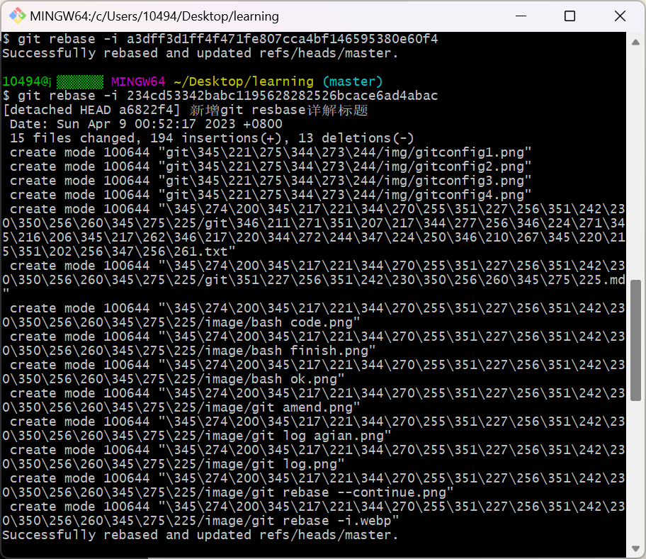
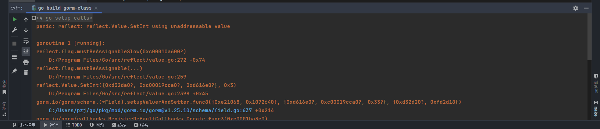

MyDoc
这是我的文档
D:
cd "D:/Code/Program/NoteBookDoc"
rm -rf ./src/*
cp D:/Code/NoteBook/* ./src/ -r
cd ./book
git init
git add .
git commit -m "更新文章内容"
git remote add origin git@github.com:struggle-upwards/NoteBook.git
git branch -m main
git push origin main --force
cd ../
mdbook serve
操作系统
操作系统
操作系统的定义
操作系统是计算机系统的一个系统软件，他统一管理计算机的软硬件资源和控制程序的执行
操作系统的分类
手工操作阶段，早期批处理系统，执行系统，多道批处理系统，分时系统，实时系统，通用操作系统，微机操作系统
作业 = 程序 + 数据（作业体）+作业说明书（用户想要系统怎么处理程序数据）
调度是操作系统或其他系统软件决定将计算机资源分配给哪些任务或进程的过程
手工操作阶段
数据程序交互依赖于人工换卡，人工装卡片，读取数据，计算机做运算
早期批处理系统（单道批处理系统）
用户对操作员提供数据，程序，作业说明书，操作员把用户数据（一堆卡片） ===> 从人工换卡一张变成了一堆
装到输入设备，传上磁带。
若监督程序发现当前作业（一张卡片）符合系统运行要求，把控制权交给作业，编译运行，
否则跳过不执行
直至作业执行完毕
（系统利用率不高，在cpu计算时候，需要数据，要等待IO读写完成，cpu才能继续计算，利用率不高）
多道批处理系统
可以支持多道程序执行，即同时运行多个程序，通过合理的调度算法来共享系统资源，提高系统的利用率和吞吐量
- 提高资源利用率：多道批处理系统可以同时处理多个作业，使得系统资源得到更充分的利用。当一个作业在等待I/O操作时，CPU可以被分配给另一个正在运行的作业，从而减少了资源空闲时间。
- 减少用户等待时间：多道批处理系统可以按照一定的调度算法同时运行多个作业，因此用户不需要等待一个作业执行完毕才能提交下一个作业，从而减少了用户的等待时间。
- 提高系统吞吐量：由于多道批处理系统能够并行执行多个作业，因此系统的吞吐量（即单位时间内完成的作业数量）相对较高，能够更有效地处理大量作业。
分时系统
分时系统将处理器时间切片，这是其核心实现原理之一。在分时系统中，处理器会周期性地轮流分配给各个用户或进程，每个用户或进程都被分配一小段时间（即时间片）来执行其任务。这种时间分配是周期性的，因此每个用户或进程都会在一定时间内获得处理器的执行时间。
实时系统
实时系统是一类针对时间敏感性应用设计的操作系统。它们的主要特点是对任务的响应时间有着严格的要求，必须在特定的时间范围内完成任务的处理。实时系统通常被用于需要及时响应的应用领域，如航空航天、工业控制、医疗设备等。
微机操作系统
个人机器，如笔记本电脑，32位，64位，有单用户多任务操作系统和多用户多任务操作系统（多个用户访问同一台主机，如UNIX操作系统）
网络操作系统
网络操作系统是一种专门设计用于网络环境下的操作系统，它提供了一系列功能和服务，以支持网络通信、数据传输和资源共享等。网络操作系统通常被用于服务器、路由器、交换机等网络设备上，以及用于构建分布式系统和云计算环境中。既可以让本地用户访问也能够让远程用户访问
分布式操作系统
分布式操作系统是一种运行在多台计算机上、通过网络协作工作的操作系统。它的设计目标是允许多个计算机节点（通常是服务器或节点）协同工作，共同提供服务和处理任务，以实现高性能、高可用性和可伸缩性。
嵌入式操作系统
嵌入式操作系统是专门设计用于嵌入式系统的操作系统，它通常运行在资源有限的嵌入式设备上，如微控制器、传感器、智能家居设备、工业控制系统等。嵌入式操作系统的设计目标是提供轻量级、高效率的操作系统内核，以满足嵌入式设备的特定需求。
操作系统的功能
处理器管理
对处理器的管理归结为对线程，进程的管理和调度
- 进程控制和管理
- 进程同步和互斥
- 进程通信
- 进程死锁
- 线程控制和管理
- 处理器调度
作业管理
操作系统对作业的控制和调度
- 作业输入
- 作业控制
- 作业调度
存储管理
内存的垃圾回收机制，提高存储利用率
- 主存分配与回收
- 地址转换和存储保护
- 主存的共享与保护
- 主存扩充
设备管理
提高cpu和IO读写利用率
- 提供设备控制处理
- 提供缓冲区处理
- 实现设备独立性
- 实现设备的分配与回收
- 实现共享设备的驱动调度
- 实现虚拟设备
文件管理
存储文件，保证文件安全
- 提供文件的逻辑组织方法
- 提供文件的物理组织方法
- 提供文件的存储的使用方法
- 提供文件的目录管理
- 实现文件的共享与保护
- 实现文件的存储空间管理
操作系统的特征
- 并发
- 并行
- 共享
- 异步性
操作系统的作用
用户层面：用户与计算机硬件系统的接口
资源管理层面：计算机系统资源的管理者
进程
进程的定义
进程（Process）是计算机中正在运行的程序的实例。它是操作系统分配资源和调度执行的基本单位。进程不仅仅是程序的代码，还包括程序执行期间所需的资源，如CPU时间、内存空间、文件和I/O设备等。
进程的组成
一个进程是由进程控制块(PCB)，数据段，程序段组成
PCB(进程控制块) --进程存在的唯一标识
记录了一个进程的CPU使用率，磁盘IO读写字节，内存占用率，进程状态(阻塞态，就绪态)
- 进程标识信息：如进程ID（PID）、父进程ID（PPID）。
- 处理器状态信息：如程序计数器、处理器寄存器。
- 内存管理信息：如基址寄存器、界限寄存器、页表信息。
- 调度和状态信息：如进程优先级、调度状态。
- 资源分配信息：如打开的文件、I/O设备。
进程的特征
1. 动态性
进程是一个动态的实体，它代表程序的执行过程。进程在其生命周期中会不断地进行状态转换，如从就绪状态变为运行状态，从运行状态变为等待状态等。
2. 独立性
每个进程都有自己独立的地址空间和资源，不会与其他进程直接共享其内存空间。操作系统通过进程控制块（PCB）来管理进程的独立性。
3. 并发性
多个进程可以同时存在，并在操作系统的调度下并发执行。操作系统通过多任务机制和时间片轮转等调度算法来实现进程的并发执行。
4. 异步性
进程按照各自独立的速度推进，进程的执行不必同步进行。一个进程的执行速度和进度通常不依赖于其他进程。
进程的状态
- 创建态：当处理程序从磁盘读取代码并编译成可执行文件后，通过系统调用进行进程创建。系统为该进程分配内存并创建相应的进程控制块（PCB），这时进程处于创建态。
- 就绪态：进程创建完成后，系统将其转换为就绪态。此时，进程已经准备好运行，等待CPU分配时间片。所有处于就绪态的进程保存在就绪队列中，等待调度程序的调度。
- 运行态：当调度程序选择一个处于就绪态的进程并将CPU分配给它时，进程进入运行态。进程在运行态时执行其指令，但可能因为多种原因（如时间片用完、被其他优先级更高的进程抢占、发生中断等）被中止，并转换回就绪态。
- 阻塞态：如果运行中的进程需要等待某些事件（如I/O操作完成、资源可用等），它会进入阻塞态。在阻塞态下，进程暂时停止运行，释放CPU给其他进程。当等待的事件发生后，系统会将该进程从阻塞态转换回就绪态，以便在下次被调度时继续执行。
- 终止态：当进程执行完所有指令或由于某些错误（如语法错误、系统崩溃等）无法继续运行时，它进入终止态。系统会进行垃圾回收，销毁进程并释放其占用的所有资源，包括内存。
进程状态转换
原语的目的是实现进程状态切换的过程不会被中断，本质靠开启开中断，和关中断两条特权指令实现。
关中断:屏蔽外界所有中断信号
开中断:感知外界的中断信号并作出反应，同时执行关中断和开中断这部分未执行的中断信号
例如:阻塞原语
阻塞原语会保留进程的状态，并更改PCB的state值，让进程从运行态转换为阻塞态，直到io读写完成，再重新恢复为就绪态，等待系统调度
进程状态的转换依靠原语实现，最主要是:
更改PCB的state状态
将PCB插入到转换状态的队列中
还可能伴随回收的执行
操作系统的定义
第一章
1.操作系统的概念
操作系统控制和管理计算机系统的软硬件，分配调度资源的软件
2.作用
管理硬件资源
提供用户界面，对用户十分友好
进程管理
存储管理
文件管理/IO故案例
网络通信
3.基础类型
-
批处理系统
-
分时系统
-
实时系统
-
微服务系统
-
微内核系统
第二章
进程和线程
进程（Process）是一个程序的运行实例。它包含了程序代码、当前活动的内容（包括程序计数器、寄存器、变量等）、程序运行所需的资源（如文件描述符、内存）以及执行状态。进程是操作系统分配资源和调度执行的基本单位。
线程是进程中的一个执行路径，一个进程包含多个线程，同时线程共享进程的资源
进程是资源分配的基本单位，线程是调度执行的基本单位
并发进程
特点为：交替执行，资源共享，独立性，同步与通信
使用时间片轮转算法，将cpu切割成若干时间片，让进程交替执行
优先级调度算法，优先级更高的优先进入执行状态
死锁
死锁产生的是进程或线程之间相互抢占资源而产生一种依赖关系，形成闭环，无法释放资源的现象
进程的状态
在操作系统中，进程的生命周期包括多个状态，每个状态代表进程在其生命周期中的不同阶段。常见的进程状态有以下几种：
- 新建（New）：进程正在被创建。
- 就绪（Ready）：进程已创建完成，等待被分配CPU时间。
- 运行（Running）：进程正在占用CPU执行。
- 等待（Waiting）或阻塞（Blocked）：进程等待某个事件（如I/O操作完成）而暂停执行。
- 终止（Terminated）：进程已完成执行或因某种原因被终止。
CPU三级调度
高级调度：作业调度，决定作业进入系统并转换为进程
中级调度：内存和外存进程的切换
低级调度：为进程分配cpu
CPU四级调度
高级调度
中级调度
低级调度
实时调度：对实时性有敏感的响应肌和措施
进程和作业的常用的三种调度算法
先来先服务，FCFS,短作业优先,SJF,时间片轮转RR
信号量
统计操作系统剩余的可用资源，用于多进程中资源共享的同步机制
进程同步
互斥锁，同步信号，读写锁，同步屏障，管程
作用：
多个进程或线程在不加同步的情况下同时访问和修改共享资源
在并发访问共享数据时，如果不加同步保护，可能会导致数据的读写操作顺序错误，进而导致数据不一致。
死锁
定义：两个或多个进程在争抢资源的时候都需要对方释放资源，产生的一种循环等待现象
解决死锁
破坏四大条件：循环等待，不可剥夺，占有且等待，互斥
死锁避免
银行家算法
系统调用
系统调用（System Call）是操作系统提供给用户程序用于请求操作系统服务的接口
Linux指令
# 安装pakeage包
yum install package
# 端口扫描
netstat -ano | grep 80
netstat -ano | findstr 80(windows)
# 根据PID结束进程
kill <PID>
# 根据PID强制结束进程
kill -9 <PID>
taskkill /pid <PID> (/f)(windows)
Git
git创建补丁
使用Git创建一个补丁文件（git patch）是很容易的，你需要知道它是分几次做完的。
本文将阐述怎样为你的仓库最近提交的文件创建一个补丁，也会介绍可以怎样在其他仓库中运用这个补丁。
准备工作
你可以遵循一些常用的git实践以便更容易地创建补丁。这些不是一定要做的事情，但是能让你的生活更简单。
如果你需要修复了一个bug或者需要创建新的内容，请在分支中进行操作。
如果你想为我的imdb创建一个补丁，首先你需要克隆我的仓库，然后为你将要提交的内容新建一个分支。在这个例子中，我们要为empty poster这个项目做一个虚拟的bug修复工作。
git clone git://github.com/ariejan/imdb.git
cd imdb
git checkout -b fix_empty_poster
现在在新的 fix_empty_poster分支中你可以写测试，更新代码或者做任何你想要修复的工作。
如果你对你的修改满意的话，你就可以提交你的补丁了。例子仅供参考:我假定你已经在fix_empty_poster分支上做了一些工作，但是还没有被合并到主支上。
创建patch
好了，现在我已经做了一些工作，看一些fix_empty_poster分支的git log文件：
git log --pretty=oneline -3
* ce30d1f - (fix_empty_poster) Added poster URL as part of cli output (7 minutes ago)
* 5998b80 - Added specs to test empty poster URL behaviour (12 minutes ago)
* aecb8cb - (REL-0.5.0, origin/master, origin/HEAD, master) Prepare release 0.5.0 (4 months ago)
在GitX中就像下面那样：
现在可以开始创建一个补丁了！我们需要把两个最新的提交放在一个文件中，发送并使用。因为我们之前已经创建了一个分支，所以我们就不用担心提交到哪里问题了。
git format-patch master --stdout > fix_empty_poster.patch
上面的方式将创建一个名为fix_empty_poster.patch的新文件，新文件里面有当前分支（fix_empty_poster）的所有的修改，主支中没有这些修改。一般情况下，git会为每一个提交创建一个独立的分支，这不是我们需要的，我们需要的是一个独立的补丁文件。
现在你已经为你所做的修复工作生成了一个补丁，你需要把补丁发送给维护项目的人。
应用补丁
谁会应用你刚刚发送的补丁呢？
首先，你可以简单地使用git apply查看补丁中的变化。
git apply --stat fix_empty_poster.patch
需要注意的是这条命令并没有运用补丁，只是告诉你这个补丁会做什么。在用你最喜欢的编辑器查看之后，你会看到到底做了哪些实际上的改变。
查看之后你突然对使用这个补丁之后会发生什么产生了兴趣。Git允许你在真正运用之前对补丁进行测试。
git apply --check fix_empty_poster.patch
如果没有发生任何错误，这个补丁就可以使用了。当然，你也可能看见运用补丁之后发生了很多问题。我使用git am 而不是git apply，因为git am允许你停止使用已经运用的补丁，可供以后参考。
git am --signoff < fix_empty_poster.patch
Applying: Added specs to test empty poster URL behaviour
Applying: Added poster URL as part of cli output
好了，补丁已经可以使用了，你的主支也已经更新了。当然你可以再次进行测试来确保没有问题发生。
在你的git日志中，你会发现提交信息中包含了一个“Signed-off-by”的标记，这个标记会被 Github和其他人读取，他们会了解到你在代码中提交了哪些有用的内容。
以上就是所有的内容！
git命令操作大全
检查git版本
git --version
查看git相关命令
git --help
查看当前的git配置信息
git config --list
查看git用户名
git config user.name
-查询⽬前git所使⽤的使⽤者名称
git config --global user.name 名称
注： --global 表示全局， 没有--global表示只设置在当前项目中的配置
查看git邮箱
git config user.email
-查询git所使⽤的email
git config --global user.email
设置 （配置）全局邮箱
git config --global user.email "eamil@qq.com"
全局配置用户名(设置git使⽤者名称)
git config --global user.name "username"
git对项目中的代码进行管理
初始化git储存
git init
需要提交的所有修改放到暂存区（Stage）
git add * //将工作区所有修改添加到暂存区
git add . //将工作区所有修改添加到暂存区
git add <file-name> //将指定文件添加到暂存区
git add *.js //提交所有.js格式文件
git add -f <file-name> // 强制添加 指定文件添加到暂存区
注：<file-name>指的是文件的名称
恢复（后悔药）
将暂存区的文件恢复到工作区
git reset <file-name> //从暂存区恢复指定到工作区
git reset -- . //从暂存区恢复所有文件到工作区
git reset --hard // 把暂存区的修改退回到工作区
查看工作区、暂存区的状态
git status
移除暂存区的修改
git rm --cached <file-name> //将本地暂存区的内容移除暂存区
将缓存区的文件，提交到本地仓库（版本库 ）
git commit <file-name> ... "相关的记录信息" //将缓存区的指定文件提交到本地仓库
git commit -m "相关的记录信息" //将缓存区的所有文件提交到本地仓库
git commit -am '相关的记录信息' //跳过暂存区域直接提交更新并且添加备注的记录信息
git commit --amend '相关的记录信息' //使用一次新的commit，替代上一次提交，如果代码没有任何新变化，则用来修改上一次commit的提交记录信息
撤销commit提交
git revert HEAD //撤销最近的一个提交(创建了一个撤销上次提交(HEAD)的新提交)
git reset --soft HEAD^
注意：Windows系统需要在^符号后面两边加上引号，如：
git reset --soft HEAD"^"
git revert HEAD^ //撤销上上次的提交
查看日志
查看历史提交(commit)记录
git log //查看历史commit记录
注：空格向下翻页，b向上翻页，q退出
git log --oneline //以简洁的一行显示，包含简洁哈希索引值
git log --pretty=oneline //查看日志且并且显示版本
git log --stat //显示每个commit中哪些文件被修改,分别添加或删除了多少行
查看分支合并图
git log --graph
查看版本线图
git log --oneline --graph
git版本控制（时光机）
回到指定哈希值对应的版本
git reset --hard <Hash> // 回滚到需要的版本 (回滚了仓库,暂存区,暂存区,工作区)
注:<Hash> 是版本的哈希值
git reset --hard HEAD //强制工作区、暂存区、本地库为当前HEAD指针所在的版本
版本回退
git reset --hard HEAD~1 //后退一个版本
注：~后面的数字表示回退多少个版本
其他版本回退
git reset --mixed <Hash> // 回滚到需要的版本 (回滚了仓库,暂存区)
git reset --soft <Hash> // 回退到需要的版本 （只回滚到本地仓库）
分支
查看分支
git branch //查看所有本地分支
git branch -r //查看所有远程分支
git branch -a //查看所有远程分支和本地分支
git branch --merged //查看已经合并的分支
创建分支（依然停留在当前的分支）
git branch <branch-name>
注: <branch-name> 是分支的名称
切换分支
git checKout <branch-name> //切换到指定分支，并更新工作区
git checkout - //切换到上一个分支
创建并切换分支（创建一个新的分支，并切换到这个新建的分支上）
git checkout -b <branch-name>
合并分支（合并某一个分支到当前分支）
git merge <branch-name>
删除分支
git branch -d <branch-name> //只能删除已经被当前分支合并的分支
git branch -D <>branch-name> //强制删除分支
删除远程分支
git push origin --delete <remote-branch-name>
注：<remote-branch-name> 远程分支名
git修改本地分支名和远程分支名
远程仓库（团队协作）
克隆远程仓库（从远程仓库拉取代码）
git clone <url>
注：<url> 远程仓库的地址
本地库与远程库进行关联
git remote add origin <url>
注：<url> 远程仓库的地址
查看远程仓库地址别名
git remote -v
新建远程仓库地址别名
git remote add <alias> <url>
注:<alias> 远程仓库的别名
<url> 远程仓库的地址
删除本地仓库中的远程仓库别名
git remote rm <alias>
注:<alias> 远程仓库的别名
复制代码
重命名远程仓库地址别名
git remote rename <old-alias> <new-alias>
注：<old-alias> 旧的远程仓库
<new-alias> 新的远程仓库
把远程库的修改拉取到本地
git fetch <alias/url> <remote-branch-name> //抓取远程仓库的指定分支到本地，但没有合并
git merge <alias-branch-name> //将抓取下来的远程的分支，跟当前所在分支进行合并
git pull <alias/url> <remote-branch-name> //拉取到本地，并且与当前所在的分支进行合并
注:<alias/url> 远程仓库的别名 或者是 远程仓库地址
<remote-branch-name> 远程分支名
将本地的分支推送到远程仓库
提示！：在推送前要先拉取哦 git pull
git push <alias/url> <branch-name> //将本地的每个分支推送到远程仓库
git push <alias/url> --force //强行推送 当前分支到远程仓库，即使有冲突
git push <alias/url> --all //推送所有本地分支到远程仓库
注:<alias/url> 远程仓库的别名 或者是 远程仓库地址
<branch-name> 本地分支名
查看配置信息
查看全局配置信息
git config --list --global

查看本地仓库配置信息
git config --list --local
查看系统配置信息
git config --list --system

查看所有配置信息
git config --list

git rebase详解
第一个作用：合并commit提交
一般情况下，我们进行开发时，都是从master分支拉一个自己的开发分支，进行代码修改操作，再git add以及git commit之后将我们修改好的代码git push到远程仓库。
但是，很多情况下，我们并不会仅仅在本地git commit一次，而是会执行很多次，而我们知道，每一个的git commit都会形成一个git节点，而如果我们把这些节点都push到远端，就会使项目的git日志很乱，因为你的这些commit对于其他同学来说都仅仅是为了完成你对应的修改工作，他们希望的是，你能在一次commit操作中把你的修改全部完成，这时，就可以用到我们的git rebase操作了，在git push之前，我们可以将几次本地的commit操作合并，这样，我们推送到远端的commit操作就只有一个了，更利于项目管理。
rebase为变基，git rebase -i 命令可以压缩合并多次提交，执行git rebase i hash就可以进行变基。
则会根据你设置的git默认编辑器打开我们需要修改的地方，我这里默认是vim，你也可以设置成其他

这个是里面的提示：
- pick：保留该commit（缩写:p）
- reword：保留该commit，但我需要修改该commit的注释（缩写:r）
- edit：保留该commit, 但我要停下来修改该提交(不仅仅修改注释)（缩写:e）
- squash：将该commit和前一个commit合并（缩写:s）用的比较多
- fixup：将该commit和前一个commit合并，但我不要保留该提交的注释信息（缩写:f）
- exec：执行shell命令（缩写:x）
- drop：我要丢弃该commit（缩写:d）
根据自己的需要修改commit信息

我这里修改了commit信息，想着是合并的，但是前面没有截图，是向把最近两条commit信息合并为一条的。进入了vim直接进行编辑修改commit信息，修改完成后保存退出，就会出现如下信息。

出现如下信息代表修改成功，我们git log查看是否成功

修改成功，以前我们本地原本有两条commit信息，如果push到远端就是两条commit提交记录，修改后，push到远端，只会显示一条，这个是git rebase的第一个作用。
第二个作用：合并分支
我们在日常开发中已经知道了git merge 分支名可以合并代码，为什么我们还要使用git rebase 分支名合并代码呢？这两者肯定是有所不同的，接下来我们就来探讨一下两者的不同点。
首先我们在master分支上修改了代码，然后使用git status查看我们是否修改了
证明我们修改了master分支的代码，然后我们提交并push到远程。

我们知道，我们现在master分支的代码是最新的，但是我们dev分支的代码还不是最新的，因此我们需要把dev分支的代码更新到最新状态，如果dev分支的代码有所改动，我们可以使用git stash先存在git栈中，然后使用git merge master合并master分支的代码到dev分支。

合并完成后，我们发现在dev分支多了一条合并master分支的代码到dev分支的git记录，有所区别的地方就在这里了，git rebase 分支名就不会出现这一条合并的记录。
其他理解：我们先从 master 分支切出一个 dev 分支，进行开发：
其他同学完成了一次 hotfix，并合并入了 master 分支，此时 master 已经领先于你的 dev分支了：

使用 rebase 来同步其他同学修改的结果，来保证自己的代码是最新的版本

git rebase 做了什么操作呢？
首先，git 会把 dev 分支里面的每个 commit 取消掉；
其次，把上面的操作临时保存成 patch 文件，存在 .git/rebase 目录下；
然后，把 dev 分支更新到最新的 master 分支；
最后，把上面保存的 patch 文件应用到 dev 分支上。
在 rebase 的过程中，也许会出现冲突 conflict。在这种情况，git 会停止 rebase 并会让你去解决冲突。在解决完冲突后，用 git add 命令去更新这些内容。注意，你无需执行 git commit-m 'xxx'，只要执行 git rebase continue
这样 git 会继续应用余下的 patch 补丁文件。在任何时候，我们都可以用 --abort 参数来终止 rebase 的行动，并且分支会回到 rebase 开始前的状态。
根据上文来看，
git-rebase很完美，解决了我们的两个问题： 1.合并commit记录，保持分支整洁； 2.相比merge来说会减少分支合并的记录；缺点就是：
- 如果你的分支不只有你在进行开发，那么
git-rebase可能会导致提交记录的丢失。
git仓库中添加子仓库
如果你在你的携带git仓库的目录下，有子git仓库，那么你执行git add .的时候，会出现“You've added another git repository inside your current repository."的报错。
可以这么处理：
首先，建议你的远程仓库的命名跟子仓库相同，这样不会有两个仓库存在，或许你可以配置.gitignore去解决这个问题，但是不建议这么做，会比较繁琐。
-
添加子仓库地址
git submodule add 你的子仓库的地址 # 也就是上面所说，如果的你子仓库命名和本地目录下的不一样，就会克隆一个项目下来，多了一层结构，如果相同如果出现
xxx already exists in the index提示，请使用如下命令，清除缓存：git rm -r --cached 文件名 -
到父级仓库进行提交即可
git add . git commit -m "xxx"
注意，成功后你得父级会生成.gitmodules文件
[submodule "jira-project"]
path = jira-project
url = https://gitee.com/zzb1049/jira-project.git
[submodule "Rudex/redux-learning"]
path = Rudex/redux-learning
url = https://gitee.com/zzb1049/redux-learning.git
[submodule "React/react-pratice"]
path = React/react-pratice
url = https://gitee.com/zzb1049/react-pratice.git
git在Jetbrains中的使用
复制修订号
复制git commit 到git本地仓库的commit-id
创建补丁
相当于会把这次提交打成一个tag包，导出后就相当于记录了这次提交文件的变动，修改、增加、删除了些什么东西
Docker
gin-vue-community
gin-vue-community是一个充满活力编程交流天地，融汇GIN框架与VUE技术爱好者，🚀共创代码艺术，共享知识盛宴📚，携手解决开发难题💡，在数字世界里并肩前行👫。
项目目录结构
gin-vue-community
├─ 📁blog
├─ 📁data
│ └─ 📄gin-vue-community.sql
├─ 📁script
│ ├─ 📄deploy.py
│ └─ 📄rebuild.py
├─ 📁server
│ ├─ 📁api
│ │ └─ 📁v1
│ │ ├─ 📁article
│ │ │ └─ 📄enter.go
│ │ └─ 📁user
│ │ └─ 📄enter.go
│ ├─ 📁dao
│ │ ├─ 📄ArticleDao.go
│ │ └─ 📄UserDao.go
│ ├─ 📁docs
│ │ └─ 📄docs.go
│ ├─ 📁global
│ │ └─ 📄global.go
│ ├─ 📁initialize
│ │ ├─ 📁config
│ │ │ └─ 📄mysql.go
│ │ ├─ 📄ensure_tables.go
│ │ └─ 📄router.go
│ ├─ 📁middleware
│ │ ├─ 📄cors.go
│ │ └─ 📄jwt.go
│ ├─ 📁models
│ │ ├─ 📁article
│ │ │ └─ 📄ArticleModel.go
│ │ ├─ 📁common
│ │ │ ├─ 📁request
│ │ │ │ ├─ 📄article.go
│ │ │ │ └─ 📄user.go
│ │ │ └─ 📁response
│ │ │ ├─ 📄article.go
│ │ │ └─ 📄response.go
│ │ ├─ 📁user
│ │ │ └─ 📄UserModel.go
│ │ └─ 📄enter.go
│ ├─ 📁router
│ │ └─ 📄enter.go
│ ├─ 📁service
│ │ ├─ 📁tmp
│ │ ├─ 📄ArticleService.go
│ │ └─ 📄UserService.go
│ ├─ 📁tmp
│ ├─ 📁utils
│ │ ├─ 📄claims.go
│ │ ├─ 📄convert.go
│ │ └─ 📄jwt.go
│ ├─ 📄go.mod
│ ├─ 📄go.sum
│ └─ 📄main.go
├─ 📁tar
├─ 📁web
│ ├─ 📁nginx
│ │ ├─ 📁nginx-http
│ │ ├─ 📁nginx-web
│ │ └─ 📁ssl
│ ├─ 📁node_modules
│ ├─ 📁src
│ │ ├─ 📁api
│ │ │ ├─ 📄Article.js
│ │ │ └─ 📄User.js
│ │ ├─ 📁assets
│ │ │ └─ 📁logo
│ │ │ └─ 📄gvc.png
│ │ ├─ 📁components
│ │ ├─ 📁routes
│ │ │ └─ 📄index.js
│ │ ├─ 📁stores
│ │ │ └─ 📄article.js
│ │ ├─ 📁style
│ │ │ └─ 📄common.scss
│ │ ├─ 📁utils
│ │ │ └─ 📄http.js
│ │ ├─ 📁views
│ │ │ ├─ 📁Article
│ │ │ │ ├─ 📁components
│ │ │ │ │ ├─ 📄ArticleContent.vue
│ │ │ │ │ ├─ 📄ArticleItem.vue
│ │ │ │ │ └─ 📄LabelBar.vue
│ │ │ │ └─ 📄index.vue
│ │ │ ├─ 📁Community
│ │ │ │ └─ 📄index.vue
│ │ │ ├─ 📁Course
│ │ │ │ └─ 📄index.vue
│ │ │ ├─ 📁Document
│ │ │ │ └─ 📄index.vue
│ │ │ ├─ 📁Layout
│ │ │ │ ├─ 📁components
│ │ │ │ │ ├─ 📄Content.vue
│ │ │ │ │ └─ 📄Navbar.vue
│ │ │ │ └─ 📄index.vue
│ │ │ ├─ 📁Login
│ │ │ │ └─ 📄index.vue
│ │ │ └─ 📁Test
│ │ │ └─ 📄index.vue
│ │ ├─ 📄App.vue
│ │ └─ 📄main.js
│ ├─ 📄.env.development
│ ├─ 📄.env.production
│ ├─ 📄Dockerfile.http
│ ├─ 📄Dockerfile.web
│ ├─ 📄index.html
│ └─ 📄vite.config.js
├─ 📄.gitignore
└─ 📄README.md
vite.config.js
import { defineConfig, loadEnv } from 'vite'
import vue from '@vitejs/plugin-vue'
// vite调试工具,非常卡
// import VueDevTools from 'vite-plugin-vue-devtools'
import path from 'path'
export default defineConfig(({ mode }) => {
const env = loadEnv(mode, process.cwd());
return {
plugins: [
vue(),
// VueDevTools(),
],
// 配置项目别名
resolve: {
alias: {
'@': path.resolve(__dirname, 'src')
},
},
server: {
host: '0.0.0.0',
port: Number(env.VITE_CLI_PORT),
// 是否开启 https
https: false,
// 设置反向代理，跨域(开发环境)
proxy: {
[env.VITE_BASE_API]: {
// 后台地址
target: `${env.VITE_BASE_PATH}:${env.VITE_SERVER_PORT}`,
changeOrigin: true,
rewrite: path => path.replace(new RegExp(`^${env.VITE_BASE_API}`), '')
},
[env.VITE_FILE_API]: {
// 后台地址
target: `${env.VITE_BASE_PATH}:${env.VITE_SERVER_PORT}`,
changeOrigin: true,
rewrite: path => path.replace(new RegExp(`^${env.VITE_FILE_API}`), '')
}
}
}
}
})
// https://vitejs.dev/config/
// export default defineConfig({
// plugins: [
// vue(),
// // VueDevTools(),
// ],
// // 配置项目别名
// resolve: {
// alias: {
// '@': path.resolve(__dirname, "src")
// },
// },
// server: {
// host: '0.0.0.0',
// port: 3000,
// // 是否开启 https
// https: false,
// // 设置反向代理，跨域(开发环境)
// proxy: {
// '/api': {
// // 后台地址
// target: 'http://localhost:8080',
// changeOrigin: true,
// rewrite: path => path.replace(/^\/api/, '')
// }
// }
// }
// })
.env.development
ENV = 'development'
# 前端端口
VITE_CLI_PORT = 3000
# 后端端口
VITE_SERVER_PORT = 8080
# 前端普通请求代理
VITE_BASE_API = /api
# 前端文件请求代理
VITE_FILE_API = /api
# 请求基地址
VITE_BASE_PATH = http://localhost
VITE_API_URL = http://localhost:3000/api
# 编辑器
VITE_EDITOR = vscode
.env.production
ENV = 'production'
# nginx代理转发
VITE_BASE_API = /api
VITE_FILE_API = /api
# 请求基地址
VITE_BASE_PATH = https://pioneerpan.cn
VITE_API_URL = https://pioneerpan.cn/api
nginx配置(default.conf) --http服务
server {
listen 80;
server_name pioneerpan.cn;
# 重定向到 https
return 301 https://$host$request_uri;
}
server {
listen 443 ssl;
server_name pioneerpan.cn;
ssl_certificate /etc/nginx/ssl/server.crt;
ssl_certificate_key /etc/nginx/ssl/server.key;
ssl_session_cache shared:SSL:1m;
ssl_session_timeout 5m;
ssl_ciphers HIGH:!aNULL:!MD5;
ssl_prefer_server_ciphers on;
location / {
proxy_pass https://web:3000/;
}
location ^~ /blog/{
rewrite ^/blog/(.*)$ /$1 break;
proxy_pass https://pioneerpan.cn:4000/;
}
#error_page 404 /404.html;
# redirect server error pages to the static page /50x.html
#
error_page 500 502 503 504 /50x.html;
location = /50x.html {
root html;
}
# nginx日志
access_log /etc/nginx/logs/access.log ;
error_log /etc/nginx/logs/error.log error;
}
nginx配置(default.conf) --web服务
server {
listen 3000 ssl;
server_name pioneerpan.cn;
ssl_certificate /etc/nginx/ssl/server.crt;
ssl_certificate_key /etc/nginx/ssl/server.key;
ssl_session_cache shared:SSL:1m;
ssl_session_timeout 5m;
ssl_ciphers HIGH:!aNULL:!MD5;
ssl_prefer_server_ciphers on;
location / {
root /usr/share/nginx/html;
index index.html index.htm;
try_files $uri $uri/ @router;
}
location @router{
rewrite ^(.+)$ /index.html last;
proxy_set_header Host $host;
proxy_set_header X-Real-IP $remote_addr;
proxy_set_header X-Forwarded-For $proxy_add_x_forwarded_for;
proxy_set_header X-Forwarded-Proto $scheme;
}
location /api/{
rewrite ^/api/(.*)$ /$1 break;
proxy_pass http://pioneerpan.cn:8080/;
}
location /api/swagger/index.html{
proxy_pass http://pioneerpan.cn:8080/swagger/index.html;
proxy_set_header Host $host;
proxy_set_header X-Real-IP $remote_addr;
proxy_set_header X-Forwarded-For $proxy_add_x_forwarded_for;
proxy_set_header X-Forwarded-Proto $scheme;
}
error_page 500 502 503 504 /50x.html;
location = /50x.html {
root html;
}
# nginx日志
access_log /etc/nginx/logs/access.log ;
error_log /etc/nginx/logs/error.log error;
}
部署vue
Dockerfile.http
# 设置基础镜像 -- web服务
FROM nginx:stable-alpine3.19-slim
# 将ssl文件夹中的内容复制到 /etc/nginx/ssl/ 这个目录下面
COPY nginx/ssl/ /etc/nginx/ssl/
# 将default.conf文件覆盖/etc/nginx/conf.d/default.conf 这个文件
COPY nginx/nginx-http/default.conf /etc/nginx/conf.d/default.conf
# 暴露端口 80 443
EXPOSE 80 443
# 启动nginx
CMD ["nginx", "-g", "daemon off;"]
Dockerfile.web
# 拉取node镜像
FROM node:20.12.2-alpine3.19 as builder
WORKDIR /app
COPY . .
RUN rm -rf node_modules
# 安装 pnpm 并使用 pnpm 安装依赖和构建项目
RUN npm install -g pnpm
RUN pnpm config set registry https://registry.npmmirror.com/
RUN pnpm install
RUN pnpm run build
# 设置基础镜像 -- web服务
FROM nginx:stable-alpine3.19-slim
# 将ssl文件夹中的内容复制到 /etc/nginx/ssl/ 这个目录下面
COPY nginx/ssl/ /etc/nginx/ssl/
# 将default.conf文件覆盖/etc/nginx/conf.d/default.conf 这个文件
COPY nginx/nginx-web/default.conf /etc/nginx/conf.d/default.conf
# 将dist文件中的内容复制到 /usr/share/nginx/html/ 这个目录下面
COPY --from=builder /app/dist/ /usr/share/nginx/html/
# 暴露端口3000
EXPOSE 3000
# 启动nginx
CMD ["nginx", "-g", "daemon off;"]
部署gin
# 拉取golang:1.22.2轻量镜像
FROM golang:1.22.2-alpine3.19 AS builder
# 配置模块代理
ENV GO111MODULE=on
ENV GOPROXY=https://goproxy.cn,direct
## 在docker的根目录下创建相应的使用目录
RUN mkdir -p /www/webapp
## 设置工作目录
WORKDIR /www/webapp
## 将后端的gin代码复制到docker容器中
COPY . .
#go构建可执行文件
RUN go build main.go
RUN chmod +x main
FROM alpine:latest
COPY --from=builder /www/webapp /usr/local/bin
WORKDIR /usr/local/bin
EXPOSE 8080
CMD ["./main"]
部署mysql
FROM mysql:8.0.35
ENV LANG=C.UTF-8
# 设置root用户的密码
ENV MYSQL_ROOT_PASSWORD=pzj20162116
# 将自定义配置文件复制到镜像中
COPY ./my.cnf /etc/mysql/my.cnf
# 将初始化SQL脚本复制到镜像中
COPY ./gin-vue-community.sql /docker-entrypoint-initdb.d/
# 确保初始化脚本具有正确的权限
RUN chmod 644 /docker-entrypoint-initdb.d/gin-vue-community.sql
EXPOSE 3306
docker-compose.yml(开发环境)
version: '3.8'
networks:
network:
services:
http:
build:
context: ./web
dockerfile: Dockerfile.http
ports:
- "80:80"
- "443:443"
volumes:
- /code/GVC/data/http/nginx/logs:/etc/nginx/logs
container_name: GVC_HTTP
networks:
- network
restart: always
blog:
build:
context: ./blog
dockerfile: Dockerfile
ports:
- "4000:4000"
container_name: GVC_BLOG
networks:
- network
restart: always
web:
build:
context: ./web
dockerfile: Dockerfile.web
ports:
- "3000:3000"
volumes:
- /code/GVC/data/web/nginx/logs:/etc/nginx/logs
container_name: GVC_WEB
networks:
- network
restart: always
server:
build:
context: ./server
dockerfile: Dockerfile
ports:
- "8080:8080"
container_name: GVC_SERVER
depends_on:
- database
networks:
- network
restart: always
database:
build:
context: ./data
dockerfile: Dockerfile
ports:
- "3306:3306"
volumes:
- /code/GVC/data/mysql:/var/lib/mysql
container_name: GVC_DATABASE
networks:
- network
restart: always
docker-compose-production.yml(生产环境)
# 打完tar包的运行配置,指定/code/GVC/data/为数据目录
version: '3.8'
networks:
network:
services:
http:
image: gin-vue-community-http:latest
ports:
- "80:80"
- "443:443"
volumes:
- /code/GVC/data/http/nginx/logs:/etc/nginx/logs
container_name: GVC_HTTP
networks:
- network
restart: always
blog:
image: gin-vue-community-blog:latest
ports:
- "4000:4000"
container_name: GVC_BLOG
networks:
- network
restart: always
web:
image: gin-vue-community-web:latest
ports:
- "3000:3000"
volumes:
- /code/GVC/data/web/nginx/logs:/etc/nginx/logs
container_name: GVC_WEB
networks:
- network
restart: always
database:
image: gin-vue-community-database:latest
ports:
- "3306:3306"
volumes:
- /code/GVC/data/mysql:/var/lib/mysql
container_name: GVC_DATABASE
networks:
- network
server:
image: gin-vue-community-server:latest
ports:
- "8080:8080"
container_name: GVC_SERVER
networks:
- network
depends_on:
- database
restart: always
部署脚本
本地
cd script
python deploy.py
服务器
python3 rebuild.py
blog启动服务
使用docker分开管理服务
cd web
docker build -t vue-image .
docker run -p 3000:80 -d --name blog-vue vue-image
cd ../server
docker build -t gin-image .
docker run --name blog-gin -p 8080:8080 -d gin-image
使用docker-compose一起管理服务
docker-compose.yml
version: '3.8'
services:
web:
build:
context: ./web
dockerfile: Dockerfile
ports:
- "3000:80"
container_name: blog-vue
server:
build:
context: ./server
dockerfile: Dockerfile
ports:
- "8080:8080"
container_name: blog-gin
docker-compose down
docker rmi blog_web blog_server
# 构建容器
docker-compose build
# 启动容器
docker-compose up -d
# 更新容器并重启
docker-compose up --build
docker-compose是一个用于定义和运行多容器Docker应用程序的工具。通过一个docker-compose.yml文件，你可以配置你的应用服务，然后使用docker-compose命令来创建和启动所有服务。以下是一些常用的docker-compose命令：
基本命令
-
docker-compose up -
- 启动和运行整个应用。默认情况下，
docker-compose up会尝试自动构建任何尚未构建的镜像。如果你想强制它重新构建镜像，可以使用--build选项。
- 启动和运行整个应用。默认情况下，
-
docker-compose down -
- 停止并删除容器、网络、卷和镜像创建的
docker-compose up。
- 停止并删除容器、网络、卷和镜像创建的
构建和镜像管理
-
docker-compose build -
- 构建或重新构建服务中定义的镜像。
-
docker-compose push -
- 将服务镜像推送到Docker Hub或其他镜像仓库。
-
docker-compose pull -
- 拉取服务依赖的镜像。
服务管理
-
docker-compose start -
- 启动已经存在的服务容器。
-
docker-compose stop -
- 停止正在运行的容器而不删除它们。与
docker-compose down不同，不会删除容器和网络。
- 停止正在运行的容器而不删除它们。与
-
docker-compose restart -
- 重启服务。
-
docker-compose pause -
- 暂停服务中的容器。
-
docker-compose unpause -
- 恢复服务中已暂停的容器。
查看服务状态和日志
-
docker-compose ps -
- 列出项目中当前的容器。
-
docker-compose logs -
- 查看服务的日志输出。可以指定服务名称来查看特定服务的日志。
运行一次性命令
-
docker-compose run -
- 在一个新容器中运行一个一次性命令。例如，
docker-compose run app bash会在app服务的容器中启动一个新的bash会话。
- 在一个新容器中运行一个一次性命令。例如，
-
docker-compose exec -
- 在运行中的容器上执行命令。与
run不同，exec会在已经存在且正在运行的容器中执行命令。
- 在运行中的容器上执行命令。与
其他命令
-
docker-compose config -
- 验证并查看配置。这个命令可以用来检查配置文件的语法是否正确。
-
docker-compose version -
- 显示Docker Compose的版本信息。
docker常用命令
#info|version
docker info #显示docker的系统信息，包括镜像和容器的数量
docker version #显示docker的版本信息。
#帮助命令
docker 命令 --help #帮助命令
#镜像命令
docker images #查看所有本地主机上的镜像 可以使用docker image ls代替
docker search #搜索镜像
docker pull #下载镜像 docker image pull
docker rmi #删除镜像 docker image rm
#容器命令
docker run 镜像id #新建容器并启动
docker ps 列出所有运行的容器 docker container list
docker rm 容器id #删除指定容器
#删除所有容器
docker rm -f $(docker ps -aq) #删除所有的容器
docker ps -a -q|xargs docker rm #删除所有的容器
#启动和停止容器
docker start 容器id #启动容器
docker restart 容器id #重启容器
docker stop 容器id #停止当前正在运行的容器
docker kill 容器id #强制停止当前容器
#退出容器
exit #容器直接退出
ctrl +P +Q #容器不停止退出 ---注意：这个很有用的操作
#其他常用命令
docker run -d 镜像名 #后台启动命令
docker logs #查看日志
docker top 容器id #查看容器中进程信息ps
docker inspect 容器id #查看镜像的元数据
docker exec -it 899c718ac4fe(容器id) /bin/bash #进入当前容器后开启一个新的终端，可以在里面操作。（常用）
docker attach # 进入容器正在执行的终端
docker cp 容器id:容器内路径 主机目的路径 #从容器内拷贝到主机上
docker命令大全
docker attach #连接到正在运行中的容器
docker build #使用 Dockerfile 创建镜像
docker builder #管理builds
docker builder prune #清除build缓存
docker checkpoint #管理checkpoints
docker checkpoint create #从正在运行的容器创建检查点
docker checkpoint ls #列出容器的检查点
docker checkpoint rm #删除指定的检查点
docker commit #从容器创建一个新的镜像
docker config #管理Docker配置
docker config create #创建配置文件
docker config inspect #查看配置文件信息
docker config ls #显示docker里已经保存得配置文件
docker config rm #删除配置文件
docker container #管理容器
docker container prune #删除所有已停止的容器
docker context #管理contexts
docker context create #创建一个上下文
docker context export #将上下文导出到tar或kubecconfig文件中
docker context import #从tar或zip文件导入上下文
docker context inspect #在一个或多个上下文上显示详细信息
docker context ls #列出上下文
docker context rm #删除一个或多个上下文
docker context update #更新
docker context use #设置当前docker的上下文
docker cp #用于容器与主机之间的数据拷贝
docker create #创建一个新的容器但不启动它
docker diff #检查容器里文件结构的更改
docker events #从服务器获取实时事件
docker exec #在运行的容器中执行命令
docker export #将文件系统作为一个tar归档文件导出到STDOUT
docker history #查看指定镜像的创建历史
docker image #管理镜像
docker image inspect #显示一个或多个镜像的元数据
docker image ls #列出本地镜像
docker image prune #删除没有使用的镜像
docker image rm #删除一个或多个镜像
docker images #列出本地镜像
docker import #从归档文件中创建镜像
docker info #显示 Docker 系统信息，包括镜像和容器数
docker inspect #获取容器/镜像的元数据
docker kill #杀掉一个运行中的容器
docker load #导入使用 docker save 命令导出的镜像
docker login #登陆到一个Docker镜像仓库，如果未指定镜像仓库地址，默认为官方仓库 Docker Hub
docker logout #登出一个Docker镜像仓库，如果未指定镜像仓库地址，默认为官方仓库 Docker Hub
docker logs #获取容器的日志
docker manifest #管理manifest(实验，不应用于生产环境)
docker manifest annotate #向本地镜像清单添加附加信息
docker manifest create #创建用于注释和推入注册表的本地清单列表
docker manifest inspect #显示镜像清单或清单列表
docker manifest push #将清单列表推入仓库
docker manifest rm #从本地存储中删除一个或多个清单列表
docker network #管理网络
docker network connect #将容器连接到网络
docker network create #创建一个网络
docker network disconnect #断开容器的网络
docker network inspect #显示一个或多个网络的元数据
docker network ls #列出网络
docker network prune #删除所有没有使用的网络
docker network rm #删除一个或多个网络
docker node #管理集群(swarm)节点
docker node demote #从群集(swarm)管理器中降级一个或多个节点
docker node inspect #显示一个或多个节点的元数据
docker node ls #列出群集(swarm)中的节点
docker node promote #将一个或多个节点推入到群集管理器中
docker node ps #列出在一个或多个节点上运行的任务，默认为当前节点
docker node rm #从群集(swarm)删除一个或多个节点
docker node update #更新一个节点
docker pause #暂停容器中所有的进程
docker plugin #管理插件
docker plugin create #从rootfs和配置创建一个插件。插件数据目录必须包含config.json和rootfs目录。
docker plugin disable #禁用插件
docker plugin enable #启用插件
docker plugin inspect #显示一个或多个插件的元数据
docker plugin install #安装一个插件
docker plugin ls #列出所有插件
docker plugin push #将插件推送到注册表
docker plugin rm #删除一个或多个插件
docker plugin set #更改插件的设置
docker plugin upgrade #升级现有插件
docker port #列出指定的容器的端口映射，或者查找将PRIVATE_PORT NAT到面向公众的端口
docker ps #列出容器
docker pull #从镜像仓库中拉取或者更新指定镜像
docker push #将本地的镜像上传到镜像仓库,要先登陆到镜像仓库
docker rename #重命名容器
docker restart #重启容器
docker rm #删除一个或多个容器
docker rmi #删除一个或多个镜像
docker run #创建一个新的容器并运行一个命令
docker save #将指定镜像保存成 tar 归档文件
docker search #从Docker Hub查找镜像
docker secret #管理Docker secrets
docker secret create #从文件或STDIN创建一个秘密作为内容
docker secret inspect #显示有关一个或多个秘密的详细信息
docker secret ls #列出秘密
docker secret rm #删除一个或多个秘密
docker service #管理服务
docker service create #创建一个服务
docker service inspect #查看服务的元数据
docker service logs #获取服务的日志
docker service ls #列出服务
docker service ps #列出一个或多个服务的任务
docker service rm #删除一个或多个服务
docker service rollback #将更改恢复到服务的配置
docker service scale #缩放一个或多个复制服务
docker service update #更新服务
docker stack #管理堆栈
docker stack deploy #部署新的堆栈或更新现有堆栈
docker stack ls #列出现有堆栈
docker stack ps #列出堆栈中的任务
docker stack rm #删除堆栈
docker stack services #列出堆栈中的服务
docker start #启动一个或多个已经被停止的容器
docker stats #显示容器的实时流资源使用统计信息
docker stop #停止一个运行中的容器
docker swarm #管理集群(Swarm)
docker swarm ca #查看或旋转当前群集CA证书。此命令必须针对管理器节点
docker swarm init #初始化一个群集(Swarm)
docker swarm join #加入群集作为节点和/或管理器
docker swarm join-token #管理加入令牌
docker swarm leave #离开群集(Swarm)
docker swarm unlock #解锁群集(Swarm)
docker swarm unlock-key #管理解锁钥匙
docker swarm update #更新群集(Swarm)
docker system #管理Docker
docker system df #显示docker磁盘使用情况
docker system events #从服务器获取实时事件
docker system info #显示系统范围的信息
docker system prune #删除未使用的数据
docker tag #标记本地镜像，将其归入某一仓库
docker top #查看容器中运行的进程信息，支持 ps 命令参数
docker trust #管理Docker镜像的信任
docker trust inspect #返回有关key和签名的低级信息
docker trust key #管理登入Docker镜像的keys
docker trust key generate #生成并加载签名密钥对
docker trust key load #加载私钥文件以进行签名
docker trust revoke #删除对镜像的认证
docker trust sign #镜像签名
docker trust signer #管理可以登录Docker镜像的实体
docker trust signer add #新增一个签名者
docker trust signer remove #删除一个签名者
docker unpause #恢复容器中所有的进程
docker update #更新一个或多个容器的配置
docker version #显示 Docker 版本信息
docker volume #管理volumes
docker volume create #创建一个卷
docker volume inspect #显示一个或多个卷的元数据
docker volume ls #列出卷
docker volume prune #删除所有未使用的卷
docker volume rm #删除一个或多个卷
docker wait #阻塞运行直到容器停止，然后打印出它的退出代码
docker部署gin,vue博客
package.json
{
"name": "gin-vue-commuity",
"private": true,
"version": "0.0.0",
"type": "module",
"scripts": {
"dev": "vite --mode development",
"build": "vite build --mode production",
"preview": "vite preview"
},
"dependencies": {
"@kangc/v-md-editor": "^2.3.18",
"@vueuse/core": "^10.11.0",
"axios": "^1.7.2",
"babel-runtime": "^6.26.0",
"default-passive-events": "^2.0.0",
"highlight.js": "^11.9.0",
"js-cookie": "^3.0.5",
"node-sass": "^9.0.0",
"pinia": "^2.1.7",
"sass": "^1.77.6",
"sass-loader": "^14.2.1",
"vue": "^3.4.31",
"vue-router": "^4.4.0"
},
"devDependencies": {
"@vicons/ionicons5": "^0.12.0",
"@vitejs/plugin-vue": "^5.0.5",
"naive-ui": "^2.38.2",
"vfonts": "^0.0.3",
"vite": "^5.3.2",
"vite-plugin-vue-devtools": "^7.3.5"
}
}
vite.config.js
import { defineConfig, loadEnv } from 'vite'
import vue from '@vitejs/plugin-vue'
// vite调试工具,非常卡
// import VueDevTools from 'vite-plugin-vue-devtools'
import path from 'path'
export default defineConfig(({ mode }) => {
const env = loadEnv(mode, process.cwd());
return {
plugins: [
vue(),
// VueDevTools(),
],
// 配置项目别名
resolve: {
alias: {
'@': path.resolve(__dirname, 'src')
},
},
server: {
host: '0.0.0.0',
port: Number(env.VITE_CLI_PORT),
// 是否开启 https
https: false,
// 设置反向代理，跨域(开发环境)
proxy: {
[env.VITE_BASE_API]: {
// 后端普通接口地址
target: `${env.VITE_BASE_PATH}:${env.VITE_SERVER_PORT}`,
changeOrigin: true,
rewrite: path => path.replace(new RegExp(`^${env.VITE_BASE_API}`), '')
},
[env.VITE_FILE_API]: {
// 后端图片接口地址
target: `${env.VITE_BASE_PATH}:${env.VITE_SERVER_PORT}`,
changeOrigin: true,
rewrite: path => path.replace(new RegExp(`^${env.VITE_FILE_API}`), '')
}
}
}
}
})
// https://vitejs.dev/config/
// export default defineConfig({
// plugins: [
// vue(),
// // VueDevTools(),
// ],
// // 配置项目别名
// resolve: {
// alias: {
// '@': path.resolve(__dirname, "src")
// },
// },
// server: {
// host: '0.0.0.0',
// port: 3000,
// // 是否开启 https
// https: false,
// // 设置反向代理，跨域(开发环境)
// proxy: {
// '/api': {
// // 后台地址
// target: 'http://localhost:8080',
// changeOrigin: true,
// rewrite: path => path.replace(/^\/api/, '')
// }
// }
// }
// })
.env.development
ENV = 'development'
# 前端端口
VITE_CLI_PORT = 3000
# 后端端口
VITE_SERVER_PORT = 8080
# 前端普通请求代理
VITE_BASE_API = /api
# 前端文件请求代理
VITE_FILE_API = /api
# 请求基地址
VITE_BASE_PATH = http://127.0.0.1
# 编辑器
VITE_EDITOR = vscode
.env.production
ENV = 'production'
# 打包路径
VITE_PUBLIC_PATH = '/'
# 前端端口
VITE_CLI_PORT = 3000
# 后端端口
VITE_SERVER_PORT = 8080
# 前端普通请求代理
VITE_BASE_API = /api
# 前端文件请求代理
VITE_FILE_API = /api
# 请求基地址
VITE_BASE_PATH = http://113.45.146.15
nginx配置(default.conf)
server {
listen 3000;
server_name localhost;
location / {
root /usr/share/nginx/html;
index index.html index.htm;
try_files $uri $uri/ @router;
}
location @router{
rewrite ^(.+)$ /index.html last;
}
location /api/{
rewrite ^/api/(.*)$ /$1 break;
proxy_pass http://113.45.146.15:8080/;
}
location /docs/{
proxy_pass http://113.45.146.15:8080/swagger/index.html;
proxy_set_header Host $host;
proxy_set_header X-Real-IP $remote_addr;
proxy_set_header X-Forwarded-For $proxy_add_x_forwarded_for;
proxy_set_header X-Forwarded-Proto $scheme;
}
#error_page 404 /404.html;
# redirect server error pages to the static page /50x.html
#
error_page 500 502 503 504 /50x.html;
location = /50x.html {
root html;
}
# nginx日志
access_log /etc/nginx/logs/access.log ;
error_log /etc/nginx/logs/error.log error;
}
部署vue
# 拉取node镜像
FROM node:20.12.2-alpine3.19 as builder
WORKDIR /app
COPY . .
RUN rm -rf dist
# 安装 cnpm 并使用 cnpm 安装依赖和构建项目
RUN npm install -g cnpm --registry=https://registry.npmmirror.com && \
cnpm install && \
cnpm run build
# 设置基础镜像
FROM nginx:stable-alpine3.19-slim
# 将dist文件中的内容复制到 /usr/share/nginx/html/ 这个目录下面
COPY --from=builder /app/dist/ /usr/share/nginx/html/
# 删除原有default.conf
RUN rm /etc/nginx/conf.d/default.conf
# 新增项目的default.conf
ADD default.conf /etc/nginx/conf.d/
EXPOSE 3000
CMD ["nginx", "-g", "daemon off;"]
部署gin
# 拉取golang:1.22.2轻量镜像
FROM golang:1.22.2-alpine3.19 AS builder
# 配置模块代理
ENV GO111MODULE=on
ENV GOPROXY=https://goproxy.cn,direct
## 在docker的根目录下创建相应的使用目录
RUN mkdir -p /www/webapp
## 设置工作目录
WORKDIR /www/webapp
## 将后端的gin代码复制到docker容器中
COPY . .
#go构建可执行文件
RUN go build main.go
RUN chmod +x main
FROM alpine:latest
COPY --from=builder /www/webapp /usr/local/bin
WORKDIR /usr/local/bin
EXPOSE 8080
CMD ["./main"]
部署mysql
FROM mysql:8.0.35
ENV LANG=C.UTF-8
# 设置root用户的密码
ENV MYSQL_ROOT_PASSWORD=pzj20162116
# 将自定义配置文件复制到镜像中
COPY ./my.cnf /etc/mysql/my.cnf
# 将初始化SQL脚本复制到镜像中
COPY ./gin-vue-community.sql /docker-entrypoint-initdb.d/
# 确保初始化脚本具有正确的权限
RUN chmod 644 /docker-entrypoint-initdb.d/gin-vue-community.sql
EXPOSE 3306
docker-compose.yml
version: '3.8'
services:
web:
build:
context: ./web
dockerfile: Dockerfile
ports:
- "80:3000"
volumes:
- /GVC/data/nginx/logs:/etc/nginx/logs
container_name: GVC_W
server:
build:
context: ./server
dockerfile: Dockerfile
ports:
- "8080:8080"
container_name: GVC_S
database:
build:
context: ./data
dockerfile: Dockerfile
ports:
- "3306:3306"
volumes:
- /GVC/data/mysql:/var/lib/mysql
container_name: GVC_D
docker-compose构建
docker-compose build
# 直接运行
docker-compose up -d --build
把docker镜像打tar包
docker save -o tar/GVC_W.tar gin-vue-community-web:latest
docker save -o tar/GVC_S.tar gin-vue-community-server:latest
docker save -o tar/GVC_D.tar gin-vue-community-database:latest
scp到服务器
scp tar/GVC_W.tar root@113.45.146.15:/code/GVC
scp tar/GVC_S.tar root@113.45.146.15:/code/GVC
scp tar/GVC_D.tar root@113.45.146.15:/code/GVC
# 运行配置
scp ./docker-compose-production.yml root@113.45.146.15:/code/GVC
载入镜像并运行
docker load -i GVC_W.tar
docker load -i GVC_S.tar
docker load -i GVC_D.tar
docker images
docker-compose -f docker-compose-production.yml up -d
docker 部署ollama
ollama run llama3
# 拉取镜像
docker pull ghcr.io/open-webui/open-webui:main
docker run -d -p 3000:8080 --add-host=host.docker.internal:host-gateway -v open-webui:/app/backend/data --name open-webui --restart always ghcr.io/open-webui/open-webui:main
# 第一阶段：构建 Go 应用程序和下载依赖
FROM golang:1.22.2-alpine3.19 AS builder
# 设置模块代理
ENV GO111MODULE=on
ENV GOPROXY=https://goproxy.cn,direct
# 设置工作目录
WORKDIR /go/src/app
# 将服务器的 Go 工程代码加入到 Docker 容器中
COPY . .
# 下载依赖并构建可执行文件
RUN go mod tidy
RUN go build -o main main.go
RUN chmod +x main
# 开放8080端口
EXPOSE 8080
CMD ["./main"]
# 拉取node镜像
FROM node:20.12.2-alpine3.19 as builder
WORKDIR /app
COPY . .
RUN rm -rf dist
# 安装 cnpm 并使用 cnpm 安装依赖和构建项目
RUN npm install -g cnpm --registry=https://registry.npmmirror.com && \
cnpm install && \
cnpm run build
# 设置基础镜像
FROM nginx:stable-alpine3.19-slim
# 将dist文件中的内容复制到 /usr/share/nginx/html/ 这个目录下面
COPY --from=builder /app/dist/ /usr/share/nginx/html/
# 删除原有default.conf
RUN rm /etc/nginx/conf.d/default.conf
# 新增项目的default.conf
ADD default.conf /etc/nginx/conf.d/
EXPOSE 3000
CMD ["nginx", "-g", "daemon off;"]
FROM mysql:8.0.35
ENV LANG=C.UTF-8
# 设置root用户的密码
ENV MYSQL_ROOT_PASSWORD=pzj20162116
# 将自定义配置文件复制到镜像中
COPY ./my.cnf /etc/mysql/my.cnf
# 将初始化SQL脚本复制到镜像中
COPY ./gin-vue-community.sql /docker-entrypoint-initdb.d/
# 确保初始化脚本具有正确的权限
RUN chmod 644 /docker-entrypoint-initdb.d/gin-vue-community.sql
EXPOSE 3306
version: '3.8'
services:
web:
build:
context: ./web
dockerfile: Dockerfile
ports:
- "80:3000"
volumes:
- /GVC/data/nginx/logs:/etc/nginx/logs
container_name: GVC_W
server:
build:
context: ./server
dockerfile: Dockerfile
ports:
- "8080:8080"
container_name: GVC_S
database:
build:
context: ./data
dockerfile: Dockerfile
ports:
- "3306:3306"
volumes:
- /GVC/data/mysql:/var/lib/mysql
container_name: GVC_D
打包上传
docker pull registry.cn-guangzhou.aliyuncs.com/dkimgs/gin-vue-community:web-v1.1
docker pull registry.cn-guangzhou.aliyuncs.com/dkimgs/gin-vue-community:server-v1.1
docker pull registry.cn-guangzhou.aliyuncs.com/dkimgs/gin-vue-community:db-v1.1
docker run -d --name GVC_W -p 3000:80 registry.cn-guangzhou.aliyuncs.com/dkimgs/gin-vue-community:web-v1.1
docker run -d --name GVC_S -p 8080:8080 registry.cn-guangzhou.aliyuncs.com/dkimgs/gin-vue-community:server-v1.1
docker run -d --name GVC_D -p 3306:3306 -v /data/GVC:/var/lib/mysql registry.cn-guangzhou.aliyuncs.com/dkimgs/gin-vue-community:db-v1.1
docker images
docker-compose up -d
文章表
| id | title | label | language | author_id | type_id |
|---|---|---|---|---|---|
| 文章编号 | 文章标题 | 文章标签 | 编程语言 | 作者id | 类型id(用户or教程) |
Typescript
一、变量的类型
ts中的条件判断
const JudgeIsTrue = (param:any)=>{
console.log(param?true:false)
}
JudgeIsTrue(0)
JudgeIsTrue("")
JudgeIsTrue(false)
JudgeIsTrue(NaN)
JudgeIsTrue(undefined)
JudgeIsTrue([])
Output
"use strict";
const JudgeIsTrue = (param) => {
console.log(param ? true : false);
};
JudgeIsTrue(0);
JudgeIsTrue("");
JudgeIsTrue(false);
JudgeIsTrue(NaN);
JudgeIsTrue(undefined);
JudgeIsTrue([]);
Compiler Options
{
"compilerOptions": {
"strict": true,
"noImplicitAny": true,
"strictNullChecks": true,
"strictFunctionTypes": true,
"strictPropertyInitialization": true,
"strictBindCallApply": true,
"noImplicitThis": true,
"noImplicitReturns": true,
"alwaysStrict": true,
"esModuleInterop": true,
"declaration": true,
"target": "ES2017",
"jsx": "react",
"module": "ESNext",
"moduleResolution": "node"
}
}

Playground Link: Provided
ts 基本类型示例
以下是一段展示 TypeScript 中基本数据类型使用的代码示例。通过这段代码，我们可以了解如何声明和初始化不同类型变量，包括数值、字符串、特殊值如 NaN、Infinity、undefined 与 null，以及 void 类型的简单应用。
数值类型 (number)
在 TypeScript 中，你可以直接声明并初始化一个数值类型的变量。同时，TypeScript 也支持特殊的数值表示，如 NaN（非数字）和 Infinity（无限大）。
let num1: number = 1; // 常规数字
let num2: number = NaN; // 特殊值，表示“非数字”
let num3: number = Infinity; // 表示正无穷大
字符串类型 (string)
字符串类型用于存储文本数据。无论是空字符串还是普通文本，都可以用双引号或单引号来界定。
let str1: string = "zhangsan"; // 非空字符串
let str2: string = ""; // 空字符串
特殊值类型：undefined 和 null
虽然 undefined 和 null 在 TypeScript 中被视为任何类型的子类型，但直接指定类型可以增强代码的清晰度和类型安全性。
let u1: undefined = undefined; // 显式声明为 undefined
let n1: null = null; // 显式声明为 null
void 类型
void 类型表示没有任何返回值的函数。但在某些情况下，当 tsconfig.json 中的 strict 设置为 false，允许将 undefined 和 null 赋值给 void 类型的变量，尽管这并不推荐作为最佳实践，因为这可能会削弱类型系统的严格性。
/* 当 tsconfig.json 中 strict=false 时，可以这样转换 */
let v1: void = u1; // 将 undefined 赋值给 void 类型变量
let v2: void = n1; // 将 null 赋值给 void 类型变量
请注意，直接将 undefined 或 null 赋值给 void 类型变量并非最佳实践，特别是在遵循严格类型检查的情境下。通常，void 更适用于表示函数不返回任何有意义值的情况。在实际开发中，应根据项目需求和编码规范谨慎使用这些类型转换。
ts中变量的任意类型
// 变量任意类型的优先级
// pnpm i ts-node && pnpm i @types/node
// any代表任意类型，unknown也是(只读)
let a: any = 999
console.log(a)
// unknown类型
// 1.只读
let b: unknown = {
bfunc: () => {
console.log("fuck you yushenjun");
}
}
// 类型unknown”上不存在属性"bfunc”。
// b.bfunc() 报错
// 2.unknown类型只能赋值给unknown类型或者any类型
/*
a = b
let c:unknown = b
let d:number = b 不能将类型unknown”分配给类型number”。
*/
Object和object
// Object
// 万物皆对象,任何变量的原型链顶端是Object,即任意类型
// 不过优先级低于any
let a: Object = { name: "张三", age: 20 }
// 非原始类型
let b: object = [1, 2, 3, 4]
// object类型只能赋值为对象或者数组
// let c: object = "joker"
// 为变量声明{}字面量类型后，无法修改，这是只读的
let d: {}
d = { ikun: "哎呦你干嘛" }
// d.hobby = "唱跳rap篮球" -- 报错
export { }
ts中的接口和对象类型
/* 接口对象类型 */
/*
我对TypeScript的这个接口类型的理解
只能说类似golang当中的绑定结构体吧
相对于golang,ts定义接口类型更加精简吧
ts使用继承,golang使用嵌套结构体
而ts需要自定义函数接口，别的语言使用虚基类或者interface
ts绑定对象常用于请求响应绑定json,而绑函数就类似java的工厂模式
*/
// 为对象定义接口类型
interface A {
readonly id: string
name: string
age: number
}
interface B extends A {
sex: string
// 定义一个可选的字符串类型的属性
class?: string
[propname: string]: any
}
// 为函数定义接口类型
interface Fn {
(studentinfo: B): void
}
/**
* extends代表继承,声明该类型的变量需要包含全部属性
* propname可以使用自己的自定义属性 [propname: string]: any
*/
// 接口类型类似golang里面的结构体
const StudentInfo: B = {
id: "20221212",
name: "张三",
age: 20,
sex: "男",
class: "1班",
school: "university",
myyfunc: () => {
return "hello world!"
}
}
// 修改id的值
// StudentInfo.id = "20213242" 无法修改readonly属性
const getStudentInfo: Fn = (studentinfo) => {
console.log(studentinfo.id)
console.log(studentinfo.name)
console.log(studentinfo.age)
console.log(studentinfo.sex)
console.log(studentinfo.class)
}
getStudentInfo(StudentInfo)
export { }
ts中的数组类型
/* 数组类型 */
// number[]
// Array<boolen>
let arr1: number[] = [5, 7, 0, 1]
let arr2: Array<boolean> = [true, false]
console.log(arr1)
console.log(arr2)
// 自定义类型
let arr3: any[] = ["ikun", 100]
let arr4: [number, boolean, string, object] = [0, true, "", {}]
console.log(arr3)
console.log(arr4)
// 多维数组
let arr5: number[][] = [[1], [2, 3], [4, 5, 6]]
console.log(arr5)
// 函数传参任意值也能定义类型
interface Fn {
(...args: any[]): number[]
}
let FilterNumArr: Fn = (...args) => {
return args.filter(item => typeof item == "number")
}
// 调用过滤成number[]数组类型的函数
const complexArr = ["ikun", 1, false, { hobby: "ctrl" }, 2, 8]
const result = FilterNumArr(...complexArr)
console.log(result)
export { }
ts中的函数类型
/* 函数类型 */
// 函数接收参数和返回值均可以制定类型
const doubleNum = (num: number): number => {
return num * 2
}
console.log(doubleNum(2));
interface testObj {
arr: number[],
appendArr(this: testObj): void
}
let testobj: testObj = {
arr: [1, 2, 3],
appendArr(this: testObj) {
this.arr.push(4)
}
}
testobj.appendArr()
console.log(testobj.arr);
export { }
这段 TypeScript 代码展示了如何定义函数类型以及如何使用接口来定义对象类型。下面是对代码的详细解释：
函数类型
const doubleNum = (num: number): number => {
return num * 2
}
console.log(doubleNum(2));
- 函数定义：
doubleNum是一个接收一个number类型参数并返回number类型的函数。 - 箭头函数：使用箭头函数
(num: number): number => { ... }来定义函数。 - 函数体：函数体中，将传入的参数
num乘以 2 并返回。 - 调用函数：通过
console.log(doubleNum(2));调用函数并打印结果。
接口定义
interface testObj {
arr: number[],
appendArr(this: testObj): void
}
let testobj: testObj = {
arr: [1, 2, 3],
appendArr(this: testObj) {
this.arr.push(4)
}
}
testobj.appendArr()
console.log(testobj.arr);
- 接口定义：
testObj接口定义了一个对象，该对象包含一个number类型的数组arr和一个appendArr方法。 - 方法签名：
appendArr方法的签名中，this: testObj表示这个方法是在testObj对象上调用的。 - 对象实例化：创建一个
testObj类型的对象testobj，并初始化arr数组和appendArr方法。 - 方法调用：调用
testobj.appendArr()方法，将数字4添加到arr数组中。 - 打印结果：通过
console.log(testobj.arr);打印修改后的数组。
注意事项
- 类型注解：在 TypeScript 中，类型注解是可选的，但它们可以帮助提高代码的可读性和可维护性。
- 接口和类型别名：接口（
interface）和类型别名（type）都可以用来定义对象类型，但接口更适合用于描述对象的形状，而类型别名更适合用于联合类型或交叉类型。 this关键字：在接口中定义方法时，this关键字用于指定方法所属的对象类型，这在定义类的方法时非常有用。
这段代码展示了 TypeScript 中函数类型和接口的基本用法，以及如何通过接口来定义对象类型和对象的方法。
uniapp
pages.json
"tabBar": {
"color": "#7A7E83",
"selectedColor": "#3cc51f",
"list": [
{
"pagePath": "pages/index/index",
"iconPath": "static/tabs/home_default.png",
"selectedIconPath": "static/tabs/home_selected.png",
"text": "首页"
},
{
"pagePath": "pages/category/category",
"iconPath": "static/tabs/category_default.png",
"selectedIconPath": "static/tabs/category_selected.png",
"text": "分类"
}
]
}
"tabBar": {
"color": "#7A7E83",
"selectedColor": "#3cc51f",
"list": [
{
"pagePath": "pages/index/index",
"iconPath": "static/tabs/home_default.png",
"selectedIconPath": "static/tabs/home_selected.png",
"text": "首页"
},
{
"pagePath": "pages/category/category",
"iconPath": "static/tabs/category_default.png",
"selectedIconPath": "static/tabs/category_selected.png",
"text": "分类"
},
{
"pagePath": "pages/cart/cart",
"iconPath": "static/tabs/cart_default.png",
"selectedIconPath": "static/tabs/cart_selected.png",
"text": "购物车"
},
{
"pagePath": "pages/user/user",
"iconPath": "static/tabs/user_default.png",
"selectedIconPath": "static/tabs/user_selected.png",
"text": "我的"
}
]
}
环境安装
全局安装 vue-cli
npm install -g @vue/cli
复制代码
#创建uni-app
-
使用正式版（对应HBuilderX最新正式版）
vue create -p dcloudio/uni-preset-vue my-project -
使用alpha版（对应HBuilderX最新alpha版）
vue create -p dcloudio/uni-preset-vue#alpha my-alpha-project -
使用Vue3/Vite版
-
创建以 javascript 开发的工程（如命令行创建失败，请直接访问gitee下载模板）
npx degit dcloudio/uni-preset-vue#vite my-vue3-projectnpx degit dcloudio/uni-preset-vue#vite-alpha my-vue3-project -
创建以 typescript 开发的工程（如命令行创建失败，请直接访问gitee下载模板）
npx degit dcloudio/uni-preset-vue#vite-ts my-vue3-project
-
此时，会提示选择项目模板（使用Vue3/Vite版不会提示，目前只支持创建默认模板），初次体验建议选择 hello uni-app 项目模板，如下所示：
注意
- Vue3/Vite版要求 node 版本 18+、20+
- 如果使用 HBuilderX（3.6.7以下版本）运行 Vue3/Vite 创建的最新的 cli 工程，需要在 HBuilderX 运行配置最底部设置 node路径 为自己本机高版本 node 路径（注意需要重启 HBuilderX 才可以生效）
- HBuilderX Mac 版本菜单栏左上角 HBuilderX->偏好设置->运行配置->node路径
- HBuilderX Windows 版本菜单栏 工具->设置->运行配置->node路径
#自定义模板
选择自定义模板时，需要填写 uni-app 模板地址，这个地址其实就是托管在云端的仓库地址。以 GitHub 为例，地址格式为 userName/repositoryName，如 dcloudio/uni-template-picture 就是下载图片模板。
更多支持的下载方式，请参考这个插件的说明：download-git-repo
#国内特殊情况
模板项目存放于 Github，由于国内网络环境问题，可能下载失败。针对此问题可以尝试如下措施：
- 更换网络重试，比如使用 4g 网络
- 在设备或路由器的网络设置中增加 DNS（如：8.8.8.8）
- 在设备中增加固定的 hosts（如：140.82.113.4 github.com）
#更新依赖到指定版本
可以使用 @dcloudio/uvm 管理编译器的版本，此工具仅自动增加或更新 uni-app 编译器主要依赖，对于新增的编译命令（scripts）暂时不会自动处理，需手动参考新工程进行配置。
-
更新到最新正式版
npx @dcloudio/uvm@latest -
更新到最新 Alpha 版
npx @dcloudio/uvm@latest alpha -
更新到正式版指定版本
npx @dcloudio/uvm@latest 3.2.0或
npx @dcloudio/uvm@latest 3.2.12.20211029 -
更新到 Alpha 版指定版本
npx @dcloudio/uvm@latest 3.2.0-alpha或
npx @dcloudio/uvm@latest 3.2.14.20211112-alpha
#运行、发布uni-app
npm run dev:%PLATFORM%
npm run build:%PLATFORM%
%PLATFORM% 可取值如下：
| 值 | 平台 |
|---|---|
| app-plus | app平台生成打包资源（支持npm run build:app-plus，可用于持续集成。不支持run，运行调试仍需在HBuilderX中操作） |
| h5 | H5 |
| mp-alipay | 支付宝小程序 |
| mp-baidu | 百度小程序 |
| mp-weixin | 微信小程序 |
| mp-toutiao | 抖音小程序 |
| mp-lark | 飞书小程序 |
| mp-qq | qq 小程序 |
| mp-360 | 360 小程序 |
| mp-kuaishou | 快手小程序 |
| mp-jd | 京东小程序 |
| mp-xhs | 小红书小程序 |
| quickapp-webview | 快应用(webview) |
| quickapp-webview-union | 快应用联盟 |
| quickapp-webview-huawei | 快应用华为 |
可以自定义更多条件编译平台，比如钉钉小程序，参考package.json文档
uni-app拦截器
配置uni.request的拦截器
import { useMemberStore } from "../stores/modules/useMemberStore"
// 设置请求基地址
const baseUrl = "https://pcapi-xiaotuxian-front-devtest.itheima.net"
uni.addInterceptor('request', {
invoke(options) {
// request 触发前拼接 url
options.url = baseUrl + options.url
// request 添加请求头
options.header = {
...options.header,
'source-client': 'miniapp'
}
// 设置请求超时时间(10秒)
options.timeout = 10000
// 添加 token 请求头标识(用户认证)
const memberStore = useMemberStore()
const token = memberStore.profile?.token
if (token) {
options.header.Authorization = token
}
}
})
请求页面
import '@/utils/http.js'
uni.request({
url: "/home/banner",
method: 'get',
data: {
distributionSite: 1
},
success: (res) => {
bannerList.value = res.data.result
console.log(res.data.result)
},
fail: (err) => {
console.log(err)
},
})
options 参数说明
| 参数名 | 类型 | 必填 | 默认值 | 说明 | 平台差异说明 |
|---|---|---|---|---|---|
| url | String | 是 | 开发者服务器接口地址 | ||
| data | Object/String/ArrayBuffer | 否 | 请求的参数 | App 3.3.7 以下不支持 ArrayBuffer 类型 | |
| header | Object | 否 | 设置请求的 header，header 中不能设置 Referer | App、H5端会自动带上cookie，且H5端不可手动修改 | |
| method | String | 否 | GET | 有效值详见下方说明 | |
| timeout | Number | 否 | 60000 | 超时时间，单位 ms | H5(HBuilderX 2.9.9+)、APP(HBuilderX 2.9.9+)、微信小程序（2.10.0）、支付宝小程序 |
| dataType | String | 否 | json | 如果设为 json，会对返回的数据进行一次 JSON.parse，非 json 不会进行 JSON.parse | |
| responseType | String | 否 | text | 设置响应的数据类型。合法值：text、arraybuffer | 支付宝小程序不支持 |
| sslVerify | Boolean | 否 | true | 验证 ssl 证书 | 仅App安卓端支持（HBuilderX 2.3.3+），不支持离线打包 |
| withCredentials | Boolean | 否 | false | 跨域请求时是否携带凭证（cookies） | 仅H5支持（HBuilderX 2.6.15+） |
| firstIpv4 | Boolean | 否 | false | DNS解析时优先使用ipv4 | 仅 App-Android 支持 (HBuilderX 2.8.0+) |
| enableHttp2 | Boolean | 否 | false | 开启 http2 | 微信小程序 |
| enableQuic | Boolean | 否 | false | 开启 quic | 微信小程序 |
| enableCache | Boolean | 否 | false | 开启 cache | 微信小程序、抖音小程序 2.31.0+ |
| enableHttpDNS | Boolean | 否 | false | 是否开启 HttpDNS 服务。如开启，需要同时填入 httpDNSServiceId 。 HttpDNS 用法详见 移动解析HttpDNS | 微信小程序 |
| httpDNSServiceId | String | 否 | HttpDNS 服务商 Id。 HttpDNS 用法详见 移动解析HttpDNS | 微信小程序 | |
| enableChunked | Boolean | 否 | false | 开启 transfer-encoding chunked | 微信小程序 |
| forceCellularNetwork | Boolean | 否 | false | wifi下使用移动网络发送请求 | 微信小程序 |
| enableCookie | Boolean | 否 | false | 开启后可在headers中编辑cookie | 支付宝小程序 10.2.33+ |
| cloudCache | Object/Boolean | 否 | false | 是否开启云加速（详见云加速服务） | 百度小程序 3.310.11+ |
| defer | Boolean | 否 | false | 控制当前请求是否延时至首屏内容渲染后发送 | 百度小程序 3.310.11+ |
| success | Function | 否 | 收到开发者服务器成功返回的回调函数 | ||
| fail | Function | 否 | 接口调用失败的回调函数 | ||
| complete | Function | 否 | 接口调用结束的回调函数（调用成功、失败都会执行） |
轮播图
<template>
<text class="title">{{ title }}</text>
<swiper class="swiper" indicator-dots="true" autoplay circular>
<swiper-item v-for="picture, index in swipperPictures" :key="index">
<img @tap="seeBig(index)" class="swipper-picture" :src="picture" alt="">
</swiper-item>
</swiper>
</template>
<script setup>
import { ref } from 'vue';
const swipperPictures = [
"https://th.bing.com/th?id=OIP.f1wrwfBJ4hJT6b5GE_AfggHaE7&w=306&h=203&c=8&rs=1&qlt=90&o=6&dpr=1.3&pid=3.1&rm=2",
"https://th.bing.com/th?id=OIP.gjJw_Gi5xY8Nmz_rkrexcgHaE8&w=306&h=204&c=8&rs=1&qlt=90&o=6&dpr=1.3&pid=3.1&rm=2",
"https://th.bing.com/th?id=OIP.74lh5lP4sKw_lCb-My8g4QHaE6&w=306&h=203&c=8&rs=1&qlt=90&o=6&dpr=1.3&pid=3.1&rm=2"
]
const seeBig = (index) => {
console.log(index);
uni.previewImage({
current:swipperPictures[index],
urls: swipperPictures,
success: (result) => { },
fail: (error) => { }
})
}
</script>
<style lang="scss">
.swiper {
width: 700rpx;
height: 400rpx;
margin: 0 auto;
overflow: hidden;
transform: translateY(0);
border-radius: 20rpx;
& .swipper-picture {
width: 100%;
object-fit: fill;
}
}
</style>
#vscode中的uniapp配置
安装uni依赖
'uni'不是内部或外部命令，也不是可运行的程序
npm i uni
安装sass依赖
pnpm i -d sass
pnpm i -d sass-loader
npm i -d node-sass
安装uni-ui组件库
npm安装
在 vue-cli 项目中可以使用 npm 安装 uni-ui 库 ，或者直接在 HBuilderX 项目中使用 npm 。
注意 cli 项目默认是不编译
node_modules下的组件的，导致条件编译等功能失效 ，导致组件异常 需要在根目录创建vue.config.js文件 ，增加@dcloudio/uni-ui包的编译即可正常// vue.config.js module.exports = { transpileDependencies:['@dcloudio/uni-ui'] }
安装 uni-ui
pnpm i @dcloudio/uni-ui 或 yarn add @dcloudio/uni-ui
####配置easycom
使用 npm 安装好 uni-ui 之后，需要配置 easycom 规则，让 npm 安装的组件支持 easycom
打开项目根目录下的 pages.json 并添加 easycom 节点：
// pages.json
{
"easycom": {
"autoscan": true,
"custom": {
// uni-ui 规则如下配置
"^uni-(.*)": "@dcloudio/uni-ui/lib/uni-$1/uni-$1.vue"
}
},
// 其他内容
pages:[
// ...
]
}
在 template 中使用组件：
<uni-badge text="1"></uni-badge>
<uni-badge text="2" type="success" @click="bindClick"></uni-badge>
<uni-badge text="3" type="primary" :inverted="true"></uni-badge>
注意
-
uni-ui 现在只推荐使用
easycom，如自己引用组件，可能会出现组件找不到的问题 -
使用 npm 安装的组件，默认情况下 babel-loader 会忽略所有 node_modules 中的文件 ，导致条件编译失效，需要通过配置
vue.config.js解决：
// 在根目录创建 vue.config.js 文件，并配置如下 module.exports = { transpileDependencies: ['@dcloudio/uni-ui'] } // 如果是 vue3 + vite, 无需添加配置 -
uni-ui 是uni-app内置组件的扩展。注意与web开发不同，uni-ui不包括基础组件，它是基础组件的补充。web开发中有的开发者习惯用一个ui库完成所有开发，但在uni-app体系中，推荐开发者首先使用性能更高的基础组件，然后按需引入必要的扩展组件。
-
uni-ui不支持使用Vue.use()的方式安装
安装pinia
npm i pinia
npm i pinia-plugin-persistedstate
在main.js中挂载
import { createSSRApp } from "vue";
import App from "./App.vue";
import { createPinia } from "pinia";
export function createApp() {
const app = createSSRApp(App);
const pinia = createPinia()
app.use(pinia)
return {
app,
};
}
pinia持久化存储
stores/index.js
import { createPinia } from "pinia";
import piniaPluginPersistedstate from 'pinia-plugin-persistedstate'
const pinia = createPinia()
pinia.use(piniaPluginPersistedstate)
export default pinia
修改组件的persist
{
// 配置持久化
persist: {
// 调整为兼容多端的API
storage: {
setItem(key, value) {
uni.setStorageSync(key, value)
},
getItem(key) {
return uni.getStorageSync(key)
},
},
},
}
Django
css3
css3中的sticky定位
类似fixed定位,strick定位是滚动后的(top,bottom,left,right)达到阈值后不再移动
<!DOCTYPE html>
<html lang="en">
<head>
<meta charset="UTF-8">
<meta name="viewport" content="width=device-width, initial-scale=1.0">
<title>Document</title>
<style>
body {
height: 10000px;
margin: 0;
padding: 0;
}
.search {
color: white;
background-color: blue;
height: 1000px
}
.nav {
background-color: black;
height: 200px;
color: white;
position:sticky;
top:30px;
}
</style>
</head>
<body>
<div style="height:300px">占位</div>
<div class="nav">导航栏</div>
<div class="search">搜索框,登录信息</div>
</body>
</html>
伪类有哪些？
按照功能，可划分为以下几类：
- 动态伪类：
:visited、:focus、:hover等 - 状态伪类：
:disabled、:empty、:required等 - 结构伪类：
:first-child、:nth-of-type等 - 其他伪类：
:target、:lang、:not()等
下面的表格详细记录了各种伪类及其描述：
| 伪类 | 描述 | 兼容性 |
|---|---|---|
:active | 元素处于活动状态时 | ✅ |
:focus | 元素已获取焦点时 | ✅ |
:hover | 元素处于悬浮状态时 | ✅ |
:link | 链接未访问时 | ✅ |
:visited | 链接已访问时 | ✅ |
:first-child | 元素是首个子元素时 | ✅ |
:last-child | 元素是最后一个子元素时 | ✅ |
:nth-child() | 元素是第 n 个子元素时 | ✅ |
:nth-last-child() | 元素是倒数第 n 个子元素时 | ✅ |
:only-child | 元素是唯一子元素时 | ✅ |
:first-of-type | 元素是首个特定类型的子元素时 | ✅ |
:last-of-type | 元素是最后一个特定类型的子元素时 | ✅ |
:nth-of-type() | 元素是第 n 个特定类型的子元素时 | ✅ |
:nth-last-of-type() | 元素是倒数第 n 个特定类型的子元素时 | ✅ |
:only-of-type | 元素是唯一的特定类型的子元素时 | ✅ |
:not | 不满足指定条件时 | ✅ |
:target | 元素 id 匹配到哈希值时 | ✅ |
:root | 元素是文档树的根元素时 | ✅ |
:lang() | 匹配到指定语言时 | ✅ |
:empty | 元素处于没有子元素状态时 | ✅ |
:invalid 和 :valid | 表单项是否有效 | ✅ |
:required 和 :optional | 表单项是否必填 | ✅ |
:in-range和 :out-of-range | 表单项是否超出范围 | ✅ |
:read-only和 :read-write | 表单项是否只读 | ✅ |
:enabled和 :disabled | 表单项是否禁用 | ✅ |
:fullscreen | 当前处于全屏显示模式时 | ⚠️ |
:blank | 输入框处于输入为空状态时 | ❌ |
:dir() | 匹配到特定文字书写方向时 | ❌ |
上表中的兼容性表示：
- ✅ 代表主流浏览器都支持（至少 95% 以上）
- ❌ 代表大部分主浏览器都不支持（仅 20% 以下浏览器实现该特性）
- ⚠️ 代表部分浏览器支持（可能需要加前缀，例如
:webkit-或:-moz-等）
伪元素有哪些？
与伪类相比，伪元素就少很多了，常用的如下：
| 伪元素 | 选中或创建出来的元素 | 兼容性 |
|---|---|---|
::first-letter | 选中块状元素中的首字母 | ✅ |
::first-line | 选中首行 | ✅ |
::before | 在之前创建一个不在文档树中的元素 | ✅ |
::after | 在之后创建一个不在文档树中的元素 | ✅ |
::placeholder | 选中表单元素的占位文本 | ✅ |
::file-selector-button | 选中类型为 file 的 input 里面的 button | ✅ |
::selection | 选中被用户高亮的部分 | ⚠️ |
::backdrop | 选中视觉聚焦元素后面的背景元素 | ⚠️ |
::marker | 选中 list 的 marker | ⚠️ |
element-plus
element-plus导入自定义主题色
安装依赖包
npm i -D unplugin-element-plus
npm i -D sass
在vite.config.js中配置
import { fileURLToPath, URL } from 'node:url'
import { defineConfig } from 'vite'
import vue from '@vitejs/plugin-vue'
// elementPlus按需引入
import AutoImport from 'unplugin-auto-import/vite'
import Components from 'unplugin-vue-components/vite'
import { ElementPlusResolver } from 'unplugin-vue-components/resolvers'
// 引入 unplugin-element-plus
import ElementPlus from 'unplugin-element-plus/vite'
export default defineConfig({
plugins: [
vue(),
AutoImport({
resolvers: [ElementPlusResolver()]
}),
Components({
resolvers: [ElementPlusResolver({importStyle:"sass"})]
}),
// 使用 unplugin-element-plus
ElementPlus({
useSource: true,
}),
],
resolve: {
alias: {
'@': fileURLToPath(new URL('./src', import.meta.url))
}
},
css: {
preprocessorOptions: {
scss: {
additionalData: `@use "@/styles/element/index.scss" as *;`,
},
},
},
})
实际添加配置图:
element-plus里的表单校验
自定义校验规则
需要在el-form-item上绑定prop属性
// 表单校验规则
const rules = reactive({
account: [
{ required: true, message: "账号为空，请重新输入", trigger: "blur" },
{ min: 6, max: 14, message: '长度应该在6位到14位之间', trigger: 'blur' },
],
password: [
{ required: true, message: "密码为空，请重新输入", trigger: "blur" },
{ min: 6, max: 14, message: '长度应该在6位到14位之间', trigger: 'blur' },
],
agree: [{
validator: (rule, value, callback) => {
if(value)callback()
else callback(new Error("请同意相关协议"))
}
}]
})
提交表单时统一校验
需要在el-form上绑定ref对象
// 提交表单
const onSubmit = () => {
if (!formRef.value) return
formRef.value.validate((valid) => {
if (valid) {
console.log('submit!')
} else {
console.log('error submit!')
return false
}
})
}
提交表单时,会调用接口,判断用户是否存在
如果不存在,捕获错误信息,并通过ElMessage反馈出来
如果用户存在,就将用户数据存储在pinia当中,因为之后很多组件可能会使用到用户信息,所以把用户信息做一个持久化存储,再跳转首页
// 调用登录接口
const toLogin = async (params) => {
const { account, password } = params
// 调用pinia中获取用户信息的接口
store.getUserInfo({ account, password }).then(() => {
ElMessage({ message: '登录成功', type: 'success', })
router.replace("/")
}).catch(err => {
ElMessage.error(err.response.data)
})
}
<template>
<div class="menu_bar">
<el-menu background-color="rgb(0, 0, 0)" active-text-color="red" :default-active="activeIndex"
class="el-menu" mode="horizontal" @select="handleSelect">
<el-menu-item index="1">第一</el-menu-item>
<el-sub-menu index="2" popper-class="test">
<template #title>第二</template>
<el-menu-item index="2-1">item one</el-menu-item>
<el-menu-item index="2-2">item two</el-menu-item>
<el-menu-item index="2-3">item three</el-menu-item>
</el-sub-menu>
<el-menu-item index="3">第三</el-menu-item>
<el-menu-item index="4">第四</el-menu-item>
</el-menu>
</div>
</template>
<script>
import { defineComponent, ref, reactive } from 'vue'
export default defineComponent({
name: 'menu_bar',
components: {
},
setup() {
const activeIndex = ref('1')
const activeIndex2 = ref('1')
const handleSelect = (key, keyPath) => {
console.log(key, keyPath)
}
return {
activeIndex,
activeIndex2
}
}
})
</script>
<style lang="scss" scoped>
// 取消下划线
.el-menu--horizontal,
.el-menu-item,
.el-menu-item.is-active,
::v-deep .el-menu--horizontal>.el-sub-menu .el-sub-menu__title {
border-bottom: none;
}
// 一级菜单颜色
.el-menu-item,
::v-deep .el-sub-menu .el-sub-menu__title {
color: #fff;
}
// 有二级菜单的标题及子菜单菜单字体颜色
.el-menu--horizontal .el-menu .el-menu-item,
.el-menu--horizontal .el-menu .el-sub-menu__title {
color: #fff !important;
}
// 二级菜单hover状态下字体颜色
.el-menu--horizontal .el-menu-item:not(.is-disabled):focus,
.el-menu--horizontal .el-menu-item:not(.is-disabled):hover {
color: red !important;
}
</style>
<style lang="scss" >
// 有二级菜单的标题时鼠标悬停的颜色
.el-sub-menu__title.el-tooltip__trigger.el-tooltip__trigger:hover {
color: red;
}
</style>
error
vue3 报错解决：无法找到模块“xxx.vue”的声明文件 xxx隐式拥有 “any“ 类型
报错原因：typescript 只能理解 .ts 文件，无法理解 .vue文件
解决方法：在项目根目录或 src 文件夹下创建一个后缀为 XXX.d.ts 的文件，并写入以下内容：
declare module '*.vue' {
import { ComponentOptions } from 'vue'
const componentOptions: ComponentOptions
export default componentOptions
}
js
js async和await的用法(ES7)
建议：阅读本篇需要对Promise有一定的认识
1.含义和用法
async 是一个修饰符，被它定义的函数会默认的返回一个 Promise 的 resolve的值。 因此对 async 函数可以直接进行 then 操作，返回的值即为 then() 方法的传入函数。
// demo
async function demo_1() {
console.log('a')
return 1
}
demo_1().then(res => {
console.log(res) // a， 1，
})
await同 async 一样，作为修饰符，但是它只能放在 async 内部使用。 它是获取 Promise 中返回的内容， 即这个 Promise 函数中 resolve 的值。
所以，async 用于申明一个 function 是异步的，而 await 用于等待一个异步方法执行完成。 如下例：
const myFun = function(){ return 'test'}
async function demo_2() {
const a = await 1
const b = await new Promise((resolve, reject)=>{
setTimeout(function(){
resolve('wait')
}, 3000)
})
const c = await myFun()
console.log(a, b, c)
}
demo_2()
/* 打印结果：
3秒后输出： 1，"wait" ,"test",
*/
2.应用
比如说，这样一个场景：等待三个数据结果都返回，计算它们的和
const myFun2 = function(val, time) {
return new Promise((resolve, reject) =>{
setTimeout(()=>{
resolve(val)
}, time)
})
}
const demo_3 = async function() {
let a = await myFun2(3, 5000)
console.log(a)
let b = await myFun2(4, 10000)
console.log(b)
let c = await myFun2(5, 15000)
console.log(c)
let d = a + b +c
console.log(d)
}
demo_3()
/* 打印结果：
5秒后输出： 3
10秒后输出： 4
15秒后输出： 5 12
*/
async function demo() {
const a = await new Promise((resolve, reject) => {
setTimeout(() => {
let flag = Math.random() > 0.5 ? true : false
if (flag) {
resolve("事件为真")
return
}
reject("事件为假")
}, 3000)
}).catch(err=>console.log("事件为假"))
if(!a){
console.log("a没有被正确赋值,返回")
return
}
console.log("a=",a)
}
demo()
3.async函数的返回值
async函数的返回值也是一个promise对象,需要使用.then来接收参数
async function helloAsync() {
const result = await new Promise((resolve) =>
setTimeout(() => resolve("Hello"))
);
return result;
}
helloAsync().then((data) => {
console.log("helloAsync返回值：" + JSON.stringify(data));
});
或者再使用一个async函数来接收返回值
async function helloAsync() {
const result = await new Promise((resolve) =>
setTimeout(() => resolve("Hello"))
);
return result;
}
async function testHelloAsync() {
const output = await helloAsync();
console.log("helloAsync返回值：" + JSON.stringify(output));
}
testHelloAsync();
es6模板字符串
let a = 1
str = "hello world" + " " + a
str2 = `hello world ${a}`
console.log(str)
console.log(str2)
结果
hello world 1
export 和 export default的区别
一、概述
在 ES6 之前，社区制定了一些模块加载方案，最主要的有 CommonJS 和 AMD 两种。前者用于服务器，后者用于浏览器。ES6 在语言标准的层面上，实现了模块功能，而且实现得相当简单，完全可以取代 CommonJS 和 AMD 规范，成为浏览器和服务器通用的模块解决方案。
ES6中，在JavaScript ES6中，export与export default均可用于导出常量、函数、文件、模块等。
二、export命令
模块功能主要由两个命令构成：export和import。export命令用于规定模块的对外接口，import命令用于输入其他模块提供的功能。
一个模块就是一个独立的文件。该文件内部的所有变量，外部无法获取。如果你希望外部能够读取模块内部的某个变量，就必须使用export关键字输出该变量。
下面是一个js文件，里面使用export命令来输出变量，函数或类（class）
export var str = "export的内容";
export var year =2019;
export function message(sth) {
return sth;
}
除了上述的写法，还有一种推荐使用的，因为这样就可以在脚本尾部，一眼看清楚输出了哪些变量。
var str = "export的内容";
var year =2019;
function message(sth) {
return sth;
}
export {str,year,message}
通常情况下，export输出的变量就是本来的名字，但是可以使用as关键字重命名。
var str = "export的内容";
var year =2019;
function message(sth) {
return sth;
}
export {
str as newname1,
year as newname2,
message as newname3
};
上面代码使用as关键字，重命名了变量str和year，以及函数message的对外接口。
三、import命令
使用export命令定义了模块的对外接口以后，其他 JS 文件就可以通过import命令加载这个模块。
import { str,year, message } from './a';
//也可以分开写两次，导入的时候带花括号，将每个变量函数名写清楚
上面代码的import命令，用于加载a.js文件,引入后便可以在b.js文件中使用a.js文件中的变量、函数或类等。import命令接受一对大括号，里面指定要从其他模块导入的变量名。大括号里面的变量名，必须与被导入模块（a.js）对外接口的名称相同。
如果想为输入的变量重新取一个名字，import命令要使用as关键字，将输入的变量重命名。
import { str as newname1,
year as newname2,
message as newname3
} from './a';
import后面的from指定模块文件的位置，可以是相对路径，也可以是绝对路径，.js后缀可以省略。 如果只是模块名，不带有路径，那么必须有配置文件，告诉 JavaScript 引擎该模块的位置。
import axios from ‘axios’;
//import 引入一个自己写的js文件，是需要相对路径的。
import AppService from ‘./appService’;
四、export default 命令
export default命令用于指定模块的默认输出。显然，一个模块只能有一个默认输出，因此export default命令只能使用一次。所以，import命令后面才不用加大括号，因为只可能唯一对应export default命令。一个文件内不能有多个export default。
const str = "export default的内容";
export default str
在另一个文件中的导入方式：
//b.js
import StrFile from 'a';
//导入的时候没有花括号
//本质上，a.js文件的export default输出一个叫做default的变量，然后系统允许你引入的时候为它取任意名字。
五、简述区别
- export与export default均可用于导出常量、函数、文件、模块等
- 在一个文件或模块中，export、import可以有多个，export default仅有一个
- 通过export方式导出，在导入时要加{ }，export default则不需要，并可以起任意名称
- 输出单个值，使用export default,输出多个值，使用exportexport default与普通的export不要同时使用
import的使用
###import不导入文件对象
import还可以不导入文件对象，仅仅是使用文件模块提供的功能。也就是传说中的，import将文件模块仅仅最为副作用进行导入，而不获取文件模块的接口。
在项目中，实践的地方，例如一个vue项目，我们需要给vue对象挂载很多东西，但是全部写在src/main.js 文件中，又会显得特别啰嗦，不利于维护，也没能体现工程化的理念。所以我们常常单独新建一个文件lib/init.js ,然后在这个 init.js 文件中，编写相关逻辑。这个文件的作用，仅仅是执行一遍，我们不期望这个文件暴露什么变量，所以没必要获取文件对象。那么这个时候，import 关键字的另一个作用就体现出来了：
main.js ：
import './lib/init.js';
js函数注释
| 常用符号 | 说明 | 用法 |
|---|---|---|
| @param | 参数 | @param {type} name |
| @return | 返回值 | @return |
/**
* 测试
* @param {number} num
* @return {void}
*/
function test(num) {
console.log(num);
}
/**
* Enqueue a callback that will be executed after all the pending updates
* have processed.
*
* @param {ReactClass} publicInstance The instance to use as `this` context.
* @param {?function} callback Called after state is updated.
* @param {string} callerName Name of the calling function in the public API.
* @internal
*/
enqueueCallback: function(publicInstance, callback, callerName) {
ReactUpdateQueue.validateCallback(callback, callerName);
var internalInstance = getInternalInstanceReadyForUpdate(publicInstance);
...
}
/**
* Checks whether or not this composite component is mounted.
* @param {ReactClass} publicInstance The instance we want to test.
* @return {boolean} True if mounted, false otherwise.
* @protected
* @final
*/
isMounted: function(publicInstance) {
...
}
/**
* Generates root tag markup then recurses. This method has side effects and
* is not idempotent.
*
* @internal
* @param {ReactReconcileTransaction|ReactServerRenderingTransaction} transaction
* @param {?ReactDOMComponent} the containing DOM component instance
* @param {?object} info about the native container
* @param {object} context
* @return {string} The computed markup.
*/
mountComponent: function(
transaction,
nativeParent,
nativeContainerInfo,
context
) {
this._rootNodeID = globalIdCounter++;
this._domID = nativeContainerInfo._idCounter++;
this._nativeParent = nativeParent;
this._nativeContainerInfo = nativeContainerInfo;
...
}
其他
@api: 提供给第三方使用的接口
@author: 标明作者
@param: 参数
@return: 返回值
@todo: 待办
@version: 版本号
@inheritdoc: 文档继承
@property: 类属性
@property-read: 只读属性
@property-write: 只写属性
@const: 常量
@deprecated: 过期方法
@example: 示例
@final: 标识类是终态, 禁止派生
@global: 指明引用的全局变量
@static: 标识类、方法、属性是静态的
@ignore: 忽略
@internal: 限内部使用
@license: 协议
@link: 链接,引用文档等
@see: 与 link 类似, 可以访问内部方法或类
@method: 方法
@package: 命名空间
@since: 从指定版本开始的变动
@throws: 抛出异常
@uses: 使用
@var: 变量
@copyright: 版权声明
~~~js的可选链运算符 ?.
可选链运算符（?.）允许读取位于连接对象链深处的属性的值，而不必明确验证链中的每个引用是否有效。?. 运算符的功能类似于 . 链式运算符，不同之处在于，在引用为null或者undefined的情况下不会引起错误，该表达式短路返回值是 undefined。与函数调用一起使用时，如果给定的函数不存在，则返回 undefined。
当尝试访问可能不存在的对象属性时，可选链运算符将会使表达式更短、更简明。在探索一个对象的内容时，如果不能确定哪些属性必定存在，可选链运算符也是很有帮助的。
const adventurer = {
name: 'Alice',
cat: {
name: 'Dinah',
},
};
const dogName = adventurer.dog?.name;
console.log(dogName);
// Expected output: undefined
console.log(adventurer.someNonExistentMethod?.());
// Expected output: undefined
JavaScript高级深入浅出：Promise 详解(ES6)
介绍
本文是 JavaScript 高级深入浅出的第 15 篇，本文将会对于 Promise 详解以及手写 Promise 的功能以及 API
正文
1. 异步任务的处理
在 ES6 出来之后，有很多有关于 Promise 的讲解，文件也有很多经典的书籍讲解 Promise
虽然等你学会 Promise 之后，会觉得 Promise 不过如此，但是第一次接触后 Promsie 还是很不好理解
那么我们就以一个实际的例子作为切入口
- 调用一个函数，这个函数中返回网络请求（以定时器模拟）
- 发送网络请求成功，就告知调用者成功，并返回数据
- 发送网络请求失败，就告知调用者失败，并返回失败信息
function request(cb) {
// 模拟网络请求
let flag = Math.random() <= 0.5 ? true : false
setTimeout(() => {
cb(flag, flag ? '成功的数据' : '失败的信息')
}, 1000)
}
console.log('发起请求')
request((status, msg) => {
console.log(status, msg)
})
request((s1, m1) => {
request((s2, m2) => {
request((s3, m3) => {
// 出现了回调地狱
})
})
})
使用这种回调函数存在的弊端：
- 如果是自己封装的请求方法，必须要设计好
- 如果使用他人库，必须要通过查看文档或源码才能直到如何使用这个函数
- 极容易出现回调地狱
所以，需要一种异步操作的规范，而 Promise 生来就是为了解决异步操作的问题
2. Promise
2.1 什么是 Promise
Promise是一个类，可以翻译为承诺、期约
当通过new创建Promise实例时，需要传入一个回调函数，我们称之为executor
- 这个回调函数会被立刻执行，并传入两个回调参数
resolve、reject - 当调用
resolve回调函数时，会执行 Promise 对象的then方法传入的回调 - 当调用
reject回调函数时，会执行 Promise 对象的catch方法传入的回调
Promise是一个状态机，分为 3 种状态：
pending：待定状态，执行了 executor 后，处于该状态fulfilled：兑现状态，调用resolve()后，Promise 的状态更改为 fullfilled，且无法再次更改rejected：拒绝状态，调用reject()后，Promise 的状态更改为 rejected，且无法再次更改
function request() {
const flag = Math.random() <= 0.5 ? true : false
return new Promise((resolve, reject) => {
setTimeout(() => {
if (flag) {
resolve('成功的消息')
return
}
reject('失败的消息')
}, 2000)
})
}
console.log('请求开始')
request()
.then(msg => console.log(msg), err => console.log(err))
2.2 resolve 的参数
resolve 传入的参数情况：
- 如果传入的普通的值或对象，那么就会被传递到 then 的参数中
- 如果传入的是一个 Promise，那么当前的 Promise 的状态将会由传入的 Promise 来决定
const newPromise = new Promise((resolve, reject) => {
resolve('success')
})
new Promise((resolve, reject) => {
// 当前 Promise 的状态由传入的 Promise 去决定
resolve(newPromise)
})
.then(res => {
console.log('res', res)
})
.catch(err => {
console.log('err', err)
})
- 如果传入的是一个对象，且该对象实现了 then 方法(thenable)，也会执行该 then 方法，并且由该 then 方法决定后续的状态
new Promise((resolve, reject) => {
// 如果 resolve 传入的是对象，且该对象实现了 then 方法
// 则该 Promise 的状态由 then 方法决定
resolve({
then(resolve, reject) {
reject('error')
},
})
})
.then(res => {
console.log('res', res)
})
.catch(err => {
console.log('err', err)
})
2.3 Promise 的实例方法
1. then 方法
通过then方法可以对 Promise 中的resolve进行处理。then方法的返回值是一个 Promise 实例
new Promise(resolve => {
resolve('你好')
}).then(res => console.log(res)) // 会打印你好
多次调用 then 方法
同一个 Promise 实例可以调用多个then方法，当 Promise 中resolve被回调时，所有 then 方法传入的回调函数都会被调用
const promise = new Promise(resolve => {
resolve('你好')
})
// 同时调用
promise.then(res => console.log(res))
promise.then(res => console.log(res))
promise.then(res => console.log(res))
then 方法传入的回调函数可以有返回值
如果返回的是普通值，那么这个普通值将作为一个新的 Promise 的resolve的值
const promise = new Promise(resolve => {
resolve('你好')
})
promise.then(() => 'then').then(res => console.log(res)) // 打印 then
// promise.then(() => 'then') 相当于
promise.then(() => {
return new Promise(resolve => {
resolve('then')
})
})
如果返回的是 Promise，那么就可以再次调用then方法
const promise = new Promise(resolve => {
resolve('你好')
})
promise
.then(() => {
return new Promise(resolve => {
setTimeout(() => {
resolve('success')
}, 2000)
})
})
.then(msg => {
// 2 秒后打印 success
console.log(msg)
})
如果返回的是一个对象，并且该对象实现了 thenable，该 then 函数有两个参数resolve、reject，则 resolve 的将会传递给下一个 Promise。
const promise = new Promise(resolve => {
resolve('你好')
})
promise
.then(() => {
return {
then(resolve) {
return resolve('success')
},
}
})
.then(msg => {
// 打印 success
console.log(msg)
})
2. catch 方法
除了then方法的第二个参数来捕获reject错误之外，还可以通过catch方法，catch 返回一个 Promise
const promise = new Promise((resolve, reject) => {
reject('error')
})
promise.then(undefined, err => {
// 打印 error
console.log(err)
})
// 但是这种写法不太符合`promise/a+`规范
promise.catch(err => {
// 打印 error
console.log(err)
})
// 下面是符合`promise/a+`规范的写法
promise
.then(() => {})
.catch(err => {
console.log(err)
})
// 已知 then 方法也可以返回一个 promise，因此在 then 后面追加 catch，以此来捕获 rejected 的情况，更加具有语义化
catch方法也是可以多次调用的，只要 Promise 实例的状态为 rejected，那么就会调用catch方法
const promise = new Promise((resolve, reject) => {
reject('error')
})
// 这两个 catch 都会调用
promise.catch(err => {
console.log(err)
})
promise.catch(err => {
console.log(err)
})
catch 方法的返回值
catch 方法也会返回一个Promise实例，返回值的情况：
- 普通值，将作为
resolve的参数
3. finally 方法
finally 是 ES9(ES2018) 新增的一个特性，无论一个Promise实例是fulfilled或rejected，finally都会执行。
finally 不接收参数。
const promise = new Promise((resolve, reject) => {
reject('error')
})
promise
.then(res => {
console.log('res:', res)
})
.catch(err => {
console.log(('err', err))
})
.finally(() => {
console.log('finally code execute')
})
2.4 Promise 的类方法
1. resolve 方法
如果我们想要将一个现成的数据转换为一个 Promise 实例，那么你可以这么做：
const foo = {
name: 'alex',
}
function bar(obj) {
return new Promise(resolve => {
resolve(obj)
})
}
bar(foo).then(res => {
console.log(res)
})
还可以直接类方法resolve()，使用Promise.resolve()相当于new Promise(resolve => { resolve() })
function bar(obj) {
return Promise.resolve(obj)
}
resolve 参数形态：
- 参数本身是 Promise
- 参数是原始值/对象
- 参数是一个 thenable
2. reject 方法
与Promise.resolve()方法逻辑基本相同，只不过Promise.reject()相当于创建一个 Promise 实例，并且 rejected 了
Promise.reject('error').catch(error => {
console.log('error', error)
})
注意：与
Promise.resolve()不同的是，Promise.reject()无论传递什么参数都会原样输出
Promise.reject(
new Promise(resolve => {
resolve('hello')
})
).catch(err => {
// 原样打印 Promise 实例
console.log('err', err)
})
3. all 方法
Promise.all()`接收一个`Promise[]`，返回一个`Promise`实例，当所有的 Promise 执行完毕并且都是`fulfilled`时，该实例的状态才会变为`fulfilled`，只要队列中有一个实例的状态是`rejected`，那么该实例的状态也会变为`rejected
如果 Promise 队列中所有的实例状态都是fulfilled，那么Promise.all()返回的实例的状态就会变为fulfilled，并且resolve()的参数是一个数组，按照顺序放置队列中每个 Promise 成功后的结果
let i = 0
function genPromise() {
return new Promise(resolve => {
resolve(`success${(i = i + 1)}`)
})
}
const promiseArr = [genPromise(), genPromise(), genPromise()]
Promise.all(promiseArr).then(res => {
// [ 'success1', 'success2', 'success3' ]
console.log('res', res)
})
如果队列中 Promise 实例有一个是rejected，那么Promise.all()返回的实例就会变为rejected状态，并且reject()参数是队列中第一个rejected的返回值
const promiseArr = [
genPromise(),
new Promise((resolve, reject) => {
reject('error1')
}),
new Promise((resolve, reject) => {
reject('error2')
}),
]
Promise.all(promiseArr)
.then(res => {})
.catch(err => {
// error 1
console.log(err)
})
4. allSettled 方法
all方法是有缺陷的，如果在 Promise 队列中有一个状态是 rejected，那么我们就无法获取到其他 fullfilled 以及 pending 的 Promise 实例了。
针对这一情况，在 ES11(ES2020) 中新增了一个 API，Promise.allSettled()
- 该方法返回的 Promise 实例，会在所有 Promise 实例执行完毕后，状态方可变为
fulfilled，并且只会是fulfilled - 无论队列中的Promise 实例的状态如何，都能获取到结果
- 打印的结果，会包含状态与值/原因
const promiseArr = [
new Promise((resolve, reject) => {
resolve('success1')
}),
new Promise((resolve, reject) => {
reject('error')
}),
new Promise((resolve, reject) => {
resolve('success2')
}),
]
Promise.allSettled(promiseArr).then(res => {
// res [
// { status: 'fulfilled', value: 'success1' },
// { status: 'rejected', reason: 'error' },
// { status: 'fulfilled', value: 'success2' }
// ]
console.log('res', res)
})
5. race 方法
Promise.race()同样接收一个 Promise 队列，返回一个 Promise 实例。该方法会对队列任务完成情况进行监听，如果某一个任务最先完成fulfilled/rejected，那么返回的实例的状态也会变成对应的fulfilled/rejected，同时获取到最先完成的结果
const promiseArr = [
new Promise((resolve, reject) => {
setTimeout(() => {
resolve('success1')
}, 1000)
}),
new Promise((resolve, reject) => {
setTimeout(() => {
reject('error')
}, 2000)
}),
new Promise((resolve, reject) => {
setTimeout(() => {
resolve('success2')
}, 3000)
}),
]
Promise.race(promiseArr)
.then(res => {
console.log('res', res)
})
.catch(err => {
console.log('err', err)
})
// 最终打印 res success1
// 如果第二个任务最先完成，那么就会打印 err error
6. any 方法
Promise.any()是 ES12 新增的特性，和Promise.race()类似，区别在于：
- any 方法会等待一个
fulfilled状态，才会决定返回 Promise 实例的状态 - 如果队列中所有的实例都是
rejected状态，那也需要等到所有执行完毕后才会决定返回的 Promise 实例的状态
const promiseArr = [
new Promise((resolve, reject) => {
setTimeout(() => {
resolve('success1')
}, 2200)
}),
new Promise((resolve, reject) => {
setTimeout(() => {
reject('error')
}, 2000)
}),
new Promise((resolve, reject) => {
setTimeout(() => {
resolve('success2')
}, 3000)
}),
]
Promise.any(promiseArr)
.then(res => {
console.log('res', res)
})
.catch(err => {
console.log('err', err)
})
// 遇到第一个 fulfilled，就会转变返回的 Promise 实例的状态
// 如果所有的都是 rejected，那么只有所有执行完毕后，返回的 Promise 实例才会转变
// 并且会抛出一个错误：[AggregateError: All promises were rejected]
简单理解来说，Promise.any()会等待第一个fulfilled的 Promise ，如果队列中没有fulfilled，那么就会返回一个错误
3. 手写 Promise 的实现
为了更好的梳理思路，可以采用测试先行的方式来实现 Promise，这里我使用jest作为功能测试框架
带有注释的是每一步新增的代码
3.1 constructor
1. 应该立刻执行构造函数传入的代码
test('应该立刻执行构造函数传入的代码', () => {
let timer = 0
new _Promise(() => {
timer++
})
expect(timer).toBe(1)
})
class _Promise {
constructor(executor) {
executor()
}
}
2. promise 有 3 种状态
test('promise 有 3 种状态', () => {
const p1 = new _Promise()
expect(p1.status).toBe('pending')
const p2 = new _Promise(resolve => resolve())
expect(p2.status).toBe('fulfilled')
const p3 = new _Promise((resolve, reject) => reject())
expect(p3.status).toBe('rejected')
})
// 新增 3 种状态
const STATUS_PENDING = 'pending'
const STATUS_FULFILLED = 'fulfilled'
const STATUS_REJECTED = 'rejected'
class _Promise {
constructor(executor = () => {}) {
// 立即执行构造函数，并且状态变为 pending
this.status = STATUS_PENDING
const resolve = () => {
// 执行 resolve 后，状态变为 fulfilled
this.status = STATUS_FULFILLED
}
const reject = () => {
// 执行 reject 后，状态变为 rejected
this.status = STATUS_REJECTED
}
// 传入的回调会有两个参数 resolve/reject
executor(resolve, reject)
}
}
3. 执行 resolve、reject 后状态固化
test('执行 resolve、reject 后状态固化 ', () => {
const p1 = new _Promise((resolve, reject) => {
resolve()
reject()
})
expect(p1.status).toBe('fulfilled')
const p2 = new _Promise((resolve, reject) => {
reject()
resolve()
})
expect(p2.status).toBe('rejected')
})
const STATUS_PENDING = 'pending'
const STATUS_FULFILLED = 'fulfilled'
const STATUS_REJECTED = 'rejected'
export class _Promise {
constructor(executor = () => {}) {
this.status = STATUS_PENDING
const resolve = () => {
// 如果状态时 PENDING 时才会执行代码
if (this.status === STATUS_PENDING) {
this.status = STATUS_FULFILLED
}
}
const reject = () => {
// 如果状态时 PENDING 时才会执行代码
if (this.status === STATUS_PENDING) {
this.status = STATUS_REJECTED
}
}
executor(resolve, reject)
}
}
3.2 then
1. then 方法可以接收两个参数，可以处理 resolve 和 reject
test('then 方法可以接收两个参数，可以处理 resolve 和 reject', () => {
new _Promise(resolve => {
resolve('success')
}).then(res => {
expect(res).toBe('success')
})
new _Promise((resolve, reject) => {
reject('error')
}).then(undefined, err => {
expect(err).toBe('error')
})
})
const STATUS_PENDING = 'pending'
const STATUS_FULFILLED = 'fulfilled'
const STATUS_REJECTED = 'rejected'
export class _Promise {
constructor(executor = () => {}) {
this.status = STATUS_PENDING
this.value = undefined
this.reason = undefined
// resolve 需要接收一个参数
const resolve = value => {
if (this.status === STATUS_PENDING) {
this.status = STATUS_FULFILLED
// 将接收的参数保存在 Promise 种
this.value = value
}
}
// reject 也可以接收一个参数
const reject = reason => {
if (this.status === STATUS_PENDING) {
this.status = STATUS_REJECTED
this.reason = reason
}
}
executor(resolve, reject)
}
// 实例方法 then
then(onFulfilled, onRejected) {
if (onFulfilled) onFulfilled(this.value)
if (onRejected) onRejected(this.reason)
}
}
2. executor 可以是一个异步函数
test('executor 可以是一个异步函数', () => {
new _Promise(resolve => {
setTimeout(() => {
resolve('success')
}, 300)
}).then(res => {
expect(res).toBe('success')
})
new _Promise((resolve, reject) => {
setTimeout(() => {
reject('error')
}, 300)
}).then(undefined, err => {
expect(err).toBe('error')
})
})
class _Promise {
constructor(executor = () => {}) {
this.status = STATUS_PENDING
this.value = undefined
this.reason = undefined
// 因为可以执行多次 then，因此需要将所有的任务放在一个队列中
this.resolveQueue = []
this.rejectQueue = []
const resolve = value => {
if (this.status === STATUS_PENDING) {
this.status = STATUS_FULFILLED
this.value = value
// 在 resolve 时执行 resolveQueue 所有的任务
if (this.resolveQueue.length)
this.resolveQueue.forEach(item => item(this.value))
}
}
const reject = reason => {
if (this.status === STATUS_PENDING) {
this.status = STATUS_REJECTED
this.reason = reason
// 在 reject 时执行 rejectQueue 所有的任务
if (this.rejectQueue.length)
this.rejectQueue.forEach(item => item(this.reason))
}
}
executor(resolve, reject)
}
then(onFulfilled, onRejected) {
// 由于 executor 可能是一个异步函数，所以就不能直接来执行
// 传入的参数了，需要做一下状态判断
// 如果执行 then 时 Promise 实例的状态已经变化，那么就可以直接执行传入的参数
if (this.status === STATUS_FULFILLED && onFulfilled) {
onFulfilled(this.value)
}
if (this.status === STATUS_REJECTED && onRejected) {
onRejected(this.reason)
}
// 如果在执行 then 的时候当前的状态还是 PENDING
// 那么就加入队列中，等待执行 resolve、reject 的时候统一执行所有的队列
if (this.status === STATUS_PENDING) {
// 将任务放到相应队列中
if (onFulfilled) this.resolveQueue.push(onFulfilled)
if (onRejected) this.resolveQueue.push(onRejected)
}
}
}
3. 如果构造函数抛出了一个错误，then 的第二个参数也可以捕获到
test('如果构造函数抛出了一个错误，then 的第二个参数也可以捕获到', () => {
new _Promise(() => {
throw new Error('error!')
}).then(undefined, err => {
expect(err).toEqual(new Error('error!'))
})
})
class _Promise {
constructor(executor = () => {}) {
this.status = STATUS_PENDING
this.value = undefined
this.reason = undefined
this.resolveQueue = []
this.rejectQueue = []
const resolve = value => {
if (this.status === STATUS_PENDING) {
this.status = STATUS_FULFILLED
this.value = value
if (this.resolveQueue.length)
this.resolveQueue.forEach(item => item(this.value))
}
}
const reject = reason => {
if (this.status === STATUS_PENDING) {
this.status = STATUS_REJECTED
this.reason = reason
if (this.rejectQueue.length)
this.rejectQueue.forEach(item => item(this.reason))
}
}
// try...catch 捕获一下错误
try {
executor(resolve, reject)
} catch (error) {
reject(error)
}
}
then(onFulfilled, onRejected) {
// then code 无变化
}
}
4. 链式调用
test('链式调用', () => {
new _Promise(resolve => {
resolve('success1')
})
.then(res => {
expect(res).toBe('success1')
return res + ' success2'
})
.then(res => {
expect(res).toBe('success1 success2')
})
new _Promise((resolve, reject) => {
reject('error1')
})
.then(undefined, err => {
expect(err).toBe('error1')
return err + ' error2'
})
.then(res => {
expect(res).toBe('error1 error2')
})
})
_Promise {
constructor(executor = () => {}) {
// 构造函数无变化
}
then(onFulfilled, onRejected) {
// 要想做到链式调用，就需要返回新的 Promise
return new Promise((resolve, reject) => {
if (this.status === STATUS_FULFILLED && onFulfilled) {
// 将 onFulfilled 返回的值作为下一个 Promise resolve() 的值
const value = onFulfilled(this.value)
resolve(value)
}
if (this.status === STATUS_REJECTED && onRejected) {
// 这个也是同理
const reason = onRejected(this.reason)
resolve(reason)
}
if (this.status === STATUS_PENDING) {
// 这里需要做一下处理了，因为这里队列是在构造函数中处理的
// 所以需要转化一下
if (onFulfilled)
this.resolveQueue.push(param => {
const value = onFulfilled(param)
resolve(value)
})
if (onRejected)
this.resolveQueue.push(param => {
const reason = onRejected(param)
resolve(reason)
})
}
})
}
}
5. 在链式调用的过程中出现任何错误，将由下面的 then 第二个参数处理
test('在链式调用的过程中出现任何错误，将由下面的 then 第二个参数处理', () => {
new _Promise((resolve, reject) => {
resolve('success')
})
.then(res => {
expect(res).toBe('success')
throw new Error('error!')
})
.then(undefined, err => {
expect(err).toEqual(new Error('error!'))
})
})
// 因为需要对 4 个地方同时进行 try...catch
// 重复代码，就可以抽离为工具函数了
function executeFnWithCatchError(fn, param, resolve, reject) {
try {
const result = fn(param)
resolve(result)
} catch (error) {
reject(error)
}
}
class _Promise {
constructor(executor = () => {}) {
// 构造函数无变化
}
then(onFulfilled, onRejected) {
return new Promise((resolve, reject) => {
if (this.status === STATUS_FULFILLED && onFulfilled) {
// 在这里进行捕获
executeFnWithCatchError(onFulfilled, this.value, resolve, reject)
}
if (this.status === STATUS_REJECTED && onRejected) {
// 在这里进行捕获
executeFnWithCatchError(onRejected, this.reason, resolve, reject)
}
if (this.status === STATUS_PENDING) {
if (onFulfilled)
this.resolveQueue.push(param => {
// 在这里进行捕获
executeFnWithCatchError(onFulfilled, param, resolve, reject)
})
if (onRejected)
this.resolveQueue.push(param => {
// 在这里进行捕获
executeFnWithCatchError(onRejected, param, resolve, reject)
})
}
})
}
}
3.3 catch
1. catch 应该捕获上一个 Promise 实例的 reject
test('catch 应该捕获上一个 Promise 实例的 reject ', () => {
new _Promise((resolve, reject) => {
reject('error')
}).catch(err => {
expect(err).toBe('error')
})
new _Promise((resolve, reject) => {
resolve('success')
})
.then(() => {
throw new Error('error')
})
.catch(err => {
expect(err).toEqual(new Error('error'))
})
})
class _Promise {
constructor(executor = () => {}) {
// 构造函数无变化
}
then(onFulfilled, onRejected) {
// then 方法无变化
}
// 新增实例方法 catch
catch(onRejected) {
// 这里其实可以直接复用 then 的逻辑
// 将传入的数据作为 then 的第二个参数
this.then(undefined, onRejected)
}
}
2. catch 可以捕获最开始的 reject
test('catch 可以捕获最开始的 reject ', () => {
new Promise((resolve, reject) => {
reject('error')
})
.then(res => {
return res
})
.then(res => {
return res
})
.catch(err => {
console.log('error', err)
expect(err).toBe('error')
})
})
class _Promise {
constructor(executor = () => {}) {
// 构造函数无变化
}
then(onFulfilled, onRejected) {
// 针对这一情况，可以给两个参数写一个默认值
onFulfilled = onFulfilled
? onFulfilled
: value => {
return value
}
onRejected = onRejected
? onRejected
: reason => {
throw new Error(reason)
}
return new Promise((resolve, reject) => {
// 判断就可以删除掉了，因为传入的两个参数是必定有值的
if (this.status === STATUS_FULFILLED) {
executeFnWithCatchError(onFulfilled, this.value, resolve, reject)
}
if (this.status === STATUS_REJECTED) {
executeFnWithCatchError(onRejected, this.reason, resolve, reject)
}
if (this.status === STATUS_PENDING) {
this.resolveQueue.push(param => {
executeFnWithCatchError(onFulfilled, param, resolve, reject)
})
this.resolveQueue.push(param => {
executeFnWithCatchError(onRejected, param, resolve, reject)
})
}
})
}
catch(onRejected) {
// catch 无变化
}
}
3.4 finally
test('无论 Promise 状态是满足还是拒绝，finally 都应该执行', () => {
let finallyTimer = 0
new _Promise(resolve => {
resolve('hello world')
}).finally(() => {
finallyTimer++
})
expect(finallyTimer).toBe(1)
new _Promise((resolve, reject) => {
reject('hello world')
}).finally(() => {
finallyTimer++
})
expect(finallyTimer).toBe(2)
})
class _Promise {
constructor(executor = () => {}) {
// 构造函数无变化
}
then(onFulfilled, onRejected) {
// then 无变化
}
catch(onRejected) {
// catch 无变化
}
// 新增实例方法 finally
finally(onFinally) {
// 复用 then 逻辑，传入 onFinally
this.then(
() => {
onFinally()
},
() => {
onFinally()
}
)
}
}
3.5 resolve
resolve 是 Promise 的类方法，可以将传入的值作为resolve()的参数，即：
Promise.resolve("success")
// 等于下面
new Promise(resolve => {
resolve('success')
})
test('resolve 可以将一个传入的值作为 resolve() 的参数', () => {
const data = { name: 'alex' }
Promise.resolve(data).then(res => {
expect(res).toEqual(data)
})
})
class _Promise {
constructor(executor = () => {}) {
// 构造函数无变化
}
then(onFulfilled, onRejected) {
// then 无变化
}
catch(onRejected) {
// catch 无变化
}
finally(onFinally) {
// finally 无变化
}
// 新增类方法
static resolve(data) {
return new _Promise(resolve => resolve(data))
}
}
3.6 reject
和 resolve 的逻辑是一样的
test('reject 可以将传入的值作为 reject() 的参数', () => {
_Promise.reject('error').catch(err => {
expect(err).toBe('error')
})
})
class _Promise {
constructor(executor = () => {}) {
// 构造函数无变化
}
then(onFulfilled, onRejected) {
// then 无变化
}
catch(onRejected) {
// catch 无变化
}
finally(onFinally) {
// finally 无变化
}
static resolve(data) {
// resolve 无变化
}
// 新增类方法 reject
static reject(data) {
return new _Promise((resolve, reject) => reject(data))
}
}
3.7 all
test('all 方法接收队列，所有 fulfilled 即 fulfilled，一个 rejected 则 rejected', () => {
function genPromise(index) {
return new _Promise(resolve => {
resolve('success' + index)
})
}
const promiseQueue = [
genPromise(0),
genPromise(1),
genPromise(2),
genPromise(3),
]
_Promise.all(promiseQueue).then(res => {
expect(res).toEqual(['success0', 'success1', 'success2', 'success3'])
})
const promiseQueue2 = [
...promiseQueue,
new _Promise((resolve, reject) => reject('error')),
]
_Promise.all(promiseQueue2).catch(err => {
expect(err).toBe('error')
})
})
class _Promise {
constructor(executor = () => {}) {
// 构造函数无变化
}
then(onFulfilled, onRejected) {
// then 无变化
}
catch(onRejected) {
// catch 无变化
}
finally(onFinally) {
// finally 无变化
}
static resolve(data) {
// resolve 无变化
}
static reject(data) {
// reject 无变化
}
// 新增类方法
static all(promiseQueue) {
return new _Promise((resolve, reject) => {
const result = []
// 对队列进行遍历
promiseQueue.forEach(promise => {
promise
.then(res => {
result.push(res)
})
.catch(err => {
// 任何一个 reject 那么就直接 reject
reject(err)
})
})
// 所有的 resolve，才 resolve
resolve(result)
})
}
}
3.8 allSettled
test('allSettled 无论 promise 队列是 fulfilled 还是 rejected，都会保存起来，并且只会是 fulfilled', () => {
function genPromise(index) {
return new Promise(resolve => {
resolve('success' + index)
})
}
const promiseQueue = [genPromise(0), genPromise(1), genPromise(2)]
Promise.allSettled(promiseQueue).then(res => {
expect(res).toEqual([
{ status: 'fulfilled', value: 'success0' },
{ status: 'fulfilled', value: 'success1' },
{ status: 'fulfilled', value: 'success2' },
])
})
const promiseQueue2 = [
...promiseQueue,
new Promise((resolve, reject) => reject('error')),
]
Promise.allSettled(promiseQueue2).catch(err => {
expect(err).toEqual([
{ status: 'fulfilled', value: 'success0' },
{ status: 'fulfilled', value: 'success1' },
{ status: 'fulfilled', value: 'success2' },
{ status: 'rejected', reason: 'error' },
])
})
})
class _Promise {
constructor(executor = () => {}) {
// 构造函数无变化
}
then(onFulfilled, onRejected) {
// then 无变化
}
catch(onRejected) {
// catch 无变化
}
finally(onFinally) {
// finally 无变化
}
static resolve(data) {
// resolve 无变化
}
static reject(data) {
// reject 无变化
}
static all(promiseQueue) {
// all 无变化
}
// 新增类方法：allSettled
static allSettled(promiseQueue) {
return new _Promise(resolve => {
const result = []
// 遍历队列，满足 or 拒绝都加入返回队列中
// 只是状态和 value/reason 不同
promiseQueue.forEach(promise => {
promise
.then(res => {
result.push({
status: STATUS_FULFILLED,
value: res,
})
})
.catch(err => {
result.push({
status: STATUS_REJECTED,
reason: err,
})
})
})
resolve(result)
})
}
}
3.9 race
test('队列中哪个最先完成，那么 race 返回的实例就是什么状态', () => {
function genPromise(delay, message, type = 'fulfilled') {
if (type === 'fulfilled') {
return new _Promise(resolve => {
setTimeout(() => {
resolve(message)
}, delay)
})
}
return new _Promise((resolve, reject) => {
setTimeout(() => {
reject(message)
}, delay)
}, delay)
}
const promiseQueue = [
genPromise(200, 'success1'),
genPromise(100, 'success2'),
genPromise(300, 'success3'),
]
_Promise.race(promiseQueue).then(res => {
expect(res).toBe('success2')
})
const promiseQueue2 = [...promiseQueue, genPromise(50, 'error', 'rejected')]
_Promise.race(promiseQueue2).catch(err => {
expect(err).toBe('error')
})
})
class _Promise {
constructor(executor = () => {}) {
// 构造函数无变化
}
then(onFulfilled, onRejected) {
// then 无变化
}
catch(onRejected) {
// catch 无变化
}
finally(onFinally) {
// finally 无变化
}
static resolve(data) {
// resolve 无变化
}
static reject(data) {
// reject 无变化
}
static all(promiseQueue) {
// all 无变化
}
// 新增类方法：allSettled
static allSettled(promiseQueue) {
// allSettled 无变化
}
// 新增类方法 race
static race(promiseQueue) {
return new _Promise((resolve, reject) => {
// 遍历队列
promiseQueue.forEach(promise => {
// 有一个改变了状态，那么整体就改变了状态
promise
.then(res => {
resolve(res)
})
.catch(err => {
reject(err)
})
})
})
}
}
3.10 any
test('any 方法接收一个 Promise 队列，只要一个是 fulfilled 状态，就改变返回的实例状态，如果所有都是 rejected，也要等待所有执行完毕后，抛出一个错误', () => {
function genPromise(delay, message, type = 'fulfilled') {
if (type === 'fulfilled') {
return new _Promise(resolve => {
setTimeout(() => {
resolve(message)
}, delay)
})
}
return new _Promise((resolve, reject) => {
setTimeout(() => {
reject(message)
}, delay)
}, delay)
}
const promiseQueue = [
genPromise(100, 'error1', 'rejected'),
genPromise(200, 'success1'),
genPromise(300, 'error2', 'rejected'),
]
_Promise
.any(promiseQueue)
.then(res => {
expect(res).toBe('success1')
})
.catch(() => {})
const promiseQueue2 = [
genPromise(100, 'error11', 'rejected'),
genPromise(200, 'error22', 'rejected'),
genPromise(300, 'error33', 'rejected'),
]
try {
_Promise.any(promiseQueue2).catch(err => {})
} catch (error) {
expect(error).toEqual(new AggregateError('All promises were rejected'))
}
})
class _Promise {
constructor(executor = () => {}) {
// 构造函数无变化
}
then(onFulfilled, onRejected) {
// then 无变化
}
catch(onRejected) {
// catch 无变化
}
finally(onFinally) {
// finally 无变化
}
static resolve(data) {
// resolve 无变化
}
static reject(data) {
// reject 无变化
}
static all(promiseQueue) {
// all 无变化
}
static allSettled(promiseQueue) {
// allSettled 无变化
}
static race(promiseQueue) {
// race 无变化
}
// 新增类方法 any
static any(promiseQueue) {
return new _Promise((resolve, reject) => {
const reasons = []
promiseQueue.forEach(promise => {
promise
.then(res => {
// 只要有一个满足，那么就满足
resolve(res)
})
.catch(err => {
reasons.push(err)
})
})
// 如果全部拒绝，那么就抛出一个错误
if (reasons.length === promiseQueue.length) {
throw new AggregateError()
}
})
}
}
3.11 全部
最后，关于 Promise 的功能和 API 我们已经初步实现完毕了，当然，一些边界判断是没有加的。
让我们看一下全部代码吧：
const STATUS_PENDING = 'pending'
const STATUS_FULFILLED = 'fulfilled'
const STATUS_REJECTED = 'rejected'
function executeFnWithCatchError(fn, param, resolve, reject) {
try {
const result = fn(param)
resolve(result)
} catch (error) {
reject(error)
}
}
export class _Promise {
constructor(executor = () => {}) {
this.status = STATUS_PENDING
this.value = undefined
this.reason = undefined
this.resolveQueue = []
this.rejectQueue = []
const resolve = value => {
if (this.status === STATUS_PENDING) {
this.status = STATUS_FULFILLED
this.value = value
if (this.resolveQueue.length)
this.resolveQueue.forEach(item => item(this.value))
}
}
const reject = reason => {
if (this.status === STATUS_PENDING) {
this.status = STATUS_REJECTED
this.reason = reason
if (this.rejectQueue.length)
this.rejectQueue.forEach(item => item(this.reason))
}
}
try {
executor(resolve, reject)
} catch (error) {
reject(error)
}
}
then(onFulfilled, onRejected) {
onFulfilled = onFulfilled
? onFulfilled
: value => {
return value
}
onRejected = onRejected
? onRejected
: reason => {
throw new Error(reason)
}
return new Promise((resolve, reject) => {
if (this.status === STATUS_FULFILLED) {
executeFnWithCatchError(onFulfilled, this.value, resolve, reject)
}
if (this.status === STATUS_REJECTED) {
executeFnWithCatchError(onRejected, this.reason, resolve, reject)
}
if (this.status === STATUS_PENDING) {
this.resolveQueue.push(param => {
executeFnWithCatchError(onFulfilled, param, resolve, reject)
})
this.resolveQueue.push(param => {
executeFnWithCatchError(onRejected, param, resolve, reject)
})
}
})
}
catch(onRejected) {
this.then(undefined, onRejected)
}
finally(onFinally) {
this.then(
() => {
onFinally()
},
() => {
onFinally()
}
)
}
static resolve(data) {
return new _Promise(resolve => resolve(data))
}
static reject(data) {
return new _Promise((resolve, reject) => reject(data))
}
static all(promiseQueue) {
return new _Promise((resolve, reject) => {
const result = []
promiseQueue.forEach(promise => {
promise
.then(res => {
result.push(res)
})
.catch(err => {
reject(err)
})
})
resolve(result)
})
}
static allSettled(promiseQueue) {
return new _Promise(resolve => {
const result = []
promiseQueue.forEach(promise => {
promise
.then(res => {
result.push({
status: STATUS_FULFILLED,
value: res,
})
})
.catch(err => {
result.push({
status: STATUS_REJECTED,
reason: err,
})
})
})
resolve(result)
})
}
static race(promiseQueue) {
return new _Promise((resolve, reject) => {
promiseQueue.forEach(promise => {
promise
.then(res => {
resolve(res)
})
.catch(err => {
reject(err)
})
})
})
}
static any(promiseQueue) {
return new _Promise((resolve, reject) => {
const reasons = []
promiseQueue.forEach(promise => {
promise
.then(res => {
resolve(res)
})
.catch(err => {
reasons.push(err)
})
})
if (reasons.length === promiseQueue.length) {
throw new AggregateError()
}
})
}
}
总结
本文详细讲解了 Promise 以及手写了 Promise 的逻辑，希望对你有所帮助
pinia
pinia的信息存入LocalStorage
安装pinia-plugin-persistedstate
npm i pinia-plugin-persistedstate
将插件添加到 pinia 实例上
import { createPinia } from 'pinia'
import piniaPluginPersistedstate from 'pinia-plugin-persistedstate'
const pinia = createPinia()
pinia.use(piniaPluginPersistedstate)
创建 Store 时，将 persist 选项设置为 true
import { defineStore } from 'pinia'
import { ref } from 'vue'
export const useStore = defineStore(
'main',
() => {
const someState = ref('你好 pinia')
return { someState }
},
{
persist: true,
},
)
Vue3 中 pinia 的使用
pinia 是一款 vue 插件,作用是对 vue 中的数据做持久化存储,并且允许你跨组件或页面共享状态
下载 pinia
npm install -d pinia
在 mian.js 中添加:
import { createPinia } from "pinia";
const pinia = createPinia();
app.use(pinia);
常用 API
createPinia;
defineStore;
storeToRefs;
stores/counter.js
import axios from "axios";
import { defineStore } from "pinia";
import { computed, ref } from "vue";
export const useCounterStore = defineStore("countId", () => {
// state
const count = ref(0);
const list = ref([]);
const API_URL = "https://applet-base-api-t.itheima.net/api/cart";
// getter
const doubleCount = computed(() => count.value * 2);
// action
const increment = () => {
count.value++;
};
const getList = async () => {
const res = await axios.get(API_URL);
list.value = res.data.list;
};
return {
count,
list,
doubleCount,
increment,
getList,
};
});
App.vue
<script setup>
import { useCounterStore } from '@/stores/counter';
import { storeToRefs } from 'pinia';
import { onMounted } from 'vue';
const store = useCounterStore()
const { count, doubleCount, list } = storeToRefs(store)
const { increment, getList } = store
onMounted(()=>{
getList()
})
</script>
<template>
<div>count的值为:  {{ count }}</div>
<div>count * 2的值为:  {{ doubleCount }}</div>
<button @click="increment">按钮(点击后count++)</button>
<ul>
<li v-for="good in list">goods_id:{{ good.goods_id }} goods_name:{{ good.goods_name }}</li>
</ul>
</template>
<style scoped></style>
sass
sass中的占位选择器(%)和@extend 代码
未使用@extend复用占位选择器
在其他选择器中使用@extend复用占位选择器属性
如果不使用@extend方法，就不会复用%选择器中的属性
作用：当选择器中有许多代码重复的时候，可以使用%选择器，把重复的属性归并到一个选择器当中，再使用@extend %选择器进行复用.
vue-router
keep-alive与router-view的相爱相杀🍃
前言
由于目前做的项目都是基于
tab导航的项目，目的就是要在页面跳转时实现记住上一个页面的搜索项或者表单值，减少请求，增加效率，第一反应就是keep-alive,紧接着我的噩梦就来了😫。ps:看封面图进来的记得收藏哦🍭
keep-alive概念
属性：
include只有名称匹配的组件会被缓存🙄(名称指的是组件中定义的name)。exclude。任何名称匹配的组件都不会被缓存🧵。max。最多可以缓存多少组件实例🥙。
用法：
<keep-alive> 包裹动态组件时，会缓存不活动的组件实例，而不是销毁它们。和 <transition> 相似，<keep-alive> 是一个抽象组件🍤：它自身不会渲染一个 DOM 元素，也不会出现在组件的父组件链中🥧。
当组件在 <keep-alive> 内被切换，它的 activated 和 deactivated 这两个生命周期钩子函数将会被对应执行🚃，因为我们可能会需要将整个路由页面缓存下来所以就要将<router-view>进行缓存🛴。
执行顺序：
- 页面第一次进入，钩子的触发顺序
created-> mounted-> activated，退出时触发deactivated。当再次进入（前进或者后退）时，只触发activated🦼。
router-view概念
<router-view>组件是一个功能组件，它为给定路径呈现匹配的组件🎨。渲染的组件<router-view>也可以包含自己的<router-view>，这将为嵌套路径渲染组件🤴。
router-view key属性（每个组件都有一个key属性，vue会复用相同组件如果需要重新渲染可以使用不同的key进行）🛒
- 不设置
router-view的key属性 由于 Vue 会复用相同组件, 即/page/1 => /page/2或者/page?id=1 => /page?id=2这类链接跳转时, 🍆将不在执行created,mounted之类的钩子, 🍱这时候你需要在路由组件中, 添加beforeRouteUpdate钩子来执行相关方法拉去数据🥯。
- 设置
router-view的key属性值为$route.path从/page/1 => /page/2, 由于这两个路由的$route.path并不一样, 🍵所以组件被强制不复用, 相关钩子从/page?id=1 => /page?id=2,🍦 由于这两个路由的$route.path一样, 所以和没设置key属性一样, 会复用组件🥡。
- 设置
router-view的key属性值为$route.fullPath从/page/1 => /page/2, 由于这两个路由的$route.fullPath并不一样, 所以组件被强制不复用🥙, 从/page?id=1 => /page?id=2, 由于这两个路由的$route.fullPath并不一样, 所以组件被强制不复用🥪。
写法
vue2.0的写法
ruby复制代码# 包裹组件
# currentTabComponent 代表组件名
# 例如一个项目引用了多个组件通过相应事件修改currentTabComponent的值达到动态组件缓存的功能
<keep-alive>
<component v-bind:is="currentTabComponent"></component>
</keep-alive>
# 包裹路由
# a,b 代表组建名称
<keep-alive :include=[a,b]>
<router-view :key="$route.fullPath"></router-view>
</keep-alive>
vue3.0的写法
ini复制代码 包裹组件
# currentTabComponent 代表组件名
# 例如一个项目引用了多个组件通过相应事件修改currentTabComponent的值达到动态组件缓存的功能
<keep-alive>
<component v-bind:is="currentTabComponent"></component>
</keep-alive>
# 包裹路由（3.0的写法有变更）key需要绑定到component中
<router-view v-slot="{ Component }">
<keep-alive :include=[a,b]>
<component :is="Component" :key="$route.fullPath"/>
</keep-alive>
</router-view>
项目实战
无图言卵🤒，简单看一下我们最终实现的效果
不使用keep-alive的效果
- 所有的页面都不会缓存，凡是涉及到路由的跳转都会执行当前组件的
mounted，🎏这样就会有一些性能上的消耗，导致加载过的数据还会重新加载进行渲染在进行上方导航切换的时候不会缓存之前填写的数据🧧。
所有都使用了keep-alive的效果
- 每个页面的第一次都会执行
mounted，🧤之后再次访问该页面会进入缓存,导致我们在关闭的时候不会执行组件的销毁，加载的都是第一次加载的数据，新数据一直无法渲染🦺。
使用了keep-alive 通过include和vuex控制缓存
通过这种方式当我们可以动态控制缓存的组件。
- 当页面关闭的时候我们将不需要缓存的组件移除🍱，移除之后会执行组件的销毁生命周期🥂，在打开之前的页面会重新渲染有些时候这样就已经完美了🍟。
- 但是事情总是事与愿违，比如上图中的编辑😴，他们是不同的路由但是指向的组件是同一个（组件
name肯定是相同的）🤢，这样就会导致我们同时打开两个编辑页面的时候,每次加载都是第一次的数据😣。
最终方案：keep-alive 中的include + router-view中key
我们在上面已经提到了
router-view中key的作用🍊，所以我们只需要在router-view绑定key为"$route.fullPage"🥂如果是vue3.x需要将key值绑定至component上🥂 这样我们在点击列表不同项的编辑的时候每次走的都是最新的数据🍯，同时我们使用了keep-alive中的include上方两个编辑页进行切换的时候就会走缓存🍻，不进行页面的加载🍵。
vue3.x 设置name
1. `vite`构建插件引用
```arduino
arduino复制代码# 安装
npm i vite-plugin-vue-setup-extend -D
# 配置 vite.config.ts
import { defineConfig } from 'vite'
import VueSetupExtend from 'vite-plugin-vue-setup-extend'
export default defineConfig({
plugins: [ VueSetupExtend()]
})
# 使用
<script lang="ts" setup name="demo">
</script>
总结
当初就是因为对keep-alive的掌握不够透彻只是知道是什么东西🍄，在真正的项目中使用才会发现有很多问题,兄弟们告辞下次见🥤，稍微有点作用就三连一下哦🤑，有错误的地方尽管在评论区展示语言😏。
滚动行为
使用前端路由，当切换到新路由时，想要页面滚到顶部，或者是保持原先的滚动位置，就像重新加载页面那样。 vue-router 能做到，而且更好，它让你可以自定义路由切换时页面如何滚动。
注意: 这个功能只在支持 history.pushState 的浏览器中可用。
当创建一个 Router 实例，你可以提供一个 scrollBehavior 方法：
const router = createRouter({
history: createWebHashHistory(),
routes: [...],
scrollBehavior (to, from, savedPosition) {
// return 期望滚动到哪个的位置
}
})
scrollBehavior 函数接收 to和 from 路由对象，如 Navigation Guards。第三个参数 savedPosition，只有当这是一个 popstate 导航时才可用（由浏览器的后退/前进按钮触发）。
该函数可以返回一个 ScrollToOptions 位置对象:
const router = createRouter({
scrollBehavior(to, from, savedPosition) {
// 始终滚动到顶部
return { top: 0 }
},
})
Vue3 中的 router-view
key 的作用
由于 Vue 会复用相同组件, 所以当同一个组件不同路由发生跳转时将不在执行 created, mounted 之类的钩子函数 , 设置 key 之后会在虚拟 DOM 阶段比对跳转前后得 key 值,如果不同则重新销毁重建页面
设置 key 属性值为 route.fullpath(可以不复用组件,强制销毁)
<template>
<router-view :key="route.fullPath"/>
// 或者直接使用内置的$route
<router-view :key="$route.fullPath"></router-view>
</template>
<script setup>
import { useRoute } from 'vue-router';
const route = useRoute()
</script>
组件复用(不执行 setup,onMounted 生命周期函数)
就可以设置前置路由守卫更新数据
onBeforeRouteUpdate((to) => {
// 更新面包屑数据
getCategoryData(to.params.id);
});
作用就是减少内存开销,防止切换路由组件还得销毁,还是组件复用加上路由守卫更新数据更加好
使用vite构建(npm create vite)
vite.config.ts
export default defineConfig({
plugins: [vue()],
// 配置项目别名
resolve: {
alias: {
'@': path.resolve(__dirname, "src")
},
},
})
tsconfig.json
//配置 @
"baseUrl": ".",
"paths": {
"@/*": ["src/*"]
}
使用vue3脚手架构建(npm init vue)
jsconfig.json
{
"compilerOptions": {
"paths": {
"@/*": ["./src/*"]
}
},
"exclude": ["node_modules", "dist"]
}
vue2
不能载入 sass-loader:Module not found: Error: Can't resolve 'sass-loader'
<style lang="scss" scoped>
li {
background: red;
}
</style>
解决方法 1:(不推荐)
把 node 版本回退到 v14.19.0(使用 nvm 管理工具)
解决方法 2:(推荐)
使用 less
先把 sass 所有配置删除
删除 node_modules 和 package-lock.json
清除 npm 缓存
npm cache clean -force
重新安装依赖
npm install
npm install less@3.0.4 --save
npm install less-loader@5.0.0 --save
在 webpack.base.config.js 的 rules 里添加
{
test: /\.less$/,
loader: "style-loader!css-loader!less-loader"
}
package.json 配置
{
"name": "vue-element",
"version": "1.0.0",
"description": "A Vue.js project",
"author": "xxxxxxxxxxxxxxxxxxxxxxxxxxx",
"private": true,
"scripts": {
"dev": "webpack-dev-server --inline --progress --config build/webpack.dev.conf.js",
"start": "npm run dev",
"build": "node build/build.js"
},
"dependencies": {
"element-ui": "^2.15.14",
"less": "^3.0.4",
"less-loader": "^5.0.0",
"vue": "^2.7.16",
"yarn": "^1.22.22"
},
"devDependencies": {
"@vue/cli": "^3.5.2",
"autoprefixer": "^7.1.2",
"babel-core": "^6.22.1",
"babel-helper-vue-jsx-merge-props": "^2.0.3",
"babel-loader": "^7.1.1",
"babel-plugin-syntax-jsx": "^6.18.0",
"babel-plugin-transform-runtime": "^6.22.0",
"babel-plugin-transform-vue-jsx": "^3.5.0",
"babel-preset-env": "^1.3.2",
"babel-preset-stage-2": "^6.22.0",
"chalk": "^2.0.1",
"copy-webpack-plugin": "^4.0.1",
"css-loader": "^0.28.0",
"extract-text-webpack-plugin": "^3.0.0",
"file-loader": "^1.1.4",
"friendly-errors-webpack-plugin": "^1.6.1",
"html-webpack-plugin": "^2.30.1",
"node-notifier": "^5.1.2",
"node-sass": "yarn:dart-sass",
"optimize-css-assets-webpack-plugin": "^3.2.0",
"ora": "^1.2.0",
"portfinder": "^1.0.13",
"postcss-import": "^11.0.0",
"postcss-loader": "^2.0.8",
"postcss-url": "^7.2.1",
"rimraf": "^2.6.0",
"semver": "^5.3.0",
"shelljs": "^0.7.6",
"uglifyjs-webpack-plugin": "^1.1.1",
"url-loader": "^0.5.8",
"vue-loader": "^13.3.0",
"vue-router": "^3.5.1",
"vue-style-loader": "^3.0.1",
"vue-template-compiler": "^2.5.2",
"webpack": "^3.5.2",
"webpack-bundle-analyzer": "^2.9.0",
"webpack-dev-server": "^2.9.1",
"webpack-merge": "^4.1.0"
},
"engines": {
"node": ">= 6.0.0",
"npm": ">= 3.0.0"
},
"browserslist": ["> 1%", "last 2 versions", "not ie <= 8"]
}
Login.vue
<template>
<div>
<el-form ref="form" :model="form" label-width="80px" class="login-box">
<el-form-item label="账号">
<el-input v-model="form.account"></el-input>
</el-form-item>
<el-form-item label="密码">
<el-input v-model="form.password"></el-input>
</el-form-item>
<el-form-item>
<el-button type="primary" @click="onSubmit">登录</el-button>
</el-form-item>
</el-form>
</div>
</template>
<script>
export default {
data() {
return {
form: {
account: "",
password: "",
},
};
},
methods: {
onSubmit() {
alert("submit!");
},
},
};
</script>
<style lang="less" scoped>
.login-box{
width:350px
}
</style>
样式生效

<template>
<div>
<el-form ref="form" :model="form" :rules="rules" class="login-box">
<h3>欢迎来到管理后台</h3>
<el-form-item label="账号" prop="account">
<el-input v-model="form.account"></el-input>
</el-form-item>
<el-form-item label="密码" prop="password">
<el-input v-model="form.password"></el-input>
</el-form-item>
<el-form-item>
<el-button type="primary" @click="onSubmit('form')">登录</el-button>
</el-form-item>
</el-form>
</div>
</template>
<script>
export default {
data() {
return {
form: {
account: "",
password: "",
},
rules: {
account: [
{ required: true, message: "请输入账号", trigger: "blur" },
{
min: 4,
max: 16,
message: "长度在 4 到 16 个字符",
trigger: "blur",
},
],
password: [
{ required: true, message: "请输入密码", trigger: "blur" },
{
min: 8,
max: 16,
message: "长度在 8 到 16 个字符",
trigger: "blur",
},
],
},
};
},
methods: {
onSubmit(formName) {
this.$refs[formName].validate((valid) => {
if (valid) {
this.$message({
message: "恭喜你,登录成功",
type: "success",
center: true,
duration: 1500,
});
this.$router.push("/index");
} else {
this.$message({
message: "请输入用户名或密码",
type: "error",
center: true,
duration: 1500
});
}
});
},
},
};
</script>
<style lang="less" scoped>
.login-box {
width: 350px;
margin: 200px auto;
border: 1px solid #dcdfe6;
border-radius: 5px;
padding: 20px;
box-shadow: 0 0 30px #e4e7ed;
}
</style>
vue路由跳转报错Avoided redundant navigation to current location: “/xxxxxx“
解决方法:
在main.js的路由下加上这段代码
//获取原型对象上的push函数
const originalPush = VueRouter.prototype.push
//修改原型对象中的push方法
VueRouter.prototype.push = function push(location) {
return originalPush.call(this, location).catch(err => err)
}
node16.16.0安装vue2及其脚手架vue-cli2
node指定淘宝镜像
npm config set registry https://registry.npmmirror.com
全局安装
npm install -g vue@2.7.16
npm install -g @vue/cli@4.0.0
npm install -g webpack@3.5.2
npm install vue-router@3.5.1
查看vue和vue-cli版本
npm list vue //查看vue版本
vue -V //查看vue-cli版本
开发环境安装
npm install -D @vue/cli@3.5.1
npm install -D webpack@3.5.2
npm install -D vue-router@3.5.1
element-ui
npm i element-ui -S
npm install less@3.0.4 --save
npm install less-loader@5.0.0 --save
//在main.js导入
import ElementUI from 'element-ui';
import 'element-ui/lib/theme-chalk/index.css';
vue3
vue pinia与vue hooks(Composition API)的关键差异
vue pinia的用途
用于全局状态共享。
vue hooks(Composition API)的用途
用于逻辑封装与复用（注意这里没有状态共享）。
两者之间关键差异
vue pinia是一个单例，也就是说多次初始化实例都是同一个，所以在多个组件中使用时，他们修改的时同一份数据，也就能实现vue pinia的设计目的，即数据共享。
而vue hooks则不是，每次初始化都会创建一个独立的实例，所以在多个组件中使用时，他们修改的是自己的数据。
当然你也可以用vue hooks通过一些手段来实现vue pinia的效果，但当你做完这些，其最终形态也就相当于一个vue pinia了。
SCSS语法总结
最近在VUE的项目中使用到了SCSS，总结一些基础的语法。
安装
在控制台直接输入命令：
pnpm install -d sass-loader
pnpm install -d node-sass
pnpm install -d sass
vite.config.ts(注册全局scss)
css: {
preprocessorOptions: {
scss: {
javascriptEnabled: true,
additionalData: `@import "./src/styles/v.scss";`
}
}
},
在vue文件的style标签中写上 lang="scss"就可以开始啦
变量
Scss通过$关键字声明和使用一个变量,频繁使用的color、radius、长度等数据可以声明为变量放在头部。
- 举例
$h: 32px;
$border-color: #d9d9d9;
$color: #333;
$blue: #40a9ff;
$radius: 4px;
操作符
SASS提供了标准的算术运算符，例如+、-、*、/、%，可以采用运算符直接对数据进行处理。
.test{
width:$h*2;
border-radius: $h/2;
}
插值语句
#{} 插值语句的作用：
- 可以在选择器或属性名中使用变量：
$name: foo;
$attr: border;
p.#{$name} {
#{$attr}-color: blue;
}
- 在有引号的文本字符串中使用
#{}插值语句可以添加动态的值：
p:before {
content: "I ate #{5 + 10} pies!";
}
- 在
calc()函数中使用变量
&.test >span{
left:calc(100% - #{$h2} - 2px);
}
嵌套
- Sass 允许将一套 CSS 样式嵌套进另一套样式中，内层的样式将它外层的选择器作为父选择器，在嵌套规则中可以写任何css代码，包括群组选择器（,），子代选择器（>），同层相邻组合选择器（+）、同层全体组合选择器（~）
/* --------------------SCSS---------------- */
#test {
width: 97%;
>.son {
background-color: #ff0000;
}
}
/* --------------------CSS---------------- */
#test {
width: 97%;
}
#test >.son {
background-color: #ff0000;
}
- 父选择器
&
&=嵌套规则外层的父选择器，有多层嵌套时 ，最外层的父选择器会一层一层向下传递，&=级联的祖辈选择器。- 使用伪类选择器时，需要直接使用嵌套外层的父选择器
/* --------------------SCSS---------------- */
#main {
color: black;
a {
font-weight: bold;
&:hover { color: red; }
}
}
/* --------------------CSS---------------- */
#main {
color: black;
}
#main a {
font-weight: bold;
}
#main a:hover {
color: red;
}
- 作为选择器的第一个字符，其后跟随后缀生成复合的选择器
/* --------------------SCSS---------------- */
#main {
color: black;
&-sidebar { border: 1px solid; }
}
/* --------------------CSS---------------- */
#main {
color: black;
}
#main-sidebar {
border: 1px solid;
}
- 属性嵌套
有些 CSS 属性遵循相同的命名空间 (namespace)，如font-XXX，border-XXX等等，都可以以开头的单词作为属性的命名空间进行嵌套。
/* --------------------SCSS---------------- */
.funky {
font: {
family: fantasy;
size: 30em;
weight: bold;
}
}
/* --------------------CSS---------------- */
.funky {
font-family: fantasy;
font-size: 30em;
font-weight: bold;
}
混合（Mixin)
对于经常重复使用的代码，使用混合Mixin可以“一次声明，随处引用”
定义
@mixin 后添加名称与样式
举例：在float布局中经常要给父元素加上.clearfix
@mixin clearfix {
&:after {
content: '';
display: block;
clear: both;
}
}
引用
使用 @include 指令引用混合样式
#parent {
@include clearfix;
padding: 4px;
margin-top: 10px;
}
Minix指令还可以接受参数等等
继承
SCSS继承可以让一套样式作用于不同的元素，减少代码的重复。
定义
使用 %定义继承样式
%border-style {
border:1px solid red;
}
使用
通过关键字@extend完成继承
.container {
@extend %border-style;
}
不同
与混合不一样的是，混合编译为CSS后，会在每个引入混合样式的选择器下插入样式，而继承则是把继承的选择器加入到共有的样式选择器前，不会被编译到 CSS 文件中。
编译前SCSS
/* --------------------Mixin---------------- */
@mixin border-style {
border:1px solid red;
}
.container {
@include %border-style;
}
.test {
@include %border-style;
}
/* --------------------extend---------------- */
%border-style {
border:1px solid red;
}
.container {
@extend %border-style;
}
.test {
@extend %border-style;
}
编译后css
- 混合中
.container {
border:1px solid red;
border-radius: 5px;
}
.test {
border:1px solid red;
border-radius: 5px;
}
- 继承中
.container, .test {
border:1px solid red;
border-radius: 5px;
}
区别一：设计思想
props的设计思想是传递状态，将数据驱动组件的思想贯彻到底，子组件的渲染取决于父组件传递的数据； slot的设计思想是传递DOM节点，将父组件的模板代码节点直接传递给子组件的某个slot，来达到最终渲染的目的；
区别二：作用范围
父组件在调用子组件的时候申明并赋值变量，那么子组件内将其加到props列表后，就可以接收并使用，但是一旦传递过来，作用域就发生变化； 子组件虽然为父组件预留slot，但是slot的作用域依然属于父组件，所以可以访问到父组件内的所有状态；
个人认为： slot是比props更高级的封装，通常子组件的调用是为父组件服务的，所以使用插槽这么个形象的概念，为父组件预留平台，使得父组件可以直接在子组件中熏染自己的内容； 渲染父组件的内容到子组件，slot比props更直接，更省力，更符合组件的设计思想，既然是父组件的内容表达，为何不在父组件里加工好直接放入子组件渲染，而是通过props变量去传递接收，进而由子组件去代加工渲染呢？ 如果使用了一个别人封装好的子组件，那么其内容源码一般是不建议修改的，因为它可能还会复用到其他地方，容易出现一改俱改的局面，所以子组件的封装让其失去了灵活性，所以，使用slot插槽可以很大的发挥父组件的自定义的能力，子组件不会干涉slot存放的任何内容，而props做不到这一点，必须传递子组件内封装好的prop变量，不可更改和自定义； 作用域插槽的使用将父子组件的融合发挥到极致，为了应对有时候组件的渲染需要同时由父子组件分工协作共同完成，slot的默认作用域是调用它的父组件，但是使用slot-scope声明一个作用域变量，通过这个变量可以访问到子组件的所有状态（前提是必须知道），这样父组件在调用子组件的时候不但可以在slot中加工渲染自己的数据和模板，还可以加工渲染子组件的内的数据和模板，而且对子组件的数据是只读的，不会修改；
Vue3下的defineProps和defineEmits
JS
test2-father.vue
<template>
<b>父传子通信</b>
<div>子组件传给父组件的值为:{{ sonValue1 }}和{{ sonValue2 }}</div>
<div>
<test2Son message="hello world!" @sonValue="getSonMessage"></test2Son>
</div>
</template>
<script lang="ts" setup>
import test2Son from './test2-son.vue';
import { ref } from "vue"
const getSonMessage = (msg1: string, msg2: string) => {
[sonValue1.value, sonValue2.value] = [msg1, msg2]
}
const sonValue1 = ref("")
const sonValue2 = ref("")
</script>
<style>
div {
margin-bottom: 20px;
}
</style>
test2-son.vue
<template>
<div class="son">
父组件传递的信息为{{ message }}
<div>
<button @click="sendFatherMessage">向父组件传递信息</button>
</div>
</div>
</template>
<script lang="ts" setup>
const sonValue1 = "这是子组件的值1"
const sonValue2 = "这是子组件的值2"
const emit = defineEmits(['sonValue'])
defineProps({
message:{
type:String,
required:true,
default:100
}
})
const sendFatherMessage = ()=>{
emit('sonValue',sonValue1,sonValue2)
}
</script>
<style lang="scss">
.son{
border: 1px dashed black;
width: 60%;
padding: 20px;
}
</style>
TS
定义插槽
const props = defineProps<{
info: string;
money: number;
}>();
Emits
const emit = defineEmits<{
(e: "get", info: string, money: number): void;
}>();
const handleClick = () => {
emit("get", props.info, props.money);
};
使用插槽
<div class="son">
<h1>我是子组件:曹植</h1>
<p>{{ props.info }}</p>
<p>{{ props.money }}</p>
<!--props可以省略前面的名字--->
<p>{{ info }}</p>
<p>{{ money }}</p>
<button @click="updateProps">修改props数据</button>
<button @click="handleClick">点击后向父组件传值</button>
</div>
<template>
<div>
<b>ref和reactive</b>
<div>count1的值<button @click="addCount1">{{ count1 }}</button></div>
<div>count2的值<button @click="addCount2">{{ count2.count }}</button></div>
<div>计算属性(computed)count1的值为{{ changeCount1 }}</div>
<button @click="count2.children.list.push(666)">改变count2对象中children.list(deep)</button>
<hr>
</div>
</template>
<script setup lang="ts">
// ref方法
import { ref, reactive, computed, watch } from 'vue';
let count1 = ref(0);
let count2 = reactive({
count: 10,
children: {
list: [1, 2, 3, 4, 5]
}
})
const addCount1 = () => {
count1.value++;
}
const addCount2 = () => {
count2.count++;
}
// 计算属性
let changeCount1 = computed(() => {
return count1.value + 10
})
// 监听数据
watch(count1, (newval, oldval) => {
console.log("count1的新值和旧值", newval, oldval)
})
// deep属性为true时,会对对象作递归处理,监听所有属性的值
watch(count2, () => {
console.log("count2对象发生了改变")
})
// 监听一个特定属性的值,可以使用箭头函数来确定
// 使用()=>属性来监听特定属性的值
watch(() => count2.count, (newval, oldval) => {
console.log("count2的新值和旧值", newval, oldval)
}, {
immediate: true,
})
</script>
<style>
div {
margin-bottom: 20px;
}
</style>
npm i -d xxx -- 仅在开发环境下安装依赖
npm i -s xxx or npm i xxx -- 开发和生产都安装依赖
-d(-D) === --save-dev
-s(-S) === --save
vue3 中可以使用 provide 和 inject 实现 top 组件和 end 组件之间的通讯
top.vue
<template>
<div>
<h3>这是顶层组件  {name:{{ topName }}}
<div>
<middle></middle>
</div>
</h3>
</div>
</template>
<script lang="ts" setup>
import middle from "@/components/test4/middle.vue"
import { provide, ref } from "vue";
const topName = ref("小明")
const setTopName = (name: string) => {
topName.value = name
}
provide("topName", topName)
provide("setTopName", setTopName)
// 使用provide函数向底层组件传递数据
setTimeout(() => {
topName.value = "小李"
}, 2000)
</script>
<style lang="scss">
%h {
margin-bottom: 20px;
padding: 10px;
width: 50%;
border: 2px dashed black;
}
h3 {
@extend %h;
margin-left: 10px
}
h5 {
@extend %h;
margin-left: 20px
}
h6 {
@extend %h;
margin-left: 40px;
}
</style>
middle.vue
<template>
<div>
<h5>
这是中间层组件
<div>
<end></end>
</div>
</h5>
</div>
</template>
<script lang="ts" setup>
import end from "@/components/test4/end.vue"
</script>
end.vue
<template>
<div>
<h6>这是底层组件
<div>在顶层组件接收到的数据为:{{ topName }}</div>
<div style="padding-left: 0;">
<el-button type="success" @click="setTopName('小丑')" style="transform: scale(0.8);margin-left: 0 !important;">修改顶层组件的值</el-button>
</div>
</h6>
</div>
</template>
<script lang="ts" setup>
import { inject } from 'vue';
const topName = inject("topName")
const setTopName:any = inject("setTopName")
</script>
一、scoped：在使用deep之前，我们应该先了解一下scoped
1、什么是scoped，scoped的作用？
在vue⽂件中的style标签上，有⼀个特殊的属性：scoped。当在style标签上加上scoped属性，则style标签下的样式只能在本组件中使用，可以使得组件之间的样式不互相污染。
如果每一个vue组件的style标签都加上了scoped，那就实现了样式的模块化。
2、scoped的原理
（1） 为组件实例⽣成⼀个唯⼀标识，给组件中的dom元素添加⼀个不会重复的data属性，data-v-xxxx
（2） 给每个选择器的最后⼀个选择器添加⼀个属性选择器来私有化样式
例：原代码为：
<template>
<div class="parent">
<div class="children"> scoped展示 </div>
</div>
</template>
<style scoped>
.parent .children{
样式内容
}
</style>
转译后代码为：
<template>
<div class="parent" data-v-xxxx>
<div class="children" data-v-xxxx> scoped展示 </div>
</div>
</template>
<style scoped>
.parent .children[data-v-xxxx]{
样式内容
}
</style>
二、scoped穿透：:deep()
在我们需要引入第三方库时，可能需要再组件中局部的去修改第三方组件的样式，而并且不想影响scoped中其他样式，此时就可以通过穿透scoped去实现。
1.deep的使用
.parent :deep(.childre) { 样式内容 }
2.deep使用的注意点：
（1）style标签上必须要有scoped
（2）使用deep样式节点必须要有一个父节点
（3）在scss、less中使用时如果有包裹关系时，使用deep的节点前最好写该节点的直接父元素
注意点： 主要是要去注意唯⼀标识 data-v-xxxx 的值，只有当转译后的template代码和css代码中对应元素的 data-v-xxxx 可以对应上时 deep 才能生效
错误事例： 此时deep无法生效
// 这边不是一定不生效，因为可能存在他祖先元素的 data-v-xxxx 和他父元素的 data-v-xxxx 相同的情况
.parent_parent :deep(.children) { 样式内容 }
正确事例： 此时deep才能生效
// 这里的主要原因是deep的使用会生成一个data-v-xxxx，这个data-v-xxxx只会加在使用deep的直接父元素上
.parent :deep(.children) { 样式内容 }
（4）如果引用了外部组件，例如elementUI，这边有两种情况：
第一种：element组件添加至 <div id="app"></div> 内，即 #app 是 element组件的父元素（或祖先元素），这个时候deep还是可以生效的，用法和上述相同
// 事例
<div id="app">
....
<div class="el-poper__arrow">
....
</div>
</div>
第二种：element组件添加的位置和 <div id="app"></div> 同一个在同一层级，即 #app 是 element组件的兄弟节点，此时如果要为该组件的最外层元素添加deep的话，目前来看是无法生效的，目前我找到的解决方式是使用 :global()
// 事例
<div id="app">
.....
</div>
<div class="el-poper__arrow">
....
</div>
<style scoped>
:global(.el-poper__arrow) {
background: #30395C;
padding: 20px 0px;
}
</style>
三、拓展
其实本质是基于html和css属性选择器，即分别时给html标签和css选择器添加 data-v-xxx;主要是是通过vue-loader 实现的，过程分为三步：
1.vue-loader会解析vue组件，提取数template,script,style对应的代码块。
2.构造组件实例，在组件实例的选项上面绑定scopedID
3.对style的css代码进行编译转化，应用scopedID生成选择器的属性
- 在
vue3的setup中，我们使用defineProps来定义父组件传递的props。 - 在 setup 语法糖中用
defineProps（defineProps是编译器宏，无需引入）。
父组件:ArticalList.vue
<template>
<ul>
<li v-for="article in articles" :key="article.Id">
<ArticalItem :title="article.Title" :introduction="article.Introduction"></ArticalItem>
</li>
</ul>
</template>
<script lang="ts" setup>
import { onMounted } from 'vue';
import ArticalItem from './ArticalItem.vue';
import { inject, ref } from "vue";
const axios:any = inject("axios")
const articles:any = ref([])
onMounted(async () => {
try {
axios.get("http://127.0.0.1:8080/articles").then((result:any) => {
console.log(result.data.articles)
articles.value=result.data.articles
}).catch((err:any) => {
console.log(err,"获取数据失败")
});
} catch (err) {
console.log("跨域")
}
})
</script>
<style scoped>
ul {
list-style: none;
}
</style>
子组件:ArticalItem.vue
<template>
<div>
<el-card class="box-card">
<span>文章标题: </span>
{{ title }}
<hr>
<div>
{{ introduction }}
</div>
</el-card>
</div>
</template>
<script setup>
const props = defineProps({
title: String,
introduction: String
})
</script>
<style scoped>
.box-card {
background: #fff;
border-radius: 10px;
box-shadow: 0 2px 4px rgba(0, 0, 0, .12),
0 0 6px rgba(0, 0, 0, .04);
box-sizing: border-box;
padding: 20px;
margin: 20px 0;
height: 250px;
}
</style>
父组件: ArticalList
<template>
<ul>
<li v-for="article in articles" :key="article.Id">
<ArticalItem>
<template v-slot:title>
{{ article.Title }}
</template>
<template v-slot:introduction>
{{ article.Introduction }}
</template>
</ArticalItem>
</li>
</ul>
</template>
<script lang="ts" setup>
import { onMounted } from 'vue';
import ArticalItem from './ArticalItem.vue';
import { inject, ref } from "vue";
const axios = inject("axios")
const articles = ref([])
onMounted(async () => {
try {
axios.get("http://127.0.0.1:8080/articles").then((result) => {
console.log(result.data.articles)
articles.value=result.data.articles
}).catch((err) => {
console.log("获取数据失败")
});
} catch (err) {
console.log("跨域")
}
})
</script>
<style scoped>
ul {
list-style: none;
}
</style>
子组件:ArticalItem
<template>
<div>
<el-card class="box-card">
<span>文章标题: </span>
<slot name="title"></slot>
<hr>
<div>
<slot name="introduction"></slot>
</div>
</el-card>
</div>
</template>
<script setup>
</script>
<style scoped>
.box-card {
background: #fff;
border-radius: 10px;
box-shadow: 0 2px 4px rgba(0, 0, 0, .12),
0 0 6px rgba(0, 0, 0, .04);
box-sizing: border-box;
padding: 20px;
margin: 20px 0;
height:250px;
}
</style>
slot 一般传的值不确定,有可能是确定的值，也有可能是模板。一般用来传递模板等不确定的值
Vue3配置axios模块
下载axios
npm i axios
在utils/http.js中配置
import axios from "axios";
// 创建实例时配置默认值
const httpInstance = axios.create({
baseURL: 'http://pcapi-xiaotuxian-front-devtest.itheima.net/',
timeout: 5000
})
// 添加请求拦截器
httpInstance.interceptors.request.use(function (config) {
// 在发送请求之前做些什么
return config;
}, function (error) {
// 对请求错误做些什么
return Promise.reject(error);
});
// 添加响应拦截器
httpInstance.interceptors.response.use(function (response) {
// 2xx 范围内的状态码都会触发该函数。
// 对响应数据做点什么
return response;
}, function (error) {
// 超出 2xx 范围的状态码都会触发该函数。
// 对响应错误做点什么
return Promise.reject(error);
});
export {
httpInstance
}
可以在apis/xxx.js下测试数据
import { httpInstance } from '@/utils/http'
const getCategory1 = ()=>{
return httpInstance({
url:"/home/category/head"
})
}
const getCategory2 = ()=>{
return httpInstance.get("/home/category/head")
}
export {
getCategory1,
getCategory2
}
在main.js中调用返回的promise对象
import { getCategory1,getCategory2 } from './apis/testAPI'
getCategory1().then((res) => {
console.log(res.data)
})
getCategory2().then((res) => {
console.log(res.data)
})
可以在stores/xxx.js下
使用pinia对接口数据,请求方法,参数做持久话存储
Vue中的单文件页面和多文件页面
单文件组件
在main.js中仅仅使用App根组件
import { createApp } from 'vue'
// 从一个单文件组件中导入根组件
import App from './App.vue'
const app = createApp(App)
app.mount('#app')
项目结构：
App (root component) ├─ TodoList │ └─ TodoItem │ ├─ TodoDeleteButton │ └─ TodoEditButton └─ TodoFooter ├─ TodoClearButton └─ TodoStatistics
多文件页面
将不同组件挂载到不同的示例对象当中
const app1 = createApp({
/* ... */
})
app1.mount('#container-1')
const app2 = createApp({
/* ... */
})
app2.mount('#container-2')
Vue中的响应式
响应式和声明式
数据
Vue2中的数据通过 Object.defineProperty() 方法和对数组变异方法的重写，实现响应式)
Vue3中的数据基于Javascript proxy代理)实现响应式
响应式数据会检测数据的更新,操作dom来完成视图的更新(ref,reactive)
声明式数据发生更新,并不会更新页面
布局
响应式布局就是实现不同端的自适应布局(根据页面尺寸进行伸缩),防止css不兼容导致盒子内容溢出
Vue中的选项式和组合式
Vue3中组合式与选项式的区别:
- 选项式更偏向于描述组件的逻辑,分工明确；组合式更偏向于函数式编程,简洁明了,易于维护
- setup语法糖引入,不需要default export,setup也不需要return,组件无需手动引入,引入组件名默认为组件所在文件的文件名
选项式
<script>
import HelloWorld from '@/views/HelloWorld.vue';
import { ref } from 'vue';
export default {
setup(){
const count = ref(0)
const countAdd = ()=>{
count.value++
}
return {
count,
countAdd
}
},
components:{
HelloWorld
}
}
</script>
<template>
<HelloWorld />
<el-button @click="countAdd" type="primary">{{ count }}</el-button>
</template>
<style scoped></style>
组合式
<script setup>
import HelloWorld from '@/views/HelloWorld.vue';
import { ref } from 'vue';
const count = ref(0)
const countAdd = () => {
count.value++
}
</script>
<template>
<HelloWorld />
<el-button @click="countAdd" type="primary">{{ count }}</el-button>
</template>
<style scoped></style>
效果图
vueplugins
图片放大镜效果
下载 vue-magnifier 插件
npm install @websitebeaver/vue-magnifier
在组件当中引入
<script setup lang="ts">
import VueMagnifier from '@websitebeaver/vue-magnifier'
import '@websitebeaver/vue-magnifier/styles.css'
</script>
<template>
<VueMagnifier src="./path/to/image" width="500" />
</template>
地址
vue-magnifier | 🔍 Vue 3 image zoom component
vueuse
useIntersectionObserver
响应式监听目标元素的可见性
import { useIntersectionObserver } from '@vueuse/core'
const lazyPlugin = {
install(app) {
// 配置此应用
app.directive('img-lazy', {
mounted(el, binding) {
const { stop } = useIntersectionObserver(el, ([{ isIntersecting }]) => {
if (isIntersecting) {
el.src = binding.value
stop()
}
})
}
})
}
}
export { lazyPlugin }
https://www.vueusejs.com/core/useIntersectionObserver/
useScroll
响应式获取滚动位置和状态。
import { useScroll } from '@vueuse/core'
// 获取鼠标滚动后距离浏览器顶部的距离
const { y } = useScroll(window) //可以切换成ref挂载对象
https://www.vueusejs.com/core/useScroll/
相关配置
前端代码格式化 - 【Prettier】 - 常见配置 + 踩坑日记
前言
Prettier是什么、能帮我们解决什么问题？
- Prettier 是一个代码格式化工具，可以格式化代码，但不具备代码检查功能，它可以通过解析代码并使用自己的规则重新打印它，并考虑最大行长来强制一致的样式，并在必要时包装代码，如今，它已成为解决所有代码格式问题的优选方案，支持多种语言，可以将 ESLint 和 Prettier 结合使用，提高代码质量。
Prettier 中文网
一、使用
1.1 使用方式
-
方式一：下载
Prettier插件；

-
方式二：在项目中安装
npm i -d prettier，然后在项目根目录下创建配置文件（
.prettierrc.js）进行配置；

- 如果两种方式都使用了，那么
prettier配置文件的优先级首先是当前项目根目录下的配置文件；
1.2 格式化：配合 自动保存 或 git 使用
1.2.1 自动保存时格式化
-
我们可以在
VsCode的 设置 中 开启
保存文件时自动进行格式化


1.2.2 配合 git 使用
- 和
git配合使用，这块我自己没有用，所以没有确切的实际经验，大家可以去 Prettier 中文网看看，或者也可以自己 百度 一下哈；
二、我自己使用的配置 以及 Prettier 常见配置
-
prettier的配置项文件常见的一般都有两种格式：
js + json；
js后缀的写起来方便一点，不用给属性名添加双引号；json后缀的写起来比较繁琐，必须严格遵守json语法；
2.1 我自己使用的配置
2.1.1 .prettierrc.js 或 .prettierrc.json 配置文件
- 我自己使用的配置项：
- 如果配置的是
json文件，不需要拷贝module.export =，只需要拷贝对象即可；
- 如果配置的是
module.exports = {
printWidth: 80, // 每行代码长度（默认80）
tabWidth: 2, // 每个tab相当于多少个空格（默认2）
useTabs: false, // 是否使用tab进行缩进（默认false）
singleQuote: false, // 使用单引号（默认false）
semi: true, // 声明结尾使用分号(默认true)
trailingComma: 'es5', // 多行使用拖尾逗号（默认none）
bracketSpacing: true, // 对象字面量的大括号间使用空格（默认true）
jsxBracketSameLine: false, // 多行JSX中的>放置在最后一行的结尾，而不是另起一行（默认false）
arrowParens: "avoid", // 只有一个参数的箭头函数的参数是否带圆括号（默认avoid）
};
设置路径src目录别名为@
在实际项目中，我们通常可以将src目录设置为@目录，这样引入文件时候可以一目了然而且使用起来非常方便，可以提高我们的开发效率。
本文介绍如何在实际项目中使用@作为src目录的别名
- Webpack+JavaScript项目
编辑vue.config.js内容如下:
const path = require('path')
function resolve(dir) {
return path.join(__dirname, dir)
}
module.exports = {
configureWebpack: {
resolve: {
alias: {
'@': resolve('src')
}
}
}
}
编辑jsconfig.json如果没有该文件则新建，内容如下:
{
"compilerOptions": {
"baseUrl": "./",
"paths": {
"@/*": [
"src/*"
]
}
}
}
- Vite+TypeScript项目
编辑vite.config.ts内容如下:
import vue from '@vitejs/plugin-vue'
import { defineConfig } from 'vite'
import { resolve } from 'path'
export default defineConfig({
resolve: {
alias: {
'@': resolve(__dirname, 'src') // 路径别名
},
extensions: ['.js', '.json', '.ts', '.vue'] // 使用路径别名时想要省略的后缀名，可以自己 增减
}
})
编辑tsconfig.json如果没有该文件则新建，内容如下:
{
"compilerOptions": {
"baseUrl": ".",
// 用于设置解析非相对模块名称的基本目录，相对模块不会受到baseUrl的影响
"paths": {
// 用于设置模块名到基于baseUrl的路径映射
"@/*": [
"src/*"
]
}
}
}
安装@types/node
yarn add -D '@types/node'
配置tsconfig.json
{
"compilerOptions": {
"types": [
"node"
]
}
}
Django
Django的问题
Django的Form表单
Django的Form表单中的render_value=True有什么含义
在 Django 的表单中，render_value=True 是一个参数，用于指定是否在表单字段中渲染已提交但未验证的数据。默认情况下，render_value 被设置为 False。
当 render_value=True 时，如果表单提交失败（例如，由于未通过验证），则在重新呈现表单时，字段将显示用户先前输入的值。这在用户体验方面很有用，因为它允许用户在提交失败后不必重新输入所有数据。
例如，在登录表单中，如果用户提交了错误的凭据，使用 render_value=True 将允许表单重新显示用户名（但不会显示密码），使用户不必再次输入用户名。
需要注意的是，对于密码字段，即使设置了 render_value=True，也不会呈现之前输入的密码，这是为了安全考虑，以防止密码泄露。
综上所述，render_value=True 允许在表单提交失败时渲染字段中的先前输入值，提高用户体验。
Django的Form表单中的required有什么含义
在 Django 表单中，字段的 required 属性用于指定该字段是否是必填的。当 required=True 时，表示用户必须在提交表单时为该字段提供一个值；否则，表单将被认为是不完整的，并且无法提交。
例如，在一个注册表单中，你可能会希望要求用户提供一个用户名和密码，因此你可以将用户名和密码字段的 required 属性设置为 True，这样用户就必须在注册时提供这些信息。
from django import forms
class RegistrationForm(forms.Form):
username = forms.CharField(required=True)
password = forms.CharField(required=True, widget=forms.PasswordInput)
在上面的示例中，username 和 password 字段都被设置为必填字段（required=True）。这意味着用户在提交表单时必须填写这两个字段，否则表单将无法通过验证。
如果 required 属性设置为 False（默认值），则该字段在提交表单时可以为空，这在某些情况下可能是合适的，例如可选的个人资料字段。
Drf 用户认证 Authentication
as_view的本质
当用户访问网址时，就会触发视图函数，as_view函数就被触发，在as_view当中，同时调用了他父类的as_view函数。
@classmethod
def as_view(cls, **initkwargs):
"""
Store the original class on the view function.
This allows us to discover information about the view when we do URL
reverse lookups. Used for breadcrumb generation.
"""
if isinstance(getattr(cls, 'queryset', None), models.query.QuerySet):
def force_evaluation():
raise RuntimeError(
'Do not evaluate the `.queryset` attribute directly, '
'as the result will be cached and reused between requests. '
'Use `.all()` or call `.get_queryset()` instead.'
)
cls.queryset._fetch_all = force_evaluation
view = super().as_view(**initkwargs)
view.cls = cls
view.initkwargs = initkwargs
# Note: session based authentication is explicitly CSRF validated,
# all other authentication is CSRF exempt.
return csrf_exempt(view)
父类函数的as_view
@classonlymethod
def as_view(cls, **initkwargs):
"""Main entry point for a request-response process."""
for key in initkwargs:
if key in cls.http_method_names:
raise TypeError(
"The method name %s is not accepted as a keyword argument "
"to %s()." % (key, cls.__name__)
)
if not hasattr(cls, key):
raise TypeError(
"%s() received an invalid keyword %r. as_view "
"only accepts arguments that are already "
"attributes of the class." % (cls.__name__, key)
)
def view(request, *args, **kwargs):
self = cls(**initkwargs)
self.setup(request, *args, **kwargs)
if not hasattr(self, "request"):
raise AttributeError(
"%s instance has no 'request' attribute. Did you override "
"setup() and forget to call super()?" % cls.__name__
)
return self.dispatch(request, *args, **kwargs)
view.view_class = cls
view.view_initkwargs = initkwargs
# __name__ and __qualname__ are intentionally left unchanged as
# view_class should be used to robustly determine the name of the view
# instead.
view.__doc__ = cls.__doc__
view.__module__ = cls.__module__
view.__annotations__ = cls.dispatch.__annotations__
# Copy possible attributes set by decorators, e.g. @csrf_exempt, from
# the dispatch method.
view.__dict__.update(cls.dispatch.__dict__)
# Mark the callback if the view class is async.
if cls.view_is_async:
markcoroutinefunction(view)
return view
其父类的as_view函数的作用就是检验as_view中传递参数的合法性，并且返回一个view，实际上view中实现dispatch方法，再去父类中查找这个dispatch方法，发现父类中并没用找到这个方法。
那我们再去子类中查找这个dispatch方法，如下
def dispatch(self, request, *args, **kwargs):
"""
`.dispatch()` is pretty much the same as Django's regular dispatch,
but with extra hooks for startup, finalize, and exception handling.
"""
self.args = args
self.kwargs = kwargs
request = self.initialize_request(request, *args, **kwargs)
self.request = request
self.headers = self.default_response_headers # deprecate?
try:
self.initial(request, *args, **kwargs)
# Get the appropriate handler method
if request.method.lower() in self.http_method_names:
handler = getattr(self, request.method.lower(),
self.http_method_not_allowed)
else:
handler = self.http_method_not_allowed
response = handler(request, *args, **kwargs)
except Exception as exc:
response = self.handle_exception(exc)
self.response = self.finalize_response(request, response, *args, **kwargs)
return self.response
这个dispatch方法的作用：
- 原生django中request传递过来的数据，把他们封装到字典或者元组中，存入APIView的self.args和self.kwargs中
- 并且对django的request进行二次封装
- 设置响应头
Drf封装的request
def initialize_request(self, request, *args, **kwargs):
"""
Returns the initial request object.
"""
parser_context = self.get_parser_context(request)
return Request(
request,
parsers=self.get_parsers(),
authenticators=self.get_authenticators(),
negotiator=self.get_content_negotiator(),
parser_context=parser_context
)
authenticators=self.get_authenticators() 在Drf的request当中新增了用户认证
我们来看一下用户认证具体实现的方法
def get_authenticators(self):
"""
Instantiates and returns the list of authenticators that this view can use.
"""
return [auth() for auth in self.authentication_classes]
- self.get_authenticators()源码分析，采用列表生成式，循环self.authentication_classes，实例化其中的每一个类，返回列表。
- 不难发现authentication_classes属性正式我们在认证的时候用到认证类列表，这里会自动寻找该属性进行认证。
- 倘若我们的视图类没有定义认证方法呢？，当然django rest framework 已经给我们加了默认配置，
- 如果我们没有定义会自动使用settings中的DEFAULT_AUTHENTICATION_CLASSES作为默认(全局)下面是APIView类中的共有属性
我们上面分析了APIView在原有的request基础上封装了一些其他功能
self.initialize_request(request, *args, **kwargs)
我们继续分析往下从diapath()这个方法往下走
我们可以看到他是将我们封装后的新的request继续往下传递，然后执行
在dispatch函数当中还有一个self.initial(request, *args, **kwargs)方法
# 这里的request 是封装后的request，传入def initial(self, request, *args, **kwargs)这个方法
def initial(self, request, *args, **kwargs):
"""
Runs anything that needs to occur prior to calling the method handler.
"""
self.format_kwarg = self.get_format_suffix(**kwargs)
# Perform content negotiation and store the accepted info on the request
neg = self.perform_content_negotiation(request)
request.accepted_renderer, request.accepted_media_type = neg
# Determine the API version, if versioning is in use.
version, scheme = self.determine_version(request, *args, **kwargs)
request.version, request.versioning_scheme = version, scheme
# Ensure that the incoming request is permitted
# 身份认证
self.perform_authentication(request)
# 检查权限
self.check_permissions(request)
# 流量限速
self.check_throttles(request)
dispatch中的用户认证
perform_authentication
def perform_authentication(self, request):
"""
Perform authentication on the incoming request.
Note that if you override this and simply 'pass', then authentication
will instead be performed lazily, the first time either
`request.user` or `request.auth` is accessed.
"""
request.user
他返回的是新封装request的user属性。那我们就得看下他源码是如何封装这个属性，以及user这个属性表示什么
@property
def user(self):
"""
Returns the user associated with the current request, as authenticated
by the authentication classes provided to the request.
返回与当前请求关联的经过身份验证的用户，提供给请求的身份验证
"""
# 判断如果_user 不在request中的话，执行 self._authenticate()这个方法
if not hasattr(self, '_user'):
with wrap_attributeerrors():
# 执行认证方法
self._authenticate()
return self._user
这里面的user是在新的封装的request这个类中找到的
我们可以看到他其实还是执行了self._authenticate()。我们还是要看下他的这个authenticate()方法。
self._authenticate
def _authenticate(self):
"""
Attempt to authenticate the request using each authentication instance
in turn.
"""
for authenticator in self.authenticators:
try:
# 执行认证类的authenticate方法
# 这里分三种情况
# 1.如果authenticate方法抛出异常，self._not_authenticated()执行
# 2.有返回值，必须是元组：（request.user,request.auth）
# 认证类的实例执行authenticate()这个方法，这个可以重写自己的代码逻辑
user_auth_tuple = authenticator.authenticate(self)
except exceptions.APIException:
self._not_authenticated()
raise
# 3.返回None，表示当前认证不处理，等下一个认证来处理
if user_auth_tuple is not None:
self._authenticator = authenticator
# 返回值对应示例中的token_obj.user和token_obj
self.user, self.auth = user_auth_tuple
return
self._not_authenticated()
小结
1. 这里他将执行每一个认证类的实例的authenticate()方法，也就是说如果要写认证类的话是必须写这个方法的
2. 必须要求返回元祖，然后元祖不为空时就将元祖内的user赋值给self.user，其实也就是侧面赋值给了self._user,
返回到self.perform_authentication(request)这里，其实也就是返回了这个self._user,使得我们认证知道请求是谁，是否登录的作用
def authenticate(self, request)
class ForcedAuthentication:
"""
This authentication class is used if the test client or request factory
forcibly authenticated the request.
"""
def __init__(self, force_user, force_token):
self.force_user = force_user
self.force_token = force_token
# 一定返回元组
def authenticate(self, request):
return (self.force_user, self.force_token)
这个认证工厂要求必须返回元祖
def _not_authenticated(self)
def _not_authenticated(self):
"""
Set authenticator, user & authtoken representing an unauthenticated request.
Defaults are None, AnonymousUser & None.
"""
self._authenticator = None
if api_settings.UNAUTHENTICATED_USER:
self.user = api_settings.UNAUTHENTICATED_USER()
else:
self.user = None
if api_settings.UNAUTHENTICATED_TOKEN:
self.auth = api_settings.UNAUTHENTICATED_TOKEN()
else:
self.auth = None
小结
没有身份，相当于匿名用户，默认设置AnonymousUser，如需要单独设置匿名用户返回值，
则编写需要写UNAUTHENTICATED_USER的返回值
所以我们需要认证的时候，需要在每一个认证类中定义authenticate进行验证，并且需要返回元祖
全局配置与局部配置
首先我们先补充点面向对象的知识
class APIView(object):
authentication_classes=读取配置文件中的列表
def dispatch(self):
self.authentication classes
class Userview(APIView):
authentication_classes=[11,22,3,44]
obj Userview()
obj.dispatch()
在创建子类对象时，调用子类对象的方法时，优先会去子类中找，如果没有才会去父类找，如果父类方法中也调用了方法，也会优先去子类找方法，找不到才会在父类调用方法。
和前文的base.py(Django的View视图)中调用了dispatch方法，而其并未定义dispatch方法，让其子类(APIView)去实现（接受参数，封装request对象，添加认证功能等等）
全局配置
在setting.py中加入以下代码
# 全局配置Drf
REST_FRAMEWORK={
"DEFAULT_AUTHENTICATION_CLASSES":["ext.auth.LoginAuthentication",] #你自己认证类的路径
}
上述自定义的配置文件本质是
def get_authenticators(self):
"""
Instantiates and returns the list of authenticators that this view can use.
"""
return [auth() for auth in self.authentication_classes]
Drf会在APIView中实例化authentication_classes里的内容
局部配置
# 可以设置authentication_classes中列表的值添加验证组件
authentication_classes = [
LoginAuthentication,
]
根据前面面向对象的知识，当我们自定义验证类的时候，并使用自定义类的as_view时，优先级是大于Drf所读取的配置文件。
也就是说，局部配置 > 全局配置
举个例子：
验证类:
from rest_framework.authentication import BaseAuthentication
from rest_framework.exceptions import AuthenticationFailed
# Create your views here.
# 用户是否登录校验
class LoginAuthentication(BaseAuthentication):
def authenticate(self, request):
token = request._request.GET.get("token")
if token:
return "username", token
raise AuthenticationFailed(
{
'status': False,
'error_msg': "你的账户尚未登录",
}
)
视图类：
from django.shortcuts import render
from rest_framework.views import APIView
from rest_framework.response import Response
from ext.auth import LoginAuthentication
# 首页
class Home(APIView):
# 可以设置authentication_classes中列表的值添加验证组件
authentication_classes = [
LoginAuthentication,
]
def get(self, request):
# 认证类会把request.user,request.auth返回给一个元组，并且该示例中request.auth是一个token
print(request.user, request.auth)
return Response({"success_msg": f"token为{request.auth}的用户 --登陆成功"})
# 订单
class Order(APIView):
authentication_classes = []
def get(self, request):
return Response({"success_msg": "登陆成功"})
全局配置：
# 全局配置Drf
REST_FRAMEWORK={
"DEFAULT_AUTHENTICATION_CLASSES":["ext.auth.LoginAuthentication",] #你自己认证类的路径
}


子类配置的authentication_classes会覆盖全局配置，如Order接口所示。
多个认证类
假如说我现在有一个业务需求，写一个校验用户发起的请求是否携带token的接口，各个平台的token携带方式不同，比如：
PC端网页=>url
微信小程序=>request-header
安卓浏览器=>request-body
在ext下的auth设置多个认证类
# 检验url是否有token
class UrlAuthentication(BaseAuthentication):
def authenticate(self, request):
token = request.query_params.get("token",None)
if not token:
return
return "url",token
# 检验请求头是否有token
class RequestHeadAuthentication(BaseAuthentication):
def authenticate(self, request):
token = request.META.get("HTTP_TOKEN",None)
print(token)
if not token:
return
return "request-head", token
# 检验请求体是否·有token
class RequestBodyAuthentication(BaseAuthentication):
def authenticate(self, request):
token = request.data.get("token",None)
if not token:
return
return "request-body", token
views.py
class Index(APIView):
authentication_classes = [UrlAuthentication,RequestHeadAuthentication,RequestBodyAuthentication]
def get(self, request):
token = request.auth
return Response({"status":200,"msg":f"用户{token}通过{request.user},欢迎您来到首页"})
结果：


当时这样做会有个漏洞，假如说用户哪个地方都没携带token

为了避免这种情况，我们应该在视图中的authenication_classes末尾添加一个直接抛出异常的认证类，给用户返回403状态码，因为用户没有足够权限，必须得登录，生成token
class NoLoginAuthentication(BaseAuthentication):
def authenticate(self, request):
raise AuthenticationFailed("您没有足够权限，请您登录")

authenticate_header作用
authenticate_header的作用是返回“WWW-Authenticate: xxxxxx”信息和正确的状态码
假如说认证类不设置authenticate_header，用户访问出错会返回403状态码
实际上，Drf的AuthenticationFailed是这样定义的
class AuthenticationFailed(APIException):
status_code = status.HTTP_401_UNAUTHORIZED
default_detail = _('Incorrect authentication credentials.')
default_code = 'authentication_failed'
如果是认证不通过，则返回401状态码
补充:
401 ===> 一般是指认证错误，这是专门为认证设计的
403 ===> 服务器禁止用户访问资源，不仅仅只包含认证问题，比如说爬虫的时候，使用多线程爬取网站，结果爬到一半，直接报403，对方服务器使用自动化脚本把你IP封了，
说到底服务器就是监测用户可疑行为，如发现用户所在位置被屏蔽了（openai）,就会直接封禁，不允许用户访问
可以说403包含了401
AuthenticationFailed使用401状态码更加精准
就拿上面的Home接口举例

没有设置authenticate_header导致返回状态码出错
def authenticate_header(self, request):
return "API"
往认证类追加authenticate_header方法后：
Drf还提供了另一种authenticate_header的方法
def authenticate_header(self, request):
return 'Basic realm="%s"' % self.www_authenticate_realm
在监测到响应头有“WWW-Authenticate: xxxxxx”信息时：弹出弹窗校验

但是实际开发用得很少，因为请求接口，要么成功，要么失败，成功返回数据，失败返回状态码，错误信息，你弹个弹窗出来是什么意思嘛~~
自定义认证类和其父类(BaseAuthentication)
BaseAuthentication
class BaseAuthentication:
"""
All authentication classes should extend BaseAuthentication.
"""
def authenticate(self, request):
"""
Authenticate the request and return a two-tuple of (user, token).
"""
raise NotImplementedError(".authenticate() must be overridden.")
def authenticate_header(self, request):
"""
Return a string to be used as the value of the `WWW-Authenticate`
header in a `401 Unauthenticated` response, or `None` if the
authentication scheme should return `403 Permission Denied` responses.
"""
pass
父类的authenticate方法直接抛出异常，子类必须重写该方法，否则Drf加载自定义认证类时候会直接去父类找，抛出异常，程序报错
什么是token？token是用来干嘛的？
相信很多从事计算机行业的朋友都听说过token这么个东西，但是其他行业的人就很少了解到token，下面就给大家来详细介绍一下token是什么意思？token是用来干嘛的这一块的内容，希望能帮助到大家。

token是什么意思
作为计算机术语时，是“令牌”的意思。Token是服务端生成的一串字符串，以作客户端进行请求的一个令牌，当第一次登录后，服务器生成一个Token便将此Token返回给客户端，以后客户端只需带上这个Token前来请求数据即可，无需再次带上用户名和密码。
token其实说的更通俗点可以叫暗号，在一些数据传输之前，要先进行暗号的核对，不同的暗号被授权不同的数据操作。说白了token是一个身份卡，有权限的作用。例如在USB1.1协议中定义了4类数据包：token包、data包、handshake包和special包。主机和USB设备之间连续数据的交换可以分为三个阶段，第一个阶段由主机发送token包，不同的token包内容不一样（暗号不一样）可以告诉设备做不同的工作，第二个阶段发送data包，第三个阶段由设备返回一个handshake包。
token产生的背景
HTTP 是一种没有状态的协议，也就是它并不知道是谁是访问应用。这里我们把用户看成是客户端，客户端使用用户名还有密码通过了身份验证，不过下回这个客户端再发送请求时候，还得再验证一下。
token是用来干嘛的
使用token机制的身份验证方法，在服务器端不需要存储用户的登录记录。
大概的流程：
1️⃣客户端使用用户名和密码请求登录。
2️⃣服务端收到请求，验证用户名和密码。
3️⃣验证成功后，服务端会生成一个token，然后把这个token发送给客户端。
4️⃣客户端收到token后把它存储起来，可以放在cookie或者Local Storage（本地存储）里。
5️⃣客户端每次向服务端发送请求的时候都需要带上服务端发给的token。
6️⃣服务端收到请求，然后去验证客户端请求里面带着token，如果验证成功，就向客户端返回请求的数据。
🌱 token的使用小结
◾ 前端登陆的时候向服务器发送请求，服务器验证成功，会生成一个token
◾ 前端会存储这个token，放在session或cookie中，用于之后的业务请求身份验证
◾ 拿着这个token，可以在当前登录的账号下进行请求业务，发送请求时，token会放在请求头里，服务器收到这个业务请求，验证token，成功就允许这个请求获取数据
◾ token可以设置失效期
利用token机制进行登录认证，可以有以下方式
a. 用设备mac地址作为token
客户端：客户端在登录时获取设备的mac地址，将其作为参数传递到服务端
服务端：服务端接收到该参数后，便用一个变量来接收，同时将其作为token保存在数据库，并将该token设置到session中。客户端每次请求的时候都要统一拦截，将客户端传递的token和服务器端session中的token进行对比，相同则登录成功，不同则拒绝。
此方式客户端和服务端统一了唯一的标识，并且保证每一个设备拥有唯一的标识。缺点是服务器端需要保存mac地址；优点是客户端无需重新登录，只要登录一次以后一直可以使用，对于超时的问题由服务端进行处理。
b. 用sessionid作为token
客户端：客户端携带用户名和密码登录
服务端：接收到用户名和密码后进行校验，正确就将本地获取的sessionid作为token返回给客户端，客户端以后只需带上请求的数据即可。
此方式的优点是方便，不用存储数据，缺点就是当session过期时，客户端必须重新登录才能请求数据。
当然，对于一些保密性较高的应用，可以采取两种方式结合的方式，将设备mac地址与用户名密码同时作为token进行认证。
APP利用token机制进行身份认证
用户在登录APP时，APP端会发送加密的用户名和密码到服务器，服务器验证用户名和密码，如果验证成功，就会生成相应位数的字符产作为token存储到服务器中，并且将该token返回给APP端。
以后APP再次请求时，凡是需要验证的地方都要带上该token，然后服务器端验证token，成功返回所需要的结果，失败返回错误信息，让用户重新登录。其中，服务器上会给token设置一个有效期，每次APP请求的时候都验证token和有效期。
token的存储
token可以存到数据库中，但是有可能查询token的时间会过长导致token丢失（其实token丢失了再重新认证一个就好，但是别丢太频繁，别让用户没事儿就去认证）。
为了避免查询时间过长，可以将token放到内存中。这样查询速度绝对就不是问题了，也不用太担心占据内存，就算token是一个32位的字符串，应用的用户量在百万级或者千万级，也是占不了多少内存的。
token的加密
token是很容易泄露的，如果不进行加密处理，很容易被恶意拷贝并用来登录。加密的方式一般有：
在存储的时候把token进行对称加密存储，用到的时候再解密。
文章最开始提到的签名sign：将请求URL、时间戳、token三者合并，通过算法进行加密处理。
最好是两种方式结合使用。
还有一点，在网络层面上token使用明文传输的话是非常危险的，所以一定要使用HTTPS协议。
Go
bug
gorm 无法寻址

这个错误是因为你在使用 GORM 时尝试将一个不可寻址（unaddressable）的值设置为整数。在 Go 语言中，Value.SetInt需要能够修改其底层的值，这意味着它需要一个可寻址的值（即一个指针）。当你直接操作非指针类型的结构体字段或者未赋值的变量时，就会出现这种错误。
例如，如果你有一个这样的定义：
type User struct {
ID int
}
然后你这样使用 GORM：
var user User
db.Model(&user).Update("ID", 123) // 正确的方式
而不是：
user := User{}
db.Model(user).Update("ID", 123) // 错误的方式，因为user不是指针
要解决这个问题，你需要确保在调用Model方法时传入的是指向你的结构体实例的指针：
var user User
db.Model(&user).Update("ID", 123)
或者，如果你是从查询结果中获取的用户，也需要确保返回的是指针：
var user *User
db.First(&user, 1).Update("ID", 123)
Gin
gin实现热加载
一、热加载是什么
热加载：当我们对代码进行修改时，程序能够自动重新加载并执行，这在我们开发中是非常便利的，可以快速进行代码测试，省去了每次手动重新编译。
二、使用Air进行热加载
地址：https://github.com/cosmtrek/air
具有以下特性：
- 彩色日志输出
- 自定义构建或二进制命令
- 支持忽略子目录
- 启动后支持监听新目录
- 更好的构建过程
安装
go get -u github.com/cosmtrek/air
使用
# 初始化
cd project && air -c .air.conf
# 启动热加载
air
# 启动热加载 带打印log
air -d
air.conf 的配置文件
root = "."
tmp_dir = "tmp"
[build]
# Just plain old shell command. You could use `make` as well.
cmd = "go build -o ./tmp/main ."
# Binary file yields from `cmd`.
bin = "tmp/main"
# Customize binary.
full_bin = "APP_ENV=dev APP_USER=air ./tmp/main"
# Watch these filename extensions.
include_ext = ["go", "tpl", "tmpl", "html"]
# Ignore these filename extensions or directories.
exclude_dir = ["assets", "tmp", "vendor", "frontend/node_modules"]
# Watch these directories if you specified.
include_dir = []
# Exclude files.
exclude_file = []
# This log file places in your tmp_dir.
log = "air.log"
# It's not necessary to trigger build each time file changes if it's too frequent.
delay = 1000 # ms
# Stop running old binary when build errors occur.
stop_on_error = true
# Send Interrupt signal before killing process (windows does not support this feature)
send_interrupt = false
# Delay after sending Interrupt signal
kill_delay = 500 # ms
[log]
# Show log time
time = false
[color]
# Customize each part's color. If no color found, use the raw app log.
main = "magenta"
watcher = "cyan"
build = "yellow"
runner = "green"
[misc]
# Delete tmp directory on exit
clean_on_exit = true
三、使用Fresh进行热加载
地址：https://github.com/gravityblast/fresh
Fresh 是一个命令行工具，每次保存 Go 或模版文件时，该工具都会生成或重新启动 Web 应用程序。Fresh 将监视文件事件，并且每次创建 / 修改 / 删除文件时，Fresh 都会生成并重新启动应用程序。如果 go build 返回错误，它会将记录在 tmp 文件夹中。
安装
go get github.com/pilu/fresh
使用
cd project && fresh
四、使用bee进行热加载
地址：https://github.com/beego/bee
bee 是 beego 框架的热编译工具，同样可以对 GIN 框架进行热编译，使用起来很方便，功能也有很多
安装
$ go get -u github.com/beego/bee
使用
cd project && bee run
五、使用gowatch进行热加载
地址：https://github.com/silenceper/gowatch
Go 程序热编译工具，通过监听当前目录下的相关文件变动，进行实时编译。
安装
go get -u github.com/silenceper/gowatch
使用
安装完成后可以直接使用 gowatch 命令，命令行参数如下：
- -o : 非必须，指定 build 的目标文件路径
- -p : 非必须，指定需要 build 的 package（也可以是单个文件）
- -args: 非必须，指定程序运行时参数，例如：-args=’-host=:8080,-name=demo’
- -v: 非必须，显示 gowatch 版本信息
$ gowatch -o ./bin/demo -p ./cmd/demo
gowatch 可以修改配置文件gowatch.yml
大部分情况下，不需要更改配置，直接执行gowatch命令就能满足的大部分的需要，但是也提供了一些配置用于自定义，在执行目录下创建gowatch.yml文件:，gowatch.yml 配置示例
# 当前目录执行下生成的可执行文件的名字，默认是当前目录名
appname: "test"
# 指定编译后的目标文件目录
output: /bin/demo
# 需要追加监听的文件名后缀，默认只有'.go'文件
watch_exts:
- .yml
# 需要监听的目录，默认只有当前目录
watch_paths:
- ../pk
# 在执行命令时，需要增加的其他参数
cmd_args:
- arg1=val1
# 在构建命令时，需要增加的其他参数
build_args:
- -race
# 需要增加环境变量，默认已加载当前环境变量
envs:
- a=b
# 是否监听 ‘vendor’ 文件夹下的文件改变
vendor_watch: false
# 不需要监听的目录名字
excluded_paths:
- path
# main 包路径，也可以是单个文件，多个文件使用逗号分隔
build_pkg: ""
# build tags
build_tags: ""
# 是否禁止自动运行
disable_run: false
六、使用 gin 进行热加载
地址: https://github.com/codegangsta/gin
gin是用于实时重新加载 Go Web 应用程序的简单命令行实用程序。只需gin在您的应用程序目录中运行，您的网络应用程序将 gin作为代理提供。gin检测到更改后，将自动重新编译您的代码。您的应用在下次收到 HTTP 请求时将重新启动。
gin 坚持 “沉默就是黄金” 的原则，因此，只有在出现编译器错误或在错误发生后成功进行编译时，它才会抱怨。
安装
go install github.com/codegangsta/gin@latest
使用
gin run main.go
Options:
--laddr value, -l value listening address for the proxy server
--port value, -p value port for the proxy server (default: 3000)
--appPort value, -a value port for the Go web server (default: 3001)
--bin value, -b value name of generated binary file (default: "gin-bin")
--path value, -t value Path to watch files from (default: ".")
--build value, -d value Path to build files from (defaults to same value as --path)
--excludeDir value, -x value Relative directories to exclude
--immediate, -i run the server immediately after it's built
--all reloads whenever any file changes, as opposed to reloading only on .go file change
--godep, -g use godep when building
--buildArgs value Additional go build arguments
--certFile value TLS Certificate
--keyFile value TLS Certificate Key
--logPrefix value Setup custom log prefix
--notifications enable desktop notifications
--help, -h show help
--version, -v print the version
七、使用 realize进行热加载
地址：https://github.com/oxequa/realize
realize 是 Golang 的实时重载和任务运行器。它主要功能如下：
- 高性能实时刷新。
- 同时管理多个项目。
- 通过自定义扩展名和路径观看。
- 支持所有 Go 命令。
- 在不同的 Go 版本之间切换。
- 项目的自定义环境变量。
- 在文件更改前后或全局执行自定义命令。
- 将日志和错误导出到外部文件。
- 分步项目初始化。
- 重新设计的面板，显示构建错误，控制台输出和警告。
安装
go get github.com/oxequa/realize
使用
# 首先进行初始化
realize init
# 执行项目
realize start
# 添加命令
realize add
# 删除命令
realize init
Options:
--name="name" -> Run by name on existing configuration
--path="realize/server" -> Custom Path (if not specified takes the working directory name)
--generate -> Enable go generate
--fmt -> Enable go fmt
--test -> Enable go test
--vet -> Enable go vet
--install -> Enable go install
--build -> Enable go build
--run -> Enable go run
--server -> Enable the web server
--open -> Open web ui in default browser
--no-config -> Ignore an existing config / skip the creation of a new one
Examples:
realize start
realize start --path="mypath"
realize start --name="realize" --build
realize start --path="realize" --run --no-config
realize start --install --test --fmt --no-config
realize start --path="/Users/username/go/src/github.com/oxequa/realize-examples/coin/"
gin获取路径参数
func main() {
router := gin.Default()
// 此规则能够匹配/user/john这种格式，但不能匹配/user/ 或 /user这种格式
router.GET("/user/:name", func(c *gin.Context) {
name := c.Param("name")
c.String(http.StatusOK, "Hello %s", name)
})
// 但是，这个规则既能匹配/user/john/格式也能匹配/user/john/send这种格式
// 如果没有其他路由器匹配/user/john，它将重定向到/user/john/
router.GET("/user/:name/*action", func(c *gin.Context) {
name := c.Param("name")
action := c.Param("action")
message := name + " is " + action
c.String(http.StatusOK, message)
})
router.Run(":8080")
}
gorm
gorm一对一
package main
import (
"fmt"
"gorm.io/gorm"
)
type Cuser struct {
gorm.Model
Name string
CompanyID int
Company Company
}
type Company struct {
gorm.Model
Name string
}
func BelongTo() {
//_ = DB.AutoMigrate(&Cuser{}, &Company{})
// 创建实例
user := Cuser{
Name: "user",
Company: Company{
Name: "Company",
},
}
DB.Create(&user)
// 查找实例
var user1 = Cuser{}
DB.Preload("Company").First(&user1)
formatPrint(user1)
// 清空一对一的关联关系
err := DB.Model(&Cuser{
Model: gorm.Model{
ID: user1.ID,
},
}).Association("Company").Clear()
if err == nil {
fmt.Println("清空关联成功")
} else {
fmt.Println(err)
}
// 添加一对一的关联关系(需要&)
err = DB.Model(&Cuser{
Model: gorm.Model{
ID: user1.ID,
},
}).Association("Company").Append(&Company{
Model: gorm.Model{
ID: 2,
},
})
if err == nil {
fmt.Println("绑定关联成功")
} else {
fmt.Println(err)
}
// 替换一对一的关联关系(需要&)
err = DB.Model(&Cuser{
Model: gorm.Model{
ID: user1.ID,
},
}).Association("Company").Replace(&Company{
Model: gorm.Model{
ID: 2,
},
}, &Company{
Model: gorm.Model{
ID: 666,
},
})
if err == nil {
fmt.Println("替换关联成功")
} else {
fmt.Println(err)
}
// 删除一对一的关联关系(不需要&)
err = DB.Model(&Cuser{
Model: gorm.Model{
ID: user1.ID,
},
}).Association("Company").Delete(Company{
Model: gorm.Model{
ID: 666,
},
})
if err == nil {
fmt.Println("删除关联成功")
} else {
fmt.Println(err)
}
}
type GirlGod struct {
gorm.Model
Name string
DogID int
Dog Dog
}
type Dog struct {
gorm.Model
Name string
}
func HasOne() {
_ = DB.AutoMigrate(&Dog{}, &GirlGod{})
// 新建数据
d := Dog{
Name: "舔狗1号",
}
g := GirlGod{
Name: "girl",
Dog: d,
}
DB.Create(&g)
// 清空一对一关联
d1 := Dog{
Model: gorm.Model{
ID: 1,
},
}
g1 := GirlGod{
Model: gorm.Model{
ID: 1,
},
}
_ = DB.Model(&g1).Association("Dog").Clear()
// 新增关联
_ = DB.Model(&g1).Association("Dog").Append(&d1)
}
gorm一对多
package main
import (
"fmt"
"gorm.io/gorm"
)
type GGirlGod struct {
gorm.Model
Name string
Dogs []Dogs
}
type Dogs struct {
gorm.Model
Name string
Info Info
GGirlGodID int
}
type Info struct {
Money int
DogsID int
}
func HasMany() {
DB.AutoMigrate(&Dogs{}, &GGirlGod{}, &Info{})
d1 := Dogs{
Name: "Dog1",
Info: Info{
Money: 10,
},
}
d2 := Dogs{
Name: "Dog2",
Info: Info{
Money: 20000,
},
}
g1 := GGirlGod{
Name: "G1",
Dogs: []Dogs{d1, d2},
}
// 创建实例
DB.Create(&g1)
// 查找G1的舔狗+钱包
var g GGirlGod
DB.Preload("Dogs.Info").First(&g)
fmt.Println("查找G1的舔狗+钱包")
formatPrint(g)
// 查看G1的舔狗(只含舔狗)
var dogs []Dogs
var girl = GGirlGod{Model: gorm.Model{ID: 1}}
DB.Model(&girl).Preload("Info").Association("Dogs").Find(&dogs)
fmt.Println("查看G1的舔狗(只含舔狗)")
formatPrint(dogs)
// 查看G1的舔狗--钱包余额大于200元的(使用Joins筛除不符合要求舔狗)
var gg GGirlGod
DB.Model(&girl).Preload("Dogs", func(db *gorm.DB) *gorm.DB {
return db.Joins("Info").Where("money > ?", 2000)
}).Find(&gg)
fmt.Println("查看G1的舔狗--钱包余额大于200元的")
formatPrint(gg)
// 查看G1的舔狗--钱包余额大于200元的(包含不符合要求舔狗,钱包置0)
var ggg GGirlGod
DB.Preload("Dogs.Info", "money > ?", 200).First(&ggg)
fmt.Println("查看G1的舔狗--钱包余额大于200元的")
formatPrint(ggg)
// 查看G1的舔狗--钱包余额大于200元的(只含舔狗)
var dogs1 []Dogs
DB.Model(&girl).Preload("Info", "money > ?", 200).Association("Dogs").Find(&dogs1)
fmt.Println("查看G1的舔狗--钱包余额大于200元的(只含舔狗)")
formatPrint(dogs1)
}
gorm多态关联
package main
import (
"gorm.io/gorm"
)
type OUser struct {
gorm.Model
Name string
Address Address `gorm:"polymorphic:Address"`
}
type Order struct {
gorm.Model
Name string
Address Address `gorm:"polymorphic:Address"`
}
type Address struct {
ID int `gorm:"primaryKey"`
Location string
AddressID int
AddressType string
}
func Polymorphic() {
DB.AutoMigrate(&OUser{}, &Order{}, &Address{})
// 创建实例
//ouser := OUser{Name: "pzj", Address: Address{Location: "location1"}}
//order := Order{Name: "订单一号", Address: Address{Location: "location2"}}
//DB.Create(&ouser)
//DB.Create(&order)
// 查找实例
var order Order
DB.Preload("Address").Find(&order, "id = 2")
formatPrint(order)
}
gorm的Many To Many
Many To Many
Many to Many 会在两个 model 中添加一张连接表。
例如，您的应用包含了 user 和 language，且一个 user 可以说多种 language，多个 user 也可以说一种 language。
// User 拥有并属于多种 language，`user_languages` 是连接表
type User struct {
gorm.Model
Languages []Language `gorm:"many2many:user_languages;"`
}
type Language struct {
gorm.Model
Name string
}
当使用 GORM 的 AutoMigrate 为 User 创建表时，GORM 会自动创建连接表
反向引用
// User 拥有并属于多种 language，`user_languages` 是连接表
type User struct {
gorm.Model
Languages []*Language `gorm:"many2many:user_languages;"`
}
type Language struct {
gorm.Model
Name string
Users []*User `gorm:"many2many:user_languages;"`
}
重写外键
对于 many2many 关系，连接表会同时拥有两个模型的外键，例如：
type User struct {
gorm.Model
Languages []Language `gorm:"many2many:user_languages;"`
}
type Language struct {
gorm.Model
Name string
}
// Join Table: user_languages
// foreign key: user_id, reference: users.id
// foreign key: language_id, reference: languages.id
若要重写它们，可以使用标签 foreignKey、references、joinforeignKey、joinReferences。当然，您不需要使用全部的标签，你可以仅使用其中的一个重写部分的外键、引用。
type User struct {
gorm.Model
Profiles []Profile `gorm:"many2many:user_profiles;foreignKey:Refer;joinForeignKey:UserReferID;References:UserRefer;joinReferences:ProfileRefer"`
Refer uint `gorm:"index:,unique"`
}
type Profile struct {
gorm.Model
Name string
UserRefer uint `gorm:"index:,unique"`
}
// 这会创建连接表：user_profiles
// 外键: user_refer_id, 引用: users.refer
// 外键: profile_refer, 引用: profiles.user_refer
注意： 某些数据库只允许在唯一索引字段上创建外键，如果您在迁移时会创建外键，则需要指定
unique index标签。
自引用 Many2Many
自引用 many2many 关系
type User struct {
gorm.Model
Friends []*User `gorm:"many2many:user_friends"`
}
// 会创建连接表：user_friends
// foreign key: user_id, reference: users.id
// foreign key: friend_id, reference: users.id
预加载
GORM 可以通过 Preload 预加载 has many 关联的记录，查看 预加载 获取详情
Many2Many 的 CURD
查看 关联模式 获取 many2many 相关的用法
自定义连接表
连接表 可以是一个全功能的模型，支持 Soft Delete、钩子、定义更多的字段，就跟其它模型一样。您可以通过 SetupJoinTable 指定它，例如：
type Person struct {
ID int
Name string
Addresses []Address `gorm:"many2many:person_addresses;"`
}
type Address struct {
ID uint
Name string
}
type PersonAddress struct {
PersonID int
AddressID int
CreatedAt time.Time
DeletedAt gorm.DeletedAt
}
func (PersonAddress) BeforeCreate(db *gorm.DB) error {
// ...
}
// 修改 Person 的 Addresses 字段的连接表为 PersonAddress
// PersonAddress 必须定义好所需的外键，否则会报错
err := db.SetupJoinTable(&Person{}, "Addresses", &PersonAddress{})
外键约束
你可以通过为标签 constraint 配置 OnUpdate、OnDelete 实现外键约束，在使用 GORM 进行迁移时它会被创建，例如：
type User struct {
gorm.Model
Languages []Language `gorm:"many2many:user_speaks;"`
}
type Language struct {
Code string `gorm:"primarykey"`
Name string
}
// CREATE TABLE `user_speaks` (`user_id` integer,`language_code` text,PRIMARY KEY (`user_id`,`language_code`),CONSTRAINT `fk_user_speaks_user` FOREIGN KEY (`user_id`) REFERENCES `users`(`id`) ON DELETE SET NULL ON UPDATE CASCADE,CONSTRAINT `fk_user_speaks_language` FOREIGN KEY (`language_code`) REFERENCES `languages`(`code`) ON DELETE SET NULL ON UPDATE CASCADE);
你也可以在删除记录时通过 Select 来删除 many2many 关系的记录，查看 Delete with Select 获取详情
复合外键
如果您的模型使用了 复合主键，GORM 会默认启用复合外键。
您也可以覆盖默认的外键、指定多个外键，只需用逗号分隔那些键名，例如：
type Tag struct {
ID uint `gorm:"primaryKey"`
Locale string `gorm:"primaryKey"`
Value string
}
type Blog struct {
ID uint `gorm:"primaryKey"`
Locale string `gorm:"primaryKey"`
Subject string
Body string
Tags []Tag `gorm:"many2many:blog_tags;"`
LocaleTags []Tag `gorm:"many2many:locale_blog_tags;ForeignKey:id,locale;References:id"`
SharedTags []Tag `gorm:"many2many:shared_blog_tags;ForeignKey:id;References:id"`
}
// 连接表：blog_tags
// foreign key: blog_id, reference: blogs.id
// foreign key: blog_locale, reference: blogs.locale
// foreign key: tag_id, reference: tags.id
// foreign key: tag_locale, reference: tags.locale
// 连接表：locale_blog_tags
// foreign key: blog_id, reference: blogs.id
// foreign key: blog_locale, reference: blogs.locale
// foreign key: tag_id, reference: tags.id
// 连接表：shared_blog_tags
// foreign key: blog_id, reference: blogs.id
// foreign key: tag_id, reference: tags.id
gorm的关联
预加载
GORM 允许在 Preload 的其它 SQL 中直接加载关系，例如：
type User struct {
gorm.Model
Username string
Orders []Order
}
type Order struct {
gorm.Model
UserID uint
Price float64
}
// 查找 user 时预加载相关 Order
db.Preload("Orders").Find(&users)
// SELECT * FROM users;
// SELECT * FROM orders WHERE user_id IN (1,2,3,4);
db.Preload("Orders").Preload("Profile").Preload("Role").Find(&users)
// SELECT * FROM users;
// SELECT * FROM orders WHERE user_id IN (1,2,3,4); // has many
// SELECT * FROM profiles WHERE user_id IN (1,2,3,4); // has one
// SELECT * FROM roles WHERE id IN (4,5,6); // belongs to
Joins 预加载
Preload 在一个单独查询中加载关联数据。而 Join Preload 会使用 inner join 加载关联数据，例如：
db.Joins("Company").Joins("Manager").Joins("Account").First(&user, 1)
db.Joins("Company").Joins("Manager").Joins("Account").First(&user, "users.name = ?", "jinzhu")
db.Joins("Company").Joins("Manager").Joins("Account").Find(&users, "users.id IN ?", []int{1,2,3,4,5})
注意
Join Preload适用于一对一的关系，例如：has one,belongs to
预加载全部
与创建、更新时使用 Select 类似，clause.Associations 也可以和 Preload 一起使用，它可以用来 预加载 全部关联，例如：
type User struct {
gorm.Model
Name string
CompanyID uint
Company Company
Role Role
Orders []Order
}
db.Preload(clause.Associations).Find(&users)
clause.Associations 不会预加载嵌套的关联，但你可以使用嵌套预加载 例如：
db.Preload("Orders.OrderItems.Product").Preload(clause.Associations).Find(&users)
带条件的预加载
GORM 允许带条件的 Preload 关联，类似于内联条件
// 带条件的预加载 Order
db.Preload("Orders", "state NOT IN (?)", "cancelled").Find(&users)
// SELECT * FROM users;
// SELECT * FROM orders WHERE user_id IN (1,2,3,4) AND state NOT IN ('cancelled');
db.Where("state = ?", "active").Preload("Orders", "state NOT IN (?)", "cancelled").Find(&users)
// SELECT * FROM users WHERE state = 'active';
// SELECT * FROM orders WHERE user_id IN (1,2) AND state NOT IN ('cancelled');
自定义预加载 SQL
您可以通过 func(db *gorm.DB) *gorm.DB 实现自定义预加载 SQL，例如：
db.Preload("Orders", func(db *gorm.DB) *gorm.DB {
return db.Order("orders.amount DESC")
}).Find(&users)
// SELECT * FROM users;
// SELECT * FROM orders WHERE user_id IN (1,2,3,4) order by orders.amount DESC;
嵌套预加载
GORM 支持嵌套预加载，例如：
db.Preload("Orders.OrderItems.Product").Preload("CreditCard").Find(&users)
// 自定义预加载 `Orders` 的条件
// 这样，GORM 就不会加载不匹配的 order 记录
db.Preload("Orders", "state = ?", "paid").Preload("Orders.OrderItems").Find(&users)
Gorm 学习（五）进阶：多态关联、关联标签以及事务
目录
前言
感谢开源项目，以及 本人学识尚浅，如有错误，请评论指出，谢谢！ 详细可见个人博客：
一、多态关联
1、多态关联概述
什么是多态？
多态的概念：通俗来说，就是多种形态，具体点就是去完成某个行为，当不同的对象去完成时会产生出不同的状态。
什么是多态表？ 假设我们有一张地址表，其中的地址可能是来自 User 中的，也可能是来自 Orders 中的。而区分不同的对象则用 type 字段。如：type=User 时对象是文章表。

2、为什么用多态关联？
出现需要外键引用多个表的情况，不可能删除原来表结构，重新添加一个外键 ID 再建表，所以我们可以建立一个交叉表。让 Addres 不再依赖于 User 表或者 Order 表。 
has one的情况解决方案，如果我们希望一个给定的地址，只能够在一张交叉表中出现一次，上面的复合主键已经做到了。
has many的情况解决方案,如果希望一个地址可以在一张交叉表中出现多次，可以取消 Address 的复合主键。
3、Has One
GORM 为 has one 和 has many 提供了多态关联支持，它会将拥有者实体的表名、主键值都保存到多态类型的字段中。
type User struct {
ID int
Name string
//polymorphic指定多态类型，比如模型名
Address Address `gorm:"polymorphic:Owner;"`
}
type Order struct {
ID int
Name string
Address Address `gorm:"polymorphic:Owner;"`
}
type Address struct {
ID int
Name string
OwnerID int
OwnerType string
}
func main() {
db.AutoMigrate(User{}, Order{}, Address{})
}

db.Create(User{
Name: "linzy",
Address: Address{
Name: "翻斗花园",
},
})
db.Create(Order{
Name: "忘崽牛奶",
Address: Address{
Name: "火星幼儿园",
},
})


owner_type 就是关联的那张表。 owner_id 就是关联的表的主键。
4、Has Many
type User struct {
ID int
Name string
Address []Address `gorm:"polymorphic:Owner;"`
}
type Order struct {
ID int
Name string
Address Address `gorm:"polymorphic:Owner;"`
}
type Address struct {
ID int
Name string
OwnerID int
OwnerType string
}
func main() {
db.AutoMigrate(User{}, Order{}, Address{})
db.Create(User{
Name: "linzy",
Address: []Address{
{Name: "翻斗花园"},
{Name: "杭州西湖"},
},
})
}

二、关联标签
1、polymorphic polymorphicValue
type User struct {
ID int
Name string
//polymorphic：通俗讲用来指定id与type的前缀
Address []Address `gorm:"polymorphic:Address;"`
}
type Order struct {
ID int
Name string
//polymorphicValue用来告诉关联表我是谁，默认都是表名
Address Address `gorm:"polymorphic:Address;polymorphicValue:master"`
}
type Address struct {
ID int
Name string
AddressID int
AddressType string
}
func main() {
db.AutoMigrate(User{}, Order{}, Address{})
db.Create(User{
Name: "linzy",
Address: []Address{
{Name: "翻斗花园"},
{Name: "杭州西湖"},
},
})
db.Create(Order{
Name: "忘崽牛奶",
Address: Address{
Name: "火星幼儿园",
},
})
}


2、foreignKey references
GORM 里默认是连接表和引用表的主键来作为做外键以及外键映射的。
Has One 的例子：
type CreditCard struct {
gorm.Model
Number string
//外键指向CreditCardNumber
Info Info `gorm:"foreignKey:CreditCardNumber"`
}
type Info struct {
ID uint
Name string
Age int
CreditCardNumber string
}
func main() {
db.AutoMigrate(CreditCard{}, Info{})
db.Create(CreditCard{
Number: "123456",
Info: Info{
Name: "linzy",
Age: 18,
},
})
db.Create(CreditCard{
Number: "456789",
Info: Info{
Name: "slyyy",
Age: 66,
},
})
}


注意：credit_card_number 并没有自动指向 creditcard 表里的 number 字段，他还是会默认指向引用表里的主键，所以在用
foreignKey的时候最好类型相同或者使用references搭配使用。
type CreditCard struct {
ID uint
//设置唯一和固定长度
Number string `gorm:"index:unique;size:255"`
Info Info `gorm:"foreignKey:CreditCardNumber;references:Number"`
}
type Info struct {
ID uint
Name string
Age int
//设置唯一和固定长度
CreditCardNumber string `gorm:"index:unique;size:255"`
}
func main() {
db.AutoMigrate(CreditCard{}, Info{})
db.Create(CreditCard{
ID: 1,
Number: "123456",
Info: Info{
Name: "linzy",
Age: 18,
},
})
db.Create(CreditCard{
ID: 2,
Number: "456789",
Info: Info{
Name: "slyyy",
Age: 66,
},
})
}
注意： 某些数据库只允许在唯一索引字段上创建外键，如果在迁移时会创建外键，则需要指定
index:unique标签。


错误：
Error 1170: BLOB/TEXT column 'credit_card_number' used in key specification without a key length出现这个问题是因为你的外键或者外键映射的字段是 text 类型也就是不固定长度 string 类型，不能作为外键或外键映射，必须通过标签size设置固定长度。Error 1215: Cannot add foreign key constraint这个错误是不能创建外键，主要原因可能是你外键映射的字段不是引用表的主键，建议标签设置为唯一index:unique。
3、Many to Many
type CreditCard struct {
ID uint
Number string `gorm:"index:unique;size:255"`
Infos []Info `gorm:"many2many:card_infos;foreignKey:Number;references:Name;"`
}
type Info struct {
ID uint
Name string `gorm:"index:unique;size:255"`
Age int
}
func main() {
db.AutoMigrate(CreditCard{}, Info{})
db.Create(CreditCard{
Number: "123456",
Infos: []Info{
{
ID: 1,
Name: "linzy",
Age: 18,
},
},
})
db.Create(CreditCard{
Number: "456789",
Infos: []Info{
{
ID: 2,
Name: "slyyy",
Age: 66,
},
{
ID: 3,
Name: "qhgwueiq",
Age: 1,
},
},
})
}


注意：在
Many to Many的情况下，foreignKey 指向的是引用表的外键映射字段，references 指向的是关联表的外键字段，一定不要搞混了。
4、joinForeignKey joinReferences
type CreditCard struct {
ID uint
Number string `gorm:"index:unique;size:255"`
Infos []Info `gorm:"many2many:card_infos;foreignKey:Number;joinForeignKey:card_number;references:Name;joinReferences:name"`
}
type Info struct {
ID uint
Name string `gorm:"index:unique;size:255"`
Age int
}
func main() {
db.AutoMigrate(CreditCard{}, Info{})
db.Create(CreditCard{
Number: "123456",
Infos: []Info{
{
ID: 1,
Name: "linzy",
Age: 18,
},
},
})
db.Create(CreditCard{
Number: "456789",
Infos: []Info{
{
ID: 2,
Name: "slyyy",
Age: 66,
},
{
ID: 3,
Name: "qhgwueiq",
Age: 1,
},
},
})
}

三、事务
1、事务概述
数据库事务( transaction)是访问并可能操作各种数据项的一个数据库操作序列，这些操作要么全部执行，要么全部不执行，是一个不可分割的工作单位。 事务由事务开始与事务结束之间执行的全部数据库操作组成。
数据库事务必须具备的四个特性：
2、事务操作
要在事务中执行一系列操作，一般流程如下：
type User struct {
gorm.Model
Name string
}
func main() {
db.AutoMigrate(User{})
db.Transaction(func(tx *gorm.DB) error {
// 在事务中执行一些 db 操作（从这里开始，应该使用 'tx' 而不是 'db'）
if err := tx.Create(User{Name: "Giraffe"}).Error; err != nil {
// 返回任何错误都会回滚事务
return err
}
if err := tx.Create(User{Name: "Lion"}).Error; err != nil {
return err
}
// 返回 nil 提交事务
return nil
})
}

1）回滚
注意：返回任何错误都会回滚事务。回滚则事务内的操作一律不执行。
func main() {
db.AutoMigrate(User{})
db.Transaction(func(tx *gorm.DB) error {
// 在事务中执行一些 db 操作（从这里开始，应该使用 'tx' 而不是 'db'）
if err := tx.Create(User{Name: "linzy"}).Error; err != nil {
// 返回任何错误都会回滚事务
return err
}
if err := tx.Create(User{Name: "slyyy"}).Error; err != nil {
return err
}
if true {
return errors.New("回滚")
}
// 返回 nil 提交事务
return nil
})
}

2）嵌套事务
嵌套事务的作用在于较大的事务中，你只想回滚一部分操作，例如你去银行转账，已经通过银行卡号和密码登录了，转账的过程是你的银行账户扣去多少钱，同时别人的银行账户加上多少钱，如果中途发生错误，需要回滚，应该回滚到你账号登录后的状态，而不是直接回滚到你账号登录前。
type User struct {
gorm.Model
Name string
Number int
}
func main() {
db.AutoMigrate(User{})
db.Transaction(func(tx *gorm.DB) error {
tx.Create(User{
Name: "linzy",
Number: 100,
})
tx.Create(User{
Name: "slyyy",
Number: 100,
})
fmt.Println("登陆后")
tx.Transaction(func(tx2 *gorm.DB) error {
// 在事务中执行一些 db 操作（从这里开始，应该使用 'tx' 而不是 'db')
if err := tx2.Model(User{}).Where("name = ?", "linzy").Update("number", 80).Error; err != nil {
// 返回任何错误都会回滚事务
return err
}
if err := tx2.Model(User{}).Where("name = ?", "slyyy").Update("number", 120).Error; err != nil {
return err
}
return nil
})
fmt.Println("转账结束")
// 返回 nil 提交事务
return nil
})
}

 正常的过程应该是这样，如果说嵌套事务发生回滚操作之后的情况呢？
正常的过程应该是这样，如果说嵌套事务发生回滚操作之后的情况呢？
func main() {
db.AutoMigrate(User{})
db.Transaction(func(tx *gorm.DB) error {
tx.Create(User{
Name: "linzy",
Number: 100,
})
tx.Create(User{
Name: "slyyy",
Number: 100,
})
fmt.Println("登陆后")
tx.Transaction(func(tx2 *gorm.DB) error {
// 在事务中执行一些 db 操作（从这里开始，应该使用 'tx' 而不是 'db')
if err := tx2.Model(User{}).Where("name = ?", "linzy").Update("number", 80).Error; err != nil {
// 返回任何错误都会回滚事务
return err
}
if true {
fmt.Println("转账失败，对面是骗子不能转！！")
return errors.New("转账失败")
}
if err := tx2.Model(User{}).Where("name = ?", "slyyy").Update("number", 120).Error; err != nil {
return err
}
return nil
})
fmt.Println("转账结束")
// 返回 nil 提交事务
return nil
})
}


3、手动事务
Gorm 支持直接调用事务控制方法（commit、rollback），例如：
| 事务方法 | 说明 |
|---|---|
| tx := db.Begin() | 开始事务 |
| tx.（db 操作） | 在事务中执行一些 db 操作 |
| tx.Rollback() | 遇到错误时回滚事务 |
| tx.SavePoint() | 设置保存点标记 |
| tx.RollbackTo() | 回滚到保存点标记 |
| tx.Commit() | 提交事务 |
type User struct {
gorm.Model
Name string
Number int
}
func main() {
db.AutoMigrate(User{})
// 开始事务
tx := db.Begin()
// 在事务中执行一些 db 操作（从这里开始，您应该使用 'tx' 而不是 'db'）
tx.Create(User{
Name: "linzy",
Number: 100,
})
tx.Create(User{
Name: "slyyy",
Number: 100,
})
fmt.Println("登陆后")
//设置回滚标记
tx.SavePoint("登录了")
flag := true
{
if err := tx.Model(User{}).Where("name = ?", "linzy").Update("number", 80).Error; err != nil {
flag = true
}
if err := tx.Model(User{}).Where("name = ?", "slyyy").Update("number", 120).Error; err != nil {
flag = true
}
//出现问题了得写在一系列事务之后进行回滚
if flag {
fmt.Println("转账失败，对面是骗子不能转！！")
//回滚到指定标记
tx.RollbackTo("登录了")
}
}
// 遇到错误时回滚事务
fmt.Println("转账结束")
// 否则，提交事务
tx.Commit()
}

官方示例：
func CreateAnimals(db *gorm.DB) error {
// 再唠叨一下，事务一旦开始，你就应该使用 tx 处理数据
tx := db.Begin()
//延迟函数一定要写上，因为出现panic错误时事务可能没办法回滚，需要手动再回滚
defer func() {
if r := recover(); r != nil {
tx.Rollback()
}
}()
if err := tx.Error; err != nil {
return err
}
if err := tx.Create(Animal{Name: "Giraffe"}).Error; err != nil {
tx.Rollback()
return err
}
if err := tx.Create(Animal{Name: "Lion"}).Error; err != nil {
tx.Rollback()
return err
}
return tx.Commit().Error
}
4、禁用默认事务
为了确保数据一致性，GORM 会在事务里执行写入操作（创建、更新、删除）。如果没有这方面的要求，您可以在初始化时禁用它，这将获得大约 30%+ 性能提升。
// 全局禁用
db, err := gorm.Open(sqlite.Open("gorm.db"), gorm.Config{
SkipDefaultTransaction: true,
})
// 持续会话模式
tx := db.Session(Session{SkipDefaultTransaction: true})
tx.First(user, 1)
tx.Find(users)
tx.Model(user).Update("Age", 18)
四、小结
本章拓展了 GORM 对数据库的更多支持，关联标签与事务是很重要的内容。
| 标签 | 描述 |
|---|---|
| foreignKey | 指定当前模型的列作为连接表的外键 |
| references | 指定引用表的列名，其将被映射为连接表外键 |
| polymorphic | 指定多态类型，比如模型名 |
| polymorphicValue | 指定多态值、默认表名 |
| many2many | 指定连接表表名 |
| joinForeignKey | 指定连接表的外键列名，其将被映射到当前表 |
| joinReferences | 指定连接表的外键列名，其将被映射到引用表 |
手动事务适用于小事务操作，出错了直接全部回滚会更好，虽然提供了 SavePoint、Rollbackto方法，来提供保存点以及回滚至保存点功能，但是有一些同步操作操作很不方便。 GORM 自带事务适用大事务操作，可以使用嵌套事务。
若有写的错误的或者需要改进的地方，希望能直接指出，再次感谢 GVA 淼哥的教程！
Go组件学习——gorm四步带你搞定DB增删改查
1、简介
ORM
Object-Relationl Mapping， 它的作用是映射数据库和对象之间的关系，方便我们在实现数据库操作的时候不用去写复杂的sql语句，把对数据库的操作上升到对于对象的操作。
gorm
gorm就是基于Go语言实现的ORM库。
类似于Java生态里大家听到过的Mybatis、Hibernate、SpringData等。
Github
https://github.com/jinzhu/gorm
官方文档
2、如何使用Gorm
只要四步就能上手gorm，可以尽情的沉浸在毫无技术含量的CRUD世界。
2.1 下载gorm库
go get -u gorm.io/gorm
go get -u gorm.io/driver/mysql
2.2 创建DB连接
建立数据库连接
package main
import (
"github.com/jinzhu/gorm"
_ "github.com/jinzhu/gorm/dialects/mysql"
)
func main() {
var err error
db, connErr := gorm.Open("mysql", "root:rootroot@/dqm?charset=utf8&parseTime=True&loc=Local")
if connErr != nil {
panic("failed to connect database")
}
defer db.Close()
db.SingularTable(true)
}
gorm支持很多数据源包括PostgreSQL、MySQL等。
这里连接的是MySQL，所以需要引用"github.com/jinzhu/gorm/dialects/mysql"驱动。
通过上面声明，已经获取数据库的连接。
db.SingularTable(true)这句的作用后面会提到。
2.3 创建映射表结构的struct
定义数据库表结构对应的struct
比如这里我们要操作的是表test表，表结构如下
CREATE TABLE `test` (
`id` bigint(20) NOT NULL,
`name` varchar(5) DEFAULT NULL,
`age` int(11) DEFAULT NULL,
PRIMARY KEY (`id`)
) ENGINE=InnoDB DEFAULT CHARSET=utf8mb4 COLLATE=utf8mb4_0900_ai_ci
于是我们对应可以定义struct结构如下
type Test struct {
ID int64 `gorm:"type:bigint(20);column:id;primary_key"`
Name string `gorm:"type:varchar(5);column:name"`
Age int `gorm:"type:int(11);column:age"`
}
每个字段后面的gorm是结构标记，可以用于声明对应数据库字段的属性。
比如ID后面的约束为该字段为bigint(20)类型，对应列表为id，且该字段为主键。
除此以外，还有更加丰富的标签定义参见官方文档：http://gorm.io/zh_CN/docs/models.html
2.4 CRUD
有了前面三步的铺垫，下面就可以执行真正写数据库操作了。
比如"增"
test := &Test{
ID:3,
Name:"jackie",
Age:18,
}
db.Create(test)
比如"删"
test := &Test{
ID:3,
Name:"jackie",
Age:18,
}
db.Delete(test)
比如"改"
test := &Test{
ID: 3,
Name: "hello",
Age: 18,
}
db.Model(&test).Update("name", "world")
比如"查"
var testResult Test
db.Where("name = ?", "hello").First(&testResult)
fmt.Println("result: ", testResult)
如果只是想做个纯粹的CRUDer，掌握上面四步就算是会用gorm了。
如果还想来点花式的，更深入的，继续往下看~~~
3、表名和结构体如何映射
从上面四步，我们只看到在创建DB链接的时候，提供的信息仅仅到数据库，那么gorm是如何做到将表结构和你定义的struct映射起来的呢？
有三种方式可以实现，如果以下三种方式都没有实现，如果你是创建表，则gorm默认会在你定义的struct名后面加上”s“，比如上面就会创建tests表。
3.1 db.SingularTable(true)
通过db.SingularTable(true)，gorm会在创建表的时候去掉”s“的后缀
3.2 实现TableName方法
func (Test) TableName() string {
return "test"
}
TableName方法定义在scope.go的tabler接口中
type tabler interface {
TableName() string
}
3.3 通过Table API声明
db.Table("test").Where("name = ?", "hello").First(&testResult)
在CRUD前，指明需要操作的表名也是OK的。
4、其他花式操作
下面花式API操作使用表dqm_user_role，对应struct如下
type DqmUserRole struct {
ID int64 `gorm:"column:id;primary_key" json:"id"`
UserId string `gorm:"column:user_id" json:"user_id"`
RoleId string `gorm:"column:role_id" json:"role_id"`
CreatedAt time.Time `gorm:"column:created_at" json:"created_at"`
UpdatedAt time.Time `gorm:"column:updated_at" json:"updated_at"`
}
表中初始数据如下

image.png
以下API均亲测可用
First
var dqmUserRole DqmUserRole
// 按照主键顺序的第一条记录
db.First(&dqmUserRole)
fmt.Println("roleId: ", dqmUserRole.RoleId)
Last
var dqmUserRole1 DqmUserRole
// 按照主键顺序的最后一条记录
db.Last(&dqmUserRole1)
fmt.Println("roleId: ", dqmUserRole1.RoleId)
Find
var dqmUserRoels []DqmUserRole
// 所有记录
db.Find(&dqmUserRoels)
fmt.Println("dqmUserRoles: ", dqmUserRoels)
Where
var dqmUserRole3 DqmUserRole
// 根据条件查询得到满足条件的第一条记录
db.Where("role_id = ?", "2").First(&dqmUserRole3)
fmt.Println("where roleId: ", dqmUserRole3.RoleId)
var dqmUserRoles4 []DqmUserRole
// 根据条件查询得到满足条件的所有记录
db.Where("user_id = ?", "1").Find(&dqmUserRoles4)
fmt.Println("where dqmUserRoles: ", dqmUserRoles4)
var dqmUserRole5 []DqmUserRole
// like模糊查询
db.Where("role_id like ?", "%2").Find(&dqmUserRole5)
fmt.Println("where dqmUserRoles: ", dqmUserRole5)
var dqmUserRole6 []DqmUserRole
db.Where("updated_at > ?", "2019-02-08 18:08:27").Find(&dqmUserRole6)
fmt.Println("where dqmUserRoles: ", dqmUserRole6)
var dqmUserRole7 DqmUserRole
// struct结构查询条件
db.Where(&DqmUserRole{RoleId: "1,2", UserId: "1"}).First(&dqmUserRole7)
fmt.Println("where dqmUserRole: ", dqmUserRole7)
var dqmUserRole8 DqmUserRole
// map结构查询条件
db.Where(map[string]interface{}{"role_id": "1,2", "user_id": "1"}).Find(&dqmUserRole8)
fmt.Println("where dqmUserRole: ", dqmUserRole8)
Not
var dqmUserRole9 DqmUserRole
db.Not([]int64{1}).First(&dqmUserRole9)
fmt.Println("not dqmUserRole: ", dqmUserRole9)
Or
var dqmUserRole10 []DqmUserRole
db.Where(&DqmUserRole{RoleId: "1,2"}).Or(map[string]interface{}{"user_id": "2"}).Find(&dqmUserRole10)
fmt.Println("or dqmUserRoles: ", dqmUserRole10)
FirstOrInit和Attrs
var dqmUserRole11 DqmUserRole
// 查不到该条记录，则使用attrs值替换
db.Where("user_id = ?", "0").Attrs("role_id", "12").FirstOrInit(&dqmUserRole11)
fmt.Println("after FirstOrInit: ", dqmUserRole11)
var dqmUserRole12 DqmUserRole
// 查到记录，则使用数据库中的值
db.Where("user_id = ?", "1").Attrs("role_id", "2").FirstOrInit(&dqmUserRole12)
fmt.Println("after FirstOrInit: ", dqmUserRole12)
FirstOrInit和Assign
var dqmUserRole13 DqmUserRole
// 不管是否找到对应记录，使用Assign值替代查询到的值
db.Where("role_id = ?", "1,2").Assign(DqmUserRole{UserId: "15"}).FirstOrInit(&dqmUserRole13)
fmt.Println("assign dqmUserRole: ", dqmUserRole13)
FirstOrCreate
var dqmUserRole14 DqmUserRole
// 如果记录存在则返回结果，如果不存在则创建
db.Where(&DqmUserRole{UserId: "3", RoleId: "3"}).FirstOrCreate(&dqmUserRole14)
fmt.Println("firstOrCreate dqmUserRole: ", dqmUserRole14)
Order
var dqmUserRole16 []DqmUserRole
db.Order("user_id desc").Find(&dqmUserRole16) // 注意这里的order要在find前面，否则不生效
fmt.Println("order dqmUserRoles: ", dqmUserRole16)
Limit和Offset
var dqmUserRole18 []DqmUserRole
db.Limit(10).Offset(2).Find(&dqmUserRole18) // 如果只有offset没有limit则不会生效
fmt.Println("offset dqmUserRoles: ", dqmUserRole18)
Scan
type Result struct {
Id int64
}
var results []Result
db.Select("id").Where("user_id in (?)", []string{"1", "2"}).Find(&dqmUserRole20).Scan(&results)
fmt.Println("ids: ", results)
支持执行原生sql
var dqmUserRole24 []DqmUserRole
db.Exec("select * from dqm_user_role").Find(&dqmUserRole24)
fmt.Println("sql dqmUserRole: ", dqmUserRole24)
事务
tx := db.Begin()
defer func() {
if r := recover(); r != nil {
tx.Rollback()
}
if err != nil {
tx.Rollback()
} else {
tx.Commit()
}
}()
if err = tx.Create(&DqmUserRole{UserId: "8", RoleId: "8"}).Error; err != nil {
//tx.Rollback()
//return
}
if err = tx.Create(&DqmUserRole{UserId: "9", RoleId: "9"}).Error; err != nil {
//tx.Rollback()
//return
}
错误处理
var dqmUserRole25 DqmUserRole
err = db.Where("role_id = ?", 54321).First(&dqmUserRole25).Error
if err == gorm.ErrRecordNotFound {
fmt.Println("ErrRecordNotFound, record not found")
} else {
fmt.Println("err: ", err)
}
fmt.Println("err dqmUserRole: ", dqmUserRole25)
5、总结
gorm作为一款orm库，几乎满足了一个CRUDer的一切想象。实现灵活，花样繁多。
有了gorm，就不需要再在代码中维护sql语句了。
后面有时间会再看看gorm的实现，作为国人开源的第一个orm库，目前star已经超过15k，值得深入学习下。
连接mysql
package main
import (
"fmt"
"gorm.io/driver/mysql"
"gorm.io/gorm"
)
func main() {
dsn := "root:pzj20162116@tcp(127.0.0.1:3306)/test?charset=utf8mb4&parseTime=True&loc=Local"
db, err := gorm.Open(mysql.Open(dsn), &gorm.Config{})
fmt.Println(db, err)
if err != nil {
fmt.Println("连接数据库失败")
}
}
go的基础知识
go get 和 go install 对比
（一）命令定义和区别
go install 和 go get 都是 Go 语言的工具命令，但它们之间有一些区别。
go get：用于从远程代码存储库（如 GitHub）中下载或更新 Go 代码包。它会下载代码包并将其存储在$GOPATH/src目录下对应的位置，并编译代码包中的程序和库。如果目标包之前已经被下载过了，那么go get会尝试更新到最新版本，并重新编译程序和库文件。在更新完代码包后，go get还会自动把下载的代码包的可执行文件复制到$GOPATH/bin目录下，以方便直接使用该可执行文件。go install：用于编译并安装 Go 代码包，并将其生成的可执行程序或库文件存储到$GOPATH/bin或者$GOPATH/pkg目录下。如果你在项目目录下执行go install，它将会编译并安装当前项目的代码，生成可执行文件并将其保存到$GOPATH/bin目录下（如果项目是一个库，则生成的是.a文件，并将其存储到$GOPATH/pkg目录下）。
因此，go get 用于下载和更新代码包，并产生对应的可执行程序，而 go install 用于将一个 Go 代码包转化为可执行程序或库文件，并安装到系统路径以供直接使用。
使用表格形式对 go get 和 go install 进行比较：

二）go get 是否包含了 go install
可以认为 go get 命令包含了 go install 命令的功能，但它们之间还是存在一些细微差别。
go get 命令用于从远程代码库中下载或更新 Go 代码包，并自动编译生成相应的可执行程序，同时还将其安装到 $GOPATH/bin 目录下，以便简化程序的运行。go get 命令不需要指定包的路径，它会使用 Go 语言规范中约定的包导入路径来获取包信息，并自动处理包的依赖关系以方便编译。
相比之下，go install 命令则更为灵活，它可以编译并安装当前项目的代码，生成可执行文件或库，并将其保存在 $GOPATH/bin 或 $GOPATH/pkg 目录下。同时，go install 命令还可以通过指定 -ldflags 参数来修改二进制文件的链接标志，从而将一些自定义的元信息加入到二进制文件中，使得可以在运行时通过代码读取这些信息。
在 Go 1.16 版本之后，go get 命令已经默认使用了 Go 模块管理工具。而 go install 命令则始终需要先进入到处于 Go 模块管理的路径下，然后才能使用该命令编译并安装相关代码包。
综上所述，可以认为 go get 命令包含了 go install 命令的部分功能，但是在一些特殊情况下，还是需要使用 go install 命令来进行更灵活的编译和安装操作。
（三）为什么要用 go install
在使用 go get 命令下载并安装代码包时，有些情况下生成的可执行文件可能无法生效，这通常是因为 Go 语言版本不兼容或编译环境不同导致的。而使用 go install 命令则可以避免这些问题，下面列举了几种常见情况：
- 版本不兼容：如果
go get命令下载的代码包和当前使用的 Go 语言版本不兼容，那么go get命令可能会产生编译错误或生成无法运行的可执行文件。对于这种情况，使用go install命令可以保证使用的是当前系统上与 Go 语言版本兼容的编译器。 - 编译环境不同：在使用
go get命令下载代码包时，有时它们的编译环境与当前环境不同，可能会导致可执行文件无法正常工作。而在使用go install命令时，该命令会在当前环境下重新编译源代码并生成可执行文件，从而能够更加稳定地运行代码。 - 依赖关系复杂：在使用
go get命令下载大型的代码包时，它可能会自动下载和安装大量依赖项。这样可能会导致依赖关系变得复杂而难以管理，有时可能会在下载或编译依赖项时产生错误或警告。而go install命令会直接从当前路径下对应依赖项中寻找依赖项，因此可以避免这种情况下带来的复杂性和错误。
综上所述，尽管 go get 命令十分方便快捷，但在遇到一些特殊情况时，仍然需要使用 go install 命令以获得更加稳定的编译和安装效果。
可以使用如下表格来对比 go get 和 go install 的编译区别：

go中结构体互转
package utils
import (
"errors"
"fmt"
"reflect"
)
// 两个有公共字段的结构体互转
func StructConvert(src any, dst any) error {
srcVal := reflect.ValueOf(src)
dstVal := reflect.ValueOf(dst)
if srcVal.Kind() != reflect.Ptr || dstVal.Kind() != reflect.Ptr {
return errors.New("src和dst必须是指向结构体的指针")
}
srcVal = srcVal.Elem()
dstVal = dstVal.Elem()
srcType := srcVal.Type()
dstType := dstVal.Type()
if srcType.Kind() != reflect.Struct || dstType.Kind() != reflect.Struct {
return errors.New("指针解引用后不是结构体类型")
}
for i := 0; i < srcVal.NumField(); i++ {
srcField := srcVal.Field(i)
srcFieldName := srcType.Field(i).Name
dstField := dstVal.FieldByName(srcFieldName)
if dstField.IsValid() && dstField.CanSet() && srcField.Type() == dstField.Type() {
dstField.Set(srcField)
}
}
fmt.Println(srcVal, dstVal)
return nil
}
go变量声明
package main
import "fmt"
func main() {
var name string
name = "pzj"
// name := "pzj"
fmt.Println(name)
name = "zjp"
fmt.Println(name)
}
go文件操作
package main
import (
"fmt"
"os"
)
func main() {
// 创建文件
f, err := os.Create("file/文件.txt")
fmt.Println(f, err) // &{0xc00007ca08} <nil>
fmt.Printf("%T\n", f) // *os.File
if err != nil {
fmt.Println("文件创建失败")
return
}
// 写文件
wLength1, err1 := f.Write([]byte("hello\n")) // 转换成字节切片写入
wLength2, err2 := f.WriteString("world\n") // 字符串写入
if err1 != nil || err2 != nil {
fmt.Println("无法写入文件")
return
}
fmt.Println("wLength1写入字符串的长度为:", wLength1) // wLength1写入字符串的长度为: 6
fmt.Println("wLength2写入字符串的长度为:", wLength2) // wLength2写入字符串的长度为: 6
// 关闭文件对象
_ = f.Close()
// 读文件
f, _ = os.Open("file/文件.txt")
buffer := make([]byte, 1024) // 通过byte切片读取文件内容
rLength, err3 := f.Read(buffer)
if err3 != nil {
fmt.Println("无法读取文件")
return
}
fmt.Println("读取的文件长度为:", rLength)
fmt.Println("读取的文件内容为:", string(buffer))
_ = f.Close()
}
go环境变量及配置
go env
查看环境变量
gin
go get -u github.com/gin-gonic/gin
gorm
go get -u gorm.io/gorm
go get -u gorm.io/driver/mysql
go的printf占位符
%v 值的默认格式。
默认的格式是：
bool: %t
int, int8 : %d
uint, uint8 : %d, %x (if printed with %#v)
float32, complex64 : %g
string: %s
chan: %p
pointer: %p
%+v 添加字段名(如结构体)
%#v 相应值的Go语法表示
%T 相应值的类型的Go语法表示
%% 字面上的百分号，并非值的占位符
%t true 或 false
%b 二进制表示
%c 相应Unicode码点所表示的字符
%d 十进制表示
%o 八进制表示
%q 单引号围绕的字符字面值，由Go语法安全地转义
%x 十六进制表示，字母形式为小写 a-f
%X 十六进制表示，字母形式为大写 A-F
%U Unicode格式：U+1234，等同于 "U+%04X"
%b 无小数部分的，指数为二的幂的科学计数法
%e 科学计数法，例如 -1234.456e+78
%E 科学计数法，例如 -1234.456E+78
%f 有小数点而无指数，例如 123.456
%g 根据情况选择 %e 或 %f 以产生更紧凑的（无末尾的0）输出
%G 根据情况选择 %E 或 %f 以产生更紧凑的（无末尾的0）输出
%s 字符串或切片的无解译字节
%q 双引号围绕的字符串，由Go语法安全地转义
%x 十六进制，小写字母，每字节两个字符
%X 十六进制，大写字母，每字节两个字符
%p 十六进制表示，前缀 0x (用于指针)
对于复合对象,使用如下规则进行打印：
struct: {field0 field1 ...}
array, slice: [elem0 elem1 ...]
maps: map[key1:value1 key2:value2]
pointer to above: &{}, &[], &map[]
宽度和精度：
宽度是在％之后的值，如果没有指定，则使用该值的默认值，
精度是跟在宽度之后的值，如果没有指定，也是使用要打印的值的默认精度．
%f: default width, default precision
%9f width 9, default precision
%.2f default width, precision 2
%9.2f width 9, precision 2
%9.f width 9, precision 0
注意：
1、对数值而言，宽度为该数值占用区域的最小宽度；精度为小数点之后的位数。
2、但对于 %g/%G 而言，精度为所有数字的总数。
例如，对于123.45，格式 %6.2f会打印123.45，而 %.4g 会打印123.5。%e和%f的默认精度为6；
但对于 %g 而言，它的默认精度为确定该值所必须的最小位数。
对大多数值而言：宽度为输出的最小字符数，如果必要的话会为已格式化的形式填充空格。
对字符串而言：精度为输出的最大字符数，如果必要的话会直接截断。
宽度是指"必要的最小宽度". 若结果字符串的宽度超过指定宽度时, 指定宽度就会失效。
若将宽度指定为`*'时, 将从参数中取得宽度值，其实这个在其它语言也有类似用法
其它：
+ 总打印数值的正负号；对于%q（%+q）保证只输出ASCII编码的字符。
- 左对齐
# 备用格式：为八进制添加前导 0（%#o），为十六进制添加前导 0x（%#x）或0X（%#X），为
%p（%#p）去掉前导 0x；对于 %q，若 strconv.CanBackquote 返回 true，就会打印原始
（即反引号围绕的）字符串；如果是可打印字符，%U（%#U）会写出该字符的Unicode编码形式
（如字符 x 会被打印成 U+0078 'x'）。
' ' （空格）为数值中省略的正负号留出空白（% d）；以十六进制（% x, % X）打印字符串或
切片时，在字节之间用空格隔开
0 填充前导的0而非空格；对于数字，这会将填充移到正负号之后
Print 函数不接受任何格式化，它等价于对每一个操作数都应用 %v。
Println 会在操作数之间插入空白，并在末尾追加一个换行符
Mysql
数据库画 er 图
根据描述直接在 navicat 画 ER 图,生成 factory,product,department,employee,telephone,manager 一共 6 张表
ER 图
迁移数据库
SET FOREIGN_KEY_CHECKS=0;
CREATE TABLE `test5`.`department` (
`id` int NOT NULL,
`depart_id` int NOT NULL,
`name` varchar(255) NULL,
PRIMARY KEY (`id`, `depart_id`)
);
CREATE TABLE `test5`.`employee` (
`id` int NOT NULL,
`name` varchar(255) NULL,
`job` varchar(255) NULL,
`depart_foreign_id` int NOT NULL,
PRIMARY KEY (`id`, `depart_foreign_id`)
);
CREATE TABLE `test5`.`factory` (
`id` int NOT NULL,
`address` varchar(255) NULL,
`name` varchar(255) NULL
);
CREATE TABLE `test5`.`manager` (
`id` int NOT NULL,
`name` varchar(255) NULL,
`job` varchar(255) NULL,
`depart_foreign_id` int NOT NULL,
PRIMARY KEY (`id`, `depart_foreign_id`)
);
CREATE TABLE `test5`.`product` (
`id` int NOT NULL,
`name` varchar(255) NULL,
PRIMARY KEY (`id`)
);
CREATE TABLE `test5`.`table_1` ();
CREATE TABLE `test5`.`telephone` (
`id` int NOT NULL,
`phone_num` varchar(255) NULL,
`factory_id` int NULL
);
SET FOREIGN_KEY_CHECKS=1;
出版社表 (
publishers)
PublisherID: INT, 主键, 自增, 不允许为空，唯一标识每个出版社。Name: VARCHAR(255), 出版社名称，不允许为空。Address: VARCHAR(255), 出版社地址。Level: ENUM('一级', '二级', '三级'), 出版社级别，预定义的几个选项。图书表 (
books)
BookID: INT, 主键, 自增, 不允许为空，唯一标识每本书。Title: VARCHAR(255), 书名，不允许为空。ISBN: VARCHAR(13), 国际标准书号，唯一，不允许为空。Author: VARCHAR(255), 作者名，不允许为空。PublisherID: INT, 外键，参考publishers表的PublisherID，表示该书的出版社。学生表 (
students)
StudentID: INT, 主键, 自增, 不允许为空，唯一标识每个学生。Name: VARCHAR(255), 学生姓名，不允许为空。Birthday: DATE, 学生出生日期，不允许为空。图书馆表 (
libraries)
LibraryID: INT, 主键, 自增, 不允许为空，唯一标识每个图书馆。Name: VARCHAR(255), 图书馆名称，不允许为空。Director: VARCHAR(255), 图书馆馆长名称。UniversityID: INT, 外键，参考universities表的UniversityID，表示图书馆所属的大学。大学表 (
universities)
UniversityID: INT, 主键, 自增, 不允许为空，唯一标识每个大学。Name: VARCHAR(255), 大学名称，不允许为空。President: VARCHAR(255), 大学校长名称。EstablishmentDate: DATE, 大学成立日期，不允许为空。系部表 (
departments)
DepartmentID: INT, 主键, 自增, 不允许为空，唯一标识每个系。Name: VARCHAR(255), 系部名称，不允许为空。Dean: VARCHAR(255), 系主任名称。UniversityID: INT, 外键，参考universities表的UniversityID，表示系部所属的大学。班级表 (
classes)
ClassID: INT, 主键, 自增, 不允许为空，唯一标识每个班级。ClassName: VARCHAR(255), 班级名称，不允许为空。HeadTeacher: VARCHAR(255), 班主任名称。DepartmentID: INT, 外键，参考departments表的DepartmentID，表示班级所属的系部。借阅记录表 (
borrow_records)
RecordID: INT, 主键, 自增, 不允许为空，唯一标识每次借阅记录。StudentID: INT, 外键，参考students表的StudentID，表示借书的学生。BookID: INT, 外键，参考books表的BookID，表示被借阅的书籍。BorrowDate: DATE, 借书日期，不允许为空。DueDate: DATE, 应还日期，不允许为空。ReturnDate: DATE, 实际归还日期，允许为空。图书馆藏表 (
library_collections)
CollectionID: INT, 主键, 自增, 不允许为空，唯一标识图书馆的藏书记录。LibraryID: INT, 外键，参考libraries表的LibraryID，表示藏书所在的图书馆。BookID: INT, 外键，参考books表的BookID，表示图书馆收藏的书籍。Quantity: INT, 藏书数量，不允许为空。
CREATE TABLE Publishers (
PublisherID INT PRIMARY KEY AUTO_INCREMENT,
Name VARCHAR(255) NOT NULL,
Address VARCHAR(255),
Level ENUM('一级', '二级', '三级') NOT NULL
);
CREATE TABLE Books (
BookID INT PRIMARY KEY AUTO_INCREMENT,
Title VARCHAR(255) NOT NULL,
ISBN VARCHAR(13) UNIQUE NOT NULL,
Author VARCHAR(255) NOT NULL,
PublisherID INT,
FOREIGN KEY (PublisherID) REFERENCES Publishers(PublisherID)
);
CREATE TABLE Students (
StudentID INT PRIMARY KEY AUTO_INCREMENT,
Name VARCHAR(255) NOT NULL,
Birthday DATE NOT NULL
);
CREATE TABLE Libraries (
LibraryID INT PRIMARY KEY AUTO_INCREMENT,
Name VARCHAR(255) NOT NULL,
Director VARCHAR(255),
UniversityID INT,
FOREIGN KEY (UniversityID) REFERENCES Universities(UniversityID)
);
CREATE TABLE Universities (
UniversityID INT PRIMARY KEY AUTO_INCREMENT,
Name VARCHAR(255) NOT NULL,
President VARCHAR(255),
EstablishmentDate DATE NOT NULL
);
CREATE TABLE Departments (
DepartmentID INT PRIMARY KEY AUTO_INCREMENT,
Name VARCHAR(255) NOT NULL,
Dean VARCHAR(255),
UniversityID INT,
FOREIGN KEY (UniversityID) REFERENCES Universities(UniversityID)
);
CREATE TABLE Classes (
ClassID INT PRIMARY KEY AUTO_INCREMENT,
ClassName VARCHAR(255) NOT NULL,
HeadTeacher VARCHAR(255),
DepartmentID INT,
FOREIGN KEY (DepartmentID) REFERENCES Departments(DepartmentID)
);
CREATE TABLE BorrowRecords (
RecordID INT PRIMARY KEY AUTO_INCREMENT,
StudentID INT,
BookID INT,
BorrowDate DATE NOT NULL,
DueDate DATE NOT NULL,
ReturnDate DATE,
FOREIGN KEY (StudentID) REFERENCES Students(StudentID),
FOREIGN KEY (BookID) REFERENCES Books(BookID)
);
CREATE TABLE LibraryCollections (
CollectionID INT PRIMARY KEY AUTO_INCREMENT,
LibraryID INT,
BookID INT,
Quantity INT NOT NULL,
FOREIGN KEY (LibraryID) REFERENCES Libraries(LibraryID),
FOREIGN KEY (BookID) REFERENCES Books(BookID)
);
ALTER TABLE Universities ADD INDEX idx_UnivName (Name);
ALTER TABLE Publishers ADD INDEX idx_PubName (Name);
ALTER TABLE Books ADD INDEX idx_ISBN (ISBN);
ALTER TABLE Students ADD INDEX idx_StudentName (Name);
ALTER TABLE Libraries ADD INDEX idx_LibName (Name);
ALTER TABLE Departments ADD INDEX idx_DepName (Name);
ALTER TABLE Classes ADD INDEX idx_ClassName (ClassName);
第三章PPT作业
SELECT 学号 FROM `成绩` WHERE 课程号="1025" AND 成绩<60;
SELECT * FROM `学生` WHERE 姓名 LIKE "马%";
SELECT 学号 FROM `成绩` GROUP BY 学号 HAVING COUNT(课程号)>=2;
SELECT 出生日期,年龄 FROM `学生`;
SELECT 学号,EXTRACT(YEAR FROM 生日) as year,2024-EXTRACT(YEAR FROM 生日) as age FROM `学生`;
SELECT DISTINCT 学号 FROM 成绩 WHERE 成绩>(SELECT 学号 from 学生 WHERE 姓名="刘玉");
openguass
进入数据库
gsql postgres
###（1）创建用户：
create user 用户名 with password "用户密码";
###（2）创建数据库：
create database 数据库名 owner 用户名;
###（3）进入数据库：
gsql -d 数据库名 -p 15400 -r
###（4）创建表：
create table 表名 (字段名 字段类型,字段名 字段类型);
例：create table mytable (number int,year int);
###（5）向表中添加数据：
insert into 表名 values (字段值,字段值);
例：insert into mytable values (1,100),(2,200);
###（6）查看数据表：
select * from 表名;
查询pg_tables表获取当前数据库中所有表的信息（pg_tables是系统视图）
select * from pg_tables
通常我们只关注public中的表，只需要加上以下查询条件即可
select tablename from pg_tables where schemaname='public'
###（7）修改表中数据：
update 表名 set 字段=修改后的字段值 where 字段=字段值;
例：update mytable set year=300 where number=2;
###（8）删除数据表中的数据：
delete 表名 where 字段=字段值;
例：delete mytable where number=1;
###（9）增加表中的字段：
alter table 表名 add 字段 字段名;
例1：alter table mytable add country char;
例2：alter table mytable add mail char(20);
###（10）退出数据库：
\q
###（11）查看所有用户：
\du
###（12）查看所有数据库：
\l
create table student( 学号 char(10) PRIMARY KEY, 姓名 char(10), 性别 char(10) );
PostgreSQL 简介与安装 · PostgreSQL 基础入门实战 · 看云 (kancloud.cn)
sudo docker run --name opengauss --privileged=true -p 5432:5432 -d -e GS_PASSWORD=Euler@1234 enmotech/opengauss:3.0.0

关系代数的最基本操作中，除了并、差、笛卡尔积之外，还包括 选择 和 投影。这些操作是关系代数的基础，用于从关系中提取信息、组合关系或创建新的关系。因此，正确答案是：
A. 选择、投影

关系R(A，B，C，D)有4个属性，而关系S(B，C，D)有3个属性。当计算两个关系的笛卡尔积R×S时，结果关系中的每一行都会包含R的所有属性和S的所有属性，且来自R的属性与来自S的属性互不重叠（尽管它们可能有相同的属性名，但这不影响元数的计算）。
因此，R×S的元数（即属性的数量）是R的元数加上S的元数，因为没有共同的属性需要减去。
所以，R×S的元数 = 4（R的属性数量）+ 3（S的属性数量）= 7。
正确答案是 D. 7。


在SQL中，表达式(3+null) and (4>3)的求值需要根据SQL的三值逻辑来理解。
3+null的结果是null，因为在SQL中，任何数值与null进行算术运算的结果都是null。(4>3)是一个布尔表达式，它的结果是true，因为4确实大于3。- 在SQL的三值逻辑中，
true和null进行AND操作时，结果是null，而不是false。这是因为null表示未知，与任何确定的布尔值进行逻辑运算时，结果都是未知。
综上所述，表达式 (3+null) and (4>3) 的最终结果是 null。这意味着该表达式在SQL中不会被评估为 true，即使其中一部分 (4>3) 是 true。在WHERE子句中，这样的表达式不会匹配到任何行，因为 null 不被视为 true 来满足条件。

（1）求供应工程J1零件的供应商号码SNO；
SELECT DISTINCT SPJ.SNO
FROM SPJ
WHERE SPJ.JNO = 'J1';
（2）求供应工程J1零件P1的供应商号码SNO；
SELECT DISTINCT SPJ.SNO
FROM SPJ
WHERE SPJ.JNO = 'J1' AND SPJ.PNO = 'P1';
（3）求供应工程J1零件为红色的供应商号码SNO；
SELECT DISTINCT SPJ.SNO
FROM SPJ
JOIN P ON SPJ.PNO = P.PNO
WHERE SPJ.JNO = 'J1' AND P.COLOR = '红色';
（4）求没有使用天津供应商生产的红色零件的工程好JNO；
SELECT DISTINCT J.JNO
FROM J
WHERE NOT EXISTS (
SELECT 1
FROM SPJ
JOIN S ON SPJ.SNO = S.SNO
JOIN P ON SPJ.PNO = P.PNO
WHERE J.JNO = SPJ.JNO AND S.CITY = '天津' AND P.COLOR = '红色'
);
（5）求至少用了供应商S1所供应的全部零件的工程和JNO； 这个问题比较复杂，需要两层嵌套查询，首先找出S1供应的所有零件，然后查找使用了这些全部零件的工程。这里给出一个可能的解法，但请注意，实际执行可能依赖于特定数据库系统对集合操作的支持程度。
-- 先找出S1供应的所有零件
WITH S1Parts AS (
SELECT PNO
FROM SPJ
WHERE SNO = 'S1'
),
-- 找出使用了S1供应的所有零件的工程
QualifiedProjects AS (
SELECT JNO
FROM SPJ
WHERE PNO IN (SELECT PNO FROM S1Parts)
GROUP BY JNO
HAVING COUNT(DISTINCT PNO) = (SELECT COUNT(*) FROM S1Parts)
)
SELECT JNO
FROM QualifiedProjects;
这段SQL使用了CTE（公共表达式）来分步解决这个问题，先定义了S1供应的零件集合，然后通过比较每个工程使用的零件集合是否与S1的零件集合相等来找出符合条件的工程。注意，实际应用中可能需要根据具体的数据库系统调整查询策略。
1.在从E-R模型到关系模型的转化中，关系的外部键（foreign key）通常不是由联系集自带的属性直接转化而来的。外部键主要是用来表示实体之间的关联关系。在E-R模型中，联系可以是简单联系（无属性）或复杂联系（有属性）。转化时：
- 简单联系（无属性）通常转化为一个表中的外键，引用另一个表的主键，以此来表示两个实体之间的关系。
- 复杂联系（有属性）则会转化为一个独立的表，该表的外键同时引用与之关联的两个实体表的主键，而这个联系表中的属性也会转换为该表的列。
因此，外部键更多地体现了实体之间的关联，而非联系集自带的属性直接转化，尽管在复杂联系转化为关系表时，其自带的属性也会成为新表的一部分，但核心的外键设计是为了体现关联性。
2.正确答案是：
B. 概念设计
在数据库设计的过程中，E-R模型的设计属于概念设计阶段。这个阶段主要是将需求分析得到的信息抽象成概念模型，而E-R模型作为一种常用的概念数据模型，用于描述数据的静态结构、实体之间的关系以及实体的属性等。


在SQL中，创建一个死锁情景通常涉及到两个或更多的事务，它们互相等待对方释放锁的资源。下面是一个简化的例子，演示如何在两个事务中创建死锁情况。假设我们有一个简单的银行账户表bank_account，包含字段account_id和balance。
事务1 (在第一个SQL查询分析器中执行)
BEGIN TRANSACTION;
-- 事务1尝试更新账户A的余额，但需要等待事务2完成
UPDATE bank_account SET balance = balance - 100 WHERE account_id = 1;
-- 这里加入WAITFOR延迟，模拟实际应用中可能存在的处理时间
WAITFOR DELAY '00:00:05';
-- 假设接下来事务1想要更新账户B，但这会被事务2锁定
UPDATE bank_account SET balance = balance + 100 WHERE account_id = 2;
COMMIT;
事务2 (在第二个SQL查询分析器中几乎同时执行)
BEGIN TRANSACTION;
-- 事务2尝试更新账户B的余额，但需要等待事务1完成
UPDATE bank_account SET balance = balance + 100 WHERE account_id = 2;
-- 同样加入WAITFOR延迟
WAITFOR DELAY '00:00:05';
-- 假设接下来事务2想要更新账户A，但这会被事务1锁定
UPDATE bank_account SET balance = balance - 100 WHERE account_id = 1;
COMMIT;
在这个场景中，如果两个事务几乎同时启动，它们会各自锁定一个账户并等待对方释放锁。事务1锁定了账户A并等待账户B，而事务2则锁定了账户B并等待账户A，形成经典的死锁情形。在实际的数据库管理系统中，大多数都配备了死锁检测机制，当检测到死锁时，会自动选择一个事务进行回滚以打破死锁状态。
在数据库中为什么要并发操作？
在数据库中采用并发操作的原因主要包括以下几点：
-
提高系统性能与响应速度：并发允许数据库同时处理多个用户的请求，提高了系统的吞吐量。这样可以减少用户等待时间，使系统能够更快地响应用户操作，提升用户体验。
-
支持多用户访问：在现实场景中，数据库往往是多用户共享的资源。并发机制确保了多个用户能够同时访问和操作数据库，避免了单一用户独占资源的情况，提高了资源的利用率。
-
提高资源利用率：特别是在多核处理器的系统中，通过并发执行多个线程或进程，可以充分利用多个CPU核心，避免了单线程执行时CPU资源的闲置，提升了处理能力。
-
实现数据一致性：虽然并发操作可能引发数据不一致的问题，但通过有效的并发控制机制（如锁定、多版本并发控制（MVCC）、时间戳等），可以在保证并发性的同时维护数据库的一致性，防止丢失更新、脏读、不可重复读和幻读等并发控制问题的发生。
-
满足实时处理需求：在需要实时数据处理和分析的应用场景中，如在线交易系统、实时监控系统等，并发操作能够即时响应用户需求，处理大量并发事务，保证服务的连续性和可用性。
综上所述，数据库中的并发操作是现代信息系统高效运作的基础，它不仅关乎系统性能的优化，也直接关系到用户体验和服务质量。通过合理的并发控制策略，可以在保障数据准确性和一致性的前提下，充分发挥系统的处理潜能。
并发操作会带来哪几种数据库不一致问题，这些问题是如何产生的？
并发操作在数据库中可能会引发以下几种数据不一致问题：
- 丢失修改（Lost Update）：
当两个或多个事务同时读取同一条数据，并基于初始读取的值进行修改，然后提交时，最后一个提交的事务会覆盖之前事务所做的修改。这样，先前事务所做的修改就被丢失了。例如，两个用户试图同时更新同一笔订单的余额，如果没有适当的并发控制，后提交的事务可能会覆盖前一个事务的更新，导致前一个事务的修改丢失。
- 不可重复读（Non-Repeatable Read）：
在同一个事务内，如果两次或多次读取同一数据，第二次或之后的读取可能会得到与第一次不同的结果，这是因为其他事务在这两次读取之间修改并提交了数据。这违反了事务的隔离性，使得在同一个事务中无法重复获取相同的数据视图。
- 读“脏”数据（Dirty Read）：
当一个事务读取了另一个事务尚未提交的修改数据时，如果后者最终回滚，那么前者读取到的就是无效的、不一致的数据，即所谓的“脏”数据。这种情况同样破坏了事务的隔离性。
这些问题主要是由于并发控制不当，导致事务的隔离性被破坏而产生的。在数据库系统中，为了解决这些问题，通常会采用不同的并发控制技术，比如锁机制（乐观锁、悲观锁）、多版本并发控制（MVCC）、时间戳排序等，以确保在并发环境下数据的一致性和事务的正确执行。


create table 社团表(
社团号 char(10) PRIMARY KEY,
名称 char(10),
活动地点 char(10)
);
create table 学生表(
学号 char(10) PRIMARY KEY,
姓名 char(10),
性别 char(10),
出生日期 char(32)
);
create table 参加社团表(
社团号 char(10),
学号 char(10),
加入时间 char(32),
PRIMARY KEY(社团号,学号),
FOREIGN KEY (学号) REFERENCES 学生表(学号),
FOREIGN KEY (社团号) REFERENCES 社团表(社团号)
);
-- 插入社团表的数据
INSERT INTO 社团表 (社团号, 名称, 活动地点) VALUES
('C001', '篮球社', '体育馆'),
('C002', '书法社', '艺术楼202'),
('C003', '编程社', '计算机房305'),
('C004', '音乐社', '音乐教室101'),
('C005', '摄影社', '摄影工作室501');
-- 插入学生表的数据
INSERT INTO 学生表 (学号, 姓名, 性别, 出生日期) VALUES
('S001', '张伟', '男', '2001-05-12'),
('S002', '李娜', '女', '2002-08-09'),
('S003', '王强', '男', '2001-12-21'),
('S004', '赵敏', '女', '2003-03-15'),
('S005', '陈思', '男', '2002-11-30');
-- 插入参加社团表的数据
INSERT INTO 参加社团表 (社团号, 学号, 加入时间) VALUES
('C001', 'S001', '2023-09-01'),
('C001', 'S003', '2023-09-05'),
('C002', 'S002', '2023-09-03'),
('C003', 'S004', '2023-09-07'),
('C004', 'S005', '2023-09-10'),
('C005', 'S001', '2023-09-12'),
('C003', 'S003', '2023-09-15'),
('C002', 'S005', '2023-09-17');
p1
CREATE OR REPLACE PROCEDURE p1(
community_id VARCHAR(10),
student_id VARCHAR(10)
)
AS
DECLARE
SQL_STR VARCHAR(100);
join_date VARCHAR(32);
BEGIN
SQL_STR := 'SELECT 加入时间 FROM 参加社团表 WHERE 社团号 = $1 AND 学号 = $2;';
EXECUTE IMMEDIATE SQL_STR INTO join_date USING community_id,student_id;
RAISE NOTICE '加入时间: %', join_date;
END;
/
CALL p1('C001','S003');
p2
CREATE OR REPLACE PROCEDURE p2(
community_id VARCHAR(10)
)
AS
DECLARE
SQL_STR VARCHAR(100);
person_num INTEGER;
BEGIN
SQL_STR := 'SELECT count(*) FROM 参加社团表 WHERE 社团号 = $1';
EXECUTE IMMEDIATE SQL_STR INTO person_num USING community_id;
RAISE NOTICE '参加该社团人数: %', person_num;
END;
/
CALL p2('C002');
p3
CREATE OR REPLACE PROCEDURE p3(
IN community_id CHAR(10)
)
AS
DECLARE
male_count INT := 0;
female_count INT := 0;
gender CHAR(10);
CURSOR cursor_student(community_id CHAR(10)) is
SELECT s.性别
FROM 参加社团表 c
JOIN 学生表 s ON c.学号 = s.学号
WHERE c.社团号 = community_id;
BEGIN
-- 打开游标
OPEN cursor_student(community_id);
-- 循环遍历游标结果集
LOOP
FETCH cursor_student INTO gender;
EXIT WHEN NOT FOUND;
-- 计算男生和女生人数
IF gender = '男' THEN
male_count := male_count + 1;
ELSIF gender = '女' THEN
female_count := female_count + 1;
END IF;
END LOOP;
-- 关闭游标
CLOSE cursor_student;
-- 显示结果
RAISE NOTICE '社团号: %, 男生人数: %, 女生人数: %', community_id, male_count, female_count;
END;
/
CALL p3('C003');
p4
CREATE OR REPLACE PROCEDURE p4()
AS
DECLARE
TYPE CURSOR_TYPE IS REF CURSOR; --定义ref游标类型CURSOR_TYPE
C CURSOR_TYPE;
SQL_STR VARCHAR(100);
community_id VARCHAR(10);
community_name VARCHAR(10);
BEGIN
SQL_STR := 'SELECT 社团号,名称 FROM 社团表;';
OPEN C FOR SQL_STR; --绑定游标
LOOP --开启循环
FETCH C INTO community_id,community_name; --将结果赋值给变量join_date
EXIT WHEN C%NOTFOUND; --如果查询结果为空则退出
RAISE NOTICE '社团号: %,名称: %', community_id,community_name; --将结果输入到屏幕上
END LOOP; --结束循环
CLOSE C;
END;
/
CALL p4();